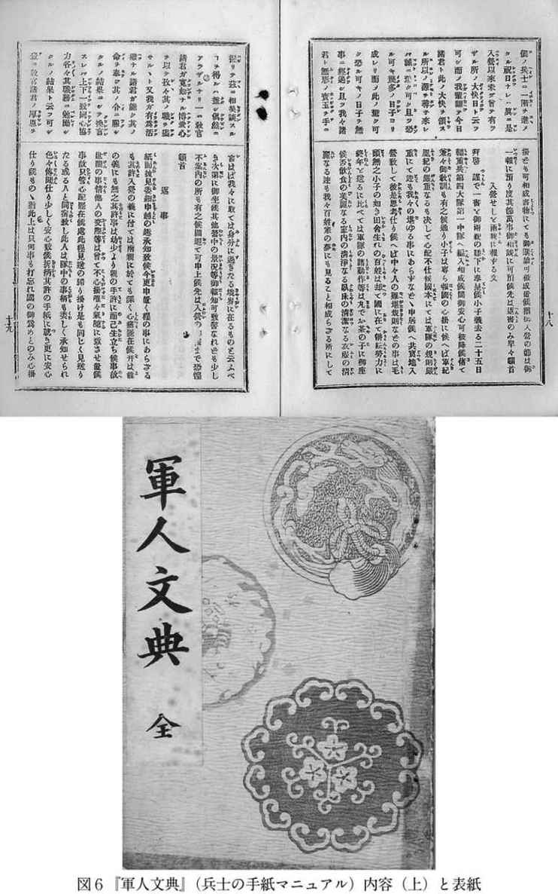

| 明治・大正・昭和 軍隊マニュアル～人はなぜ戦場へ行ったのか～ | |
| 一ノ瀬 俊也 | |
| (2004) | |
彼とは戦前の農民運動指導者として著名な渋谷定輔（明治三八［一九〇五］～平成元［八九］）である。入営前から憲兵に目をつけられていた彼は、村境まで来たところで皆に挨拶をするように言われ、「私たちは戦争を起こすための兵士ではなく、戦争をなくするための兵士としての使命を果たしたいと思います」と述べて分会長のひんしゅくをかっている。そうした行動が功を奏して（？）、彼は「目の病気」を理由に軍隊から即日帰郷を言い渡された（彼によれば、目の病気などなかった）。帰郷後、彼は部落の一軒一軒を「除隊挨拶」に回り、隣町の印刷所に行って入営時と同じく「除隊挨拶状」を注文している。
前年に普通選挙法案が議会を通過、大正デモクラシー盛んなりしこのころにおいてすら、社会の末端では、このような徴兵・軍事に関する儀礼行為が毎年展開されていた。ここで注目すべきは、渋谷の振る舞いが人々の一般常識に照らしてみれば筋違い、逸脱以外の何物でもなかったことである。他の若者であれば「皆さんの期待に応え、努力を誓います」といったような、村の幹部が気に入るであろう決まり文句を述べたに違いないのである。
そして兵士を見送る村の人々も、「甲種合格は国民の名誉」だ、「合格おめでとう」などと、渋谷に言わせれば「全くの偽言」を口々に述べていたのである。たとえ本心では「一家の働き手がいなくなることを困り悲観し、また同情してい」たとしても、そうした恨み言が「〈軍〉と〈国家〉にたいして」発せられることは決してなかったのだ（以上、渋谷一九七〇［参考文献に関しては巻末参照。以下同］）。
つまり、入営という村にとっての一大公的行事を通じて、村民一人一人がある「決まり文句」を受けて「決まり文句」を発することは、既存の体制・秩序に従うか否かを示すべく、自らポーズをとってみせることに他ならなかったのである。
渋谷はのちに治安維持法に違反したかどで警察に検挙されている。そうしたことが社会のなかで生きていく上で望ましくないことは、今も昔も変わりはない。おとなしく権力の意にかなう「決まり文句」を述べて秩序に従っておいた方が、当面は安全だったのである。
本書のテーマは、そうした徴兵にまつわる「決まり文句」の数々を収録した「マニュアル」本である。渋谷が住んでいた村の幹部たちが行った激励の演説、それに応えて彼ら入営者が行う挨拶、印刷した入営・退営の挨拶には多数の例文「マニュアル」本が存在し、安価で売られていたのである。今日でも書店に行けば売っている、『挨拶・式辞文例集』や『手紙の書き方』といったジャンルの本の軍事版と考えていただければよい。
そして渋谷の日記には出てこないが、兵士が入営後、村や肉親に書く手紙の模範例集、軍隊の知識・生活心得を細々と記した「マニュアル」本も多数存在した。渋谷とて日記には書かなかっただけで、そうした「軍隊生活心得」の一冊や二冊、買って読んでいたかもしれない。
本書におけるそのような「マニュアル」の定義・分類について整理しておく。
それは、兵士とその周辺の人々の「あるべき」振る舞いを規定した、（主に）市販の書籍であり、大きく分類するならば、
①入営した兵士のための兵営事情案内・軍隊教科書（『兵卒須知』などの名がつけられた）
②軍隊・戦場にある兵士と一般人とが相互にやりとりする手紙例文集
③兵士の入営・凱旋・葬儀の際用いる、式辞・挨拶模範
の三つに大別できる。例えば②、③の機能を一冊に盛り込んだものもあるが、性格的にはおおむねこうなる。本書では、これらを総称して、必ずしも妥当ではないかもしれないが、軍隊「マニュアル」と呼ぶことにしたい。兵士の「マニュアル」と聞いて、南の孤島で米軍と戦う日本軍の「サバイバル・マニュアル」のようなものを想像しておられた方は、恐縮だが別の本をお読み頂きたい。
これらの軍隊「マニュアル」は現代のものと同様、安価で誰でも買える、一冊だけを見ればありきたりとしか言いようのない本である。おそらくそのためか、これまでの歴史学研究の中で積極的にとりあげられることもなかった。しかし、これらを地道に集めて明治から昭和期まで一列に並べてみると、おのずと浮かびあがってくるものがある。
それは、このような「決まり文句」を通じて、当時の民衆が「なぜ自分は喜び勇んで軍隊に行かねばならないのか」、「この若者はなぜ戦争に行かねばならないのか」について、少なくとも表向きにはどう納得していたのかがわかる、ということである。この点を明確にすることは、「軍隊の存在」が当時の社会の中でどのように論理的に正当化され、逆らえない存在たり得ていたのかを解き明かすことに他ならないのである。
そのような〝論理〟は、決して先天的に人々の頭の中に存在していたのではなかった。例えば、明治一七（一八八四）年に刊行された中野了随『通俗徴兵安心論』（鶴鳴堂、定価一三銭）なる書物は徴兵令についての通俗的解説書であるが、人々が軍隊に行かねばならない理由を、
嗚呼人々此の兵役を嫌悪するときは、此の国を外人に略奪せられて、亦た印度の如きに到るも知るべからず恐るべし懼るべし......人々愛国の心情を興起して奮いて兵役に従事し、報国の義務を弁知して潔よく徴募に饗応して国事に尽力するときは、内に不逞の徒の生ずることなく、外は夷虜の嘲笑を来すことなく国権民権共に伸張して、実に大安心大安楽の佳境に逍遥して自由の空気を呼吸、自在の歓楽を享受せらるるに至るものぞかし
と、要するにお前たちがいさぎよく兵士となって国を護ることで国家国民の自由が保たれるのだ、というところから説いている。
徴兵令が制定されて一〇年以上もたち、明治政府の強権的イメージとも相まってとっくに社会に根付いていたようにみえてしまう、「兵士になること」の意義とは、未だ口を酸っぱくして「説明」されねばならない程度のものでしかなかったのである。同書のタイトルを借りて言いかえるならば、徴兵とは「安心」して従ってよいものである、というところから説き起こされねばならない程度の存在だったのである。
このことは、何も明治初年だけに限られた問題ではない。昭和戦中期に至るまでそうだったのである。つまり、徴兵・軍隊の正しさとは、その時々の政治・社会的価値観にかなうよう、常に繰り返し説明される必要があったのである。本書がとりあげる各種の軍隊「マニュアル」たちは、その装置に他ならなかった。大量の軍隊「マニュアル」が太平洋戦争期まで刊行され続けた事実は、その端的な裏付けとなろう。「天皇陛下のおん為に」などといった抽象的な言葉を叫ぶだけでは、人々を動かすことなどできなかったのである。
その時々の社会における軍隊・戦争の存在、兵士になることの「正しさ」がどのような論理で説明され、いかなるかたちで繰り返し確認されていったのかを跡づけてみたい。これが本書の最終的な目標である。
ここで強調しておきたいのは、人々が〈自ら書く・語る〉行為の重要性である。つまり人々は「マニュアル」を見て、兵士たる自分、兵士を見送る人々が発するべき「正しい」言葉を、あたかも自分の主体的な言葉であるかのように発したのである。すなわち、軍隊に行くことの「正しさ」が、こうした人々の主体的（であるかのような）行為を通じて繰り返し確認されていったのである。嘘も一〇〇回言えば本当になるなどという言葉があるが、そうした身体的行為を通じて、彼らの内心とは別に、徴兵は誰にも逆らえない、正しい「建前」として成立していったのである。
おそらくは誰にとっても、戦争に行って死ぬなどまっぴらごめんというのが本音であったろう。だがそれはいわば本音にすぎず、多くの人々が建前に縛られながら戦争に行き、死んでいった。建前とは重要な、恐ろしいものなのである。私が兵士や周りの人々が用いた「マニュアル」に注目する理由は、ここにある。
国家権力のむき出しの暴力の前に人々は抵抗のしようもなかったのだ、だから「建前」のあり方、つくられ方などどうでもよい、というのは皮相な見方である。まがりなりにも納得することなくして結局のところ人は動かないからであり、むしろ何らかの論理を示して人々を説得し納得させるために権力は腐心していたというのが、太平洋戦争以前の大部分を通じての実態に近いと私は考える。そのほうが効率的だったのであり、逸脱者に対する暴力の行使は最後の手段であった。
とはいうものの、軍隊「マニュアル」から読み取れるのは、堅く正しい「建前」ばかりでもない。そこには、公の刊行物であるにもかかわらず、軍隊という巨大な存在に対する人々の迷いや不安、反抗心といった心のひだも透けてみえる。本書は徴兵・戦争という巨大な経験と近代の人々がどう向かい合ってきたのかを、建前と本音の両面から、ひとつの通史として描く試みでもある。
本書に引用した資料は、読者の便をはかって漢字カナ交じり文はかな交じりに、旧漢字は常用漢字にそれぞれ改め、部分的に句読点・送りがなを追加するなどの修正を加えた。各資料は兵士の「マニュアル」という性格上総ルビであることも多いが、煩雑に過ぎるのでいったんすべて削除し、必要に応じて一ノ瀬が付した。
目次
本章では、徴兵制が開始されてからまもなくの明治一〇年代から日清戦争前後までに、兵士の教科書をはじめとして、模範的な書簡・挨拶文例など、さまざまなかたちの軍隊「マニュアル」が出現し、日本の社会に定着していく過程をみる。それは同時に、明治の人々がなぜ徴兵を受け入れていったのかを問い直すことでもある。
兵士の「マニュアル」と聞いて、教科書にも載っている『徴兵免役要録』などの、いわゆる「徴兵逃れ」マニュアルを思い浮かべる方々も多いのではなかろうか（【図２】）。これらには明治六（一八七三）年制定の徴兵令の条文が紹介され、「国民皆兵主義」とはいいながら一家の戸主、跡継ぎ、官吏学生などに広く認められていた免役条件、つまり軍隊に行かなくてもよい条件とは何かについて、わかりやすく解説されている。しかしこれらは、明治一六（一八八三）年ごろまでには姿を消してしまうとされる（加藤二〇〇〇）。徴兵令が改正されて兵役を免除される者の範囲がしだいに狭まったからであり、また官憲の目が光っていたためでもあったろう。
しかし、徴兵令の通俗解説書自体は、その後も引き続き公刊されている。例えば服部兼次『応否摘要 徴兵道しるべ』（明治一七［一八八四］年、開巻舎、定価二二銭）は、徴兵に関する規則を知らずに罰せられる者が多いため、これをふせぐという趣旨で作られた。著者服部は「序文」にて、「予往年徴募に応じて金沢営所歩兵第七連隊に編入せられ、中隊長歩兵大尉林隆夫君の揮下に属し、後挙げられて分隊長の職を奉じ......」云々と述べている（林の名は同書の「演義」＝監修者として表紙に掲げられている）。服部はおそらく徴兵で入営し、下士官まで勤めあげた人物なのであろう。
同様の徴兵「マニュアル」として、相澤富蔵『兵役者心得』（明治一九［一八八六］年、定価二五銭）もある。これは例えば居住地の役場に提出する転居届など、兵士にとって在役・在郷中を通じ必要となる諸書類の書式集である。相澤は新潟出身、明治一〇（一八七七）年東京鎮台（後の師団）工兵第一大隊に入営、三年間の服役後、軍隊に関する書籍専門の出版社「厚生堂」を設立、大正四（一九一五）年に死去する（『大正過去帳』）まで、多数の書籍を刊行していく人物である。（〝裏マニュアル〟で処世術を説く へ戻る）
このように、軍隊生活を実体験した兵士たちの手で徴兵「マニュアル」が刊行されていくのだが、それらが前出の『免役要録』的書物と決定的に異なるのは、相澤『兵役者心得』が序文に、
嗚呼人誰か自家の興廃存亡に対し喜憂を懐かざるものあらん、啻に喜憂を懐くのみならず、其の之を維持するは即ち人情なり、而て独り邦国の盛衰安危に至りては往々痛痒相関せざるものあり、是れ吾儕［＝自分］の殊に怪訝を置く所なり、抑も邦国は自家の聚合即ち各人父母墳墓の土地にあらずや、然るを苟も邦国の盛衰に相関せざるあらば、即ち是れ自家の興廃に与らず各人父母墳墓の荒蕪を顧みざる者なり、若し果して斯くの如くんば、即ち人の人たる所以の者将た安くに存ずるや
と、兵士たる自己の務めを果たすこと――同書の趣旨に即していえば、退営後もきちんと転居届などの書類を軍・役所に提出し続けること――が国家を「保護」することであり、「各人父母墳墓」の地を護ることでもあると説明していることである。つまりこれらの徴兵「マニュアル」は、兵役義務を逃れるためではなく、積極的に果たすための「マニュアル」として作られているのである。
こうした書籍が作られた背景には、明治一二（一八七九）年から二二（一八八九）年にかけて徴兵令が相次いで大改正され、とくに二二年の改正ではそれまで認められていた、戸主などの徴集猶予制が全廃されるなど兵役が逃れづらくなり、それだけ多くの人々が服役を強いられていったという事情があった。その中で民間の「マニュアル」の刊行販売は、ひとつの商売として成立するに至ったのである。商売上の〝うたい文句〟という面もあるだろうにせよ、そうした徴兵正当化の論理を社会に向かって説く兵士たちが出てきたのは、広い意味での軍隊教育の成果であろう。
かくして、多くの兵士が自ら買って読む「マニュアル」（むろんその背景には、刑罰を恐れる心情があるのだが）が出現し、徴兵はできれば「免れたい」他人事ではなく、「国民」一人一人が「積極的に務めるべき」ものである、それが自己の利益、つまり「自家の興廃」にもつながる、という文脈で語られ正当化されていく、という時代がはじまったのである。
兵士の持つべき「マニュアル」といえば、軍隊教育の過程で与えられるテキストを想像される方もあろう。ところが太平洋戦争以前の全般を通じて、日本の陸軍は全国共通・公式な軍隊教科書を編纂することはついになかった。銃の扱い方や上官の呼称、戦闘時の運動隊形など覚えるべきことは多々あったにもかかわらず、基本的には教官が口述し、兵士たちはそれを聞く、という教育方式だったのである。
明治初年における新兵教育も、そのようなものだったらしい。例えば陸軍少将曾我祐準は、「隊中文教論」と題する文章（『内外兵事新聞』一三、明治九［一八七六］年六月）の中で、兵士たるものは「各人国家のため義務を尽すべきことを知り、事あるときは誓死奮発して其の役に従うことを楽しみ、愛国の念死に至るまで忘れ」ないようにしなければならない、そのためには「教科書の編輯」が必要だと主張している。
ここで曾我の言う「教科書」とは、兵士たちが「博く文字を解し郷間に識者と称せられ」るためのものであり、狭い意味での軍隊知識を教え込む「教科書」では必ずしもないのかもしれない。だがいずれにしても、この時期の軍隊に兵士の「教科書」的なものは存在していなかったことがわかる。もしそれがあったならば、彼はその「改良」を主張したはずだからである。
ただし明治一〇年代後半～二〇年代前半まで、個々の連隊が独自に兵士の「教科書」を編纂する事例があった。私が収集した範囲では、次のものがある。
兵卒教科録 歩兵第一四連隊（小倉） 明治一六（一八八三）年
兵卒必携 歩兵第六連隊（名古屋） 明治一六年
兵卒口授問答録 歩兵第四連隊（仙台） 明治一九（一八八六）年
兵卒教授書 歩兵第一六連隊（新発田）明治二二（一八八九）年
歩兵須知 歩兵第二二連隊（松山） 明治二四（一八九一）～二七（一八九四）年
［内容より推定］
兵卒教科書 歩兵第九連隊第六中隊（大津）明治二五（一八九二）年
これらの教科書（【図３】）では何が教えられたのか。共通するのは軍人勅諭（明治一五［一八八二］年、天皇が軍人に与えた勅語、忠節・礼儀・武勇・信義・質素の五つの徳目を説く）の解説、上官の尊称などの基本的な諸知識であるが、なかには明治初年らしい雰囲気を感じさせる記述もみられる。
その第一点は、兵営内での身ごなしの問題である。『兵卒口授問答録』（歩兵第四連隊）は、兵士の心構えを問答体にしてわかりやすく示したテキストであるが、
問 窓より流動物を投落する等の事はなして可なるや
答 流動物其の他の物品を投落し、又は物を乾し、或は窓の縁にて物を切り、又妄りに釘を打ち付くべからず
問 大小便は何処に於てなすも可なるや
答 厠の外に於て為すことを禁ぜらる
といった問答を掲げている。これらは陸軍が部隊日常の勤務秩序などを定めた規則書『歩兵内務書』（後の『軍隊内務書』）の条文に則したものである。軍隊は学校と並んで明治社会の「近代」化モデルになったとよく言われるが、その明治も半ば近くになって、こうした初歩的な注意が兵士教科書に載っている。人々の「近代」化とは、決して一朝一夕になされたものではなかったのである。ちなみに軍隊内務書の「厠」などの規定は、大正一〇（一九二一）年の改正でようやく姿を消した。
第二点は、兵士と人民の関係である。歩兵第九連隊第六中隊『兵卒教科書』は、「兵卒は人民に対し驕傲不遜の挙動あるべからず、是れ兵卒の最も賤悪すべきことにして、人民より誹評を招き、一己の醜行延いて一隊の面目を汚すに至る、故に兵卒は温順及び懇信を以て人民に接し、其尊敬を受くるを要す」（七頁）と説いている。
明治初年における軍隊の風紀とは決して良好なものではなく、明治一一（一八七八）年には西南戦争の論功行賞に対する不満を持った兵士たちが、政府に反乱を起こすにまで至った（竹橋事件）。しかも彼らは天皇を護るべき近衛兵であった。そうした兵士たちの荒っぽい気風は、日清戦争直前のこの時期まで残存していたのであろうか。読者の方々には意外かもしれないが、明治の陸軍は人民の目におのれがどう映っているかを、常に気にしていたのであった。
第三点は兵士たちが持たされる銃の位置づけである。以下は歩兵第六連隊『兵卒必携 第一編』における、銃の機能や各部品の名称、分解手順を説く問答の一部である。
問 手銃は如何なる物と思うか
答 之を大にしては護国器之を小にしては護身器なり
おのれの身の安全を託すべき銃はやがて国の安全をも護るというのである。個々人が自己の運命と国家の命運を同一視する、言いかえればナショナリズムの内面化という事態とは、このような細かく具体的な説明を通じて進んでいったのであろう。ちなみに同様の説明は、本書の次節でとりあげる市販の軍隊教科書にも「村田歩兵銃は歩兵の一身と国家を保護するものなれば決して軽忽粗略の取扱いあるべからず」（宮澤代太郎『兵卒教範 軍隊学 増補第三版』兵事会、明治二九［一八九六］年、定価不明、五四頁）と引き継がれており、広く行われていたもののようである。
四点目は、私と国家との関係である。歩兵第四連隊『兵卒口授問答録』は、
○汝現役を終り郷里に帰るの日、父母大病にて朝夕をも計られず、時に充員召集に逢う如何にするや
△軍人は忠節を尽すが大切なる故、仮令親の病気でも先祖代々の君や国の為めには代えられざるを以て直ちに召集に応ず（一〇三頁）
という問答を掲げ、兵士たる者、国家の一大事にはたとえ親を捨ててでも駆けつけねばならぬと語っている。後世の眼から見れば当時の常識であったように思えることをいちいち説く必要性が、明治も半ば近い一九（一八八六）年の時点においてなおあったのである。
このように、各連隊の兵士教科書は兵士たちに兵営の規律、価値観を一から説き、教え込むものであった。しかしこれらの連隊教科書は明治二〇年代半ば頃には、ほぼ姿を消してしまう。
私はその理由を直接示す史料を持ち合わせていない。ただ、傍証となるのが、陸軍歩兵少尉増田正春が明治二三（一八九〇）年に書いた「新兵教育上の卑見」なる文章の一節である（『偕行社記事』四九、同誌は陸軍将校の親睦団体「偕行社」の機関誌）。
従来新兵に教授する所の兵卒須知は文体高尚にして解釈亦た困難なるのみならず、此が教育に任ずる下士上等兵は大抵文体を其儘暗記せしめんとするを以て、数日を経るも尚一事を記憶する能わず
文中の「兵卒須知」とは、連隊編纂の教科書もしくはこれに類するものと思われるが、それは兵士の教養レベルにそぐわないとの指摘である。確かに多くの連隊教科書にはルビも振られておらず、文字が満足に読めない兵士も多かったこの時期（尋常小学校教育の義務化は明治三三［一九〇〇］年から）にあっては、作ってもむだということになったのではなかろうか。
かくして陸軍の新兵教育方針は口述教育へと固定化され、それは昭和二〇（一九四五）年の敗戦まで続く。しかしそのことは、兵士の教育レベルが切り下げられたということを意味するものではなかった。なぜなら、連隊の教科書が姿を消していくのと同じころ、多くの兵士教科書が市販されはじめ、読み書き能力のある者がこれを買って軍隊に持ち込み、より深く学ぶという状況へと変わっていくからである。
私が見た範囲内で最初に市販された兵士教科書は、河井源蔵なる人物が編集兼出版した『改正 兵卒教程』（有則軒、明治二〇［一八八七］年、定価不明）である。「改正」というから、それ以前にも存在したのかもしれないが、さしあたり本書を最初のものとしておく。
『改正 兵卒教程』は、基本的には前述の連隊編纂教科書と同様、軍人勅諭、軍人の心得、上官の尊称、階級、室内起居の定則、服装などを略記したものである。おそらく購読した兵士は字が読める、上等兵に昇進したい兵士であったろう。一般の徴兵兵士が現役服役終了時までに昇進する階級は上等兵までである。明治一八（一八八五）年、それまでの上等卒が上等兵へと改称されて軍隊末端における地位が格上げされ（遠藤一九九四）、かつ社会的尊敬の対象ともなっていった。
これらの兵士教科書は、近代日本初の大規模対外戦争・日清戦争の前後に多数が作られるようになり、それは昭和の太平洋戦争期に至るまで続く。明治七（一八七四）年、平時定員三万一千余名で出発した陸軍は、日清戦争時には約一六万の兵力を動員するまでに成長、戦後にも大軍拡を行ったため兵員数はさらに膨張した。それはこうした種類の書籍販売が、ひとつの商売として成り立ちうることを意味したのである。
それらの内容も『改正 兵卒教程』と同様、勅諭や読法、階級など、兵士の記憶すべき基本的知識である（【図４】の『歩兵教育 兵卒の乳母』は軍隊教科書の一例）が、くわえて新兵としての心得や兵営内部の事情など、不安な入営者が必要としたであろう情報も多数収められている。以下、その諸相を観察していこう。
①ナショナリズムの涵養
河井源蔵『兵卒教科書』（有則軒、明治二八［一八九五］年、定価不明）は、「愛国」という概念について、次のように語る。「愛国とは自国を愛するを云う、夫れ我が大日本帝国は万世一系の君主の統治し給う所にして、開闢以来曾て外国の侵略を受けたることなき、世界に於ても最も光輝ある邦国なり、此の愛すべき誇るべき名誉ある邦国に我々の先祖が生息し保護しつつ、我々に伝えられたるなり」（二頁）と。「愛国」の概念は、このような「わかりやすい」説明の反復を通じて、兵士たちの、ひいては国民の頭へとしだいに入っていったのである。
②なぜ軍隊は必要なのか
前項にかかげた「愛国」という概念を前提に、井戸田市太郎『歩兵応用 軍隊学教程』（金城堂、明治三四［一九〇一］年、定価二〇銭）は、「国家に軍隊を設けらるる所以」について、「海外諸国の侮辱を受けず、国を泰山の安きに置き、名声を海外に振わし、内は高枕其の堵に安んずるの策なり」（三〇頁）と述べている。
高橋静虎『軍人読本』（軍事教育会、明治三三［一九〇〇］年、定価二〇銭）もまた、「軍隊は猶お蔵の壁の如く又家の垣のごとし、若し蔵に壁なくば何を以て品物を保護すべき、家に垣なくば夜中に犬狼だも防ぎ得じ、況や盗賊をや、されば我国の男子は皆軍隊に入るべき義務を有し、君国を保護すべき責任を有す」（三七頁）と説く。軍隊の存在、そして兵士が服役すべき理由もまた、こうした「わかりやすい」論理をもって繰り返し示されねばならなかった。
③兵営の世界
新兵たちに兵営内部の事情をあらかじめ知らせておくことも、軍隊「マニュアル」の使命のひとつであった。帝国尚武会編『入営之心得』（渡辺書店、明治二八［一八九五］年、定価不明）は、兵士にとっての兵営〝世界〟を次のように描写している。
新兵入営すれば古兵と古兵の間へ一両名宛を割り込みて居所を定めらるるを常とす、一室には概ね二十人或は三十人を容るるを得べし、室の中央なるテーブルと腰掛とは一列を為し其の両側には毛布と藁布団を備えたる寝台を並列せり、寝台の上方には棚ありて被服を整地し棚の下の釘には靴及び属具の類を掛く、実に一個の寝台と三尺の棚とは市中を我物顔に闊歩する兵士の三年間離るべからざる居城なりと思えば可笑もあれど斯は唯だ雨を凌ぎ夜を明すの仮の宿のみ、兵士は一望開豁の練兵場を持てり、此れは是れ兵士の舞台なり、万里の野峻嶺の頂何れか是れ兵士の遊園地にあらざる、思えば兵士の占領区域や大なりと云うべし（三一・三二頁）
やや長い引用になったが、兵士を取りまく兵営空間の実相をわかりやすく紹介したうえで、広大な空間を手に入れた「兵士たるもの亦愉快ならずや」と、彼らの自尊心をくすぐっている。ちなみに文中に出てくる「居城」という言葉は、「兵士は即ち、古の武士なり、故に斯行や高尚にして、意気勇猛なるは勿論なるべし」（三三頁）との文句と同様、明治なかばの庶民兵士の自尊心を喚起すべく用いられた〝甘言〟と言えよう。近代の日本軍隊は四民平等をうたい、武士身分の否定の上に成立したとよく言われる。しかしそうした見方は、当時の兵士たちにまじめに服役するよう〝説得〟する際に用いられた論理とは、ややずれているのである。
④兵役は「血税」
前出帝国尚武会編『入営之心得』は、国民が兵役を務めるべき理由についても興味深い説明をしている。同書において兵営とは「国民が国家を保護する為めに血税を納むるの役所」との説明がなされている。明治初年の徴兵反対一揆で嫌われ消えたようにみえる「血税」の語であるが、この時期まで生き残っていたのである。
注目すべきは、同書が続いて、「血税」であるからこそ、「商業者間に於ける如く金銭を以て代用せしむる事能わず、富貴の者も身体を出し貧賤の者も身体を出す、富貴の者とて安楽の業に就くこと能わず貧賤の者なればとても苦役に服せらるることなし、真に人権の平等なることを見るを得るは兵役なり」（三六・三七頁）と説いていることである。太平洋戦争以前の日本軍隊が擬制的ではあれ身分・貧富の差にこだわらない、兵士間の「平等」を売り物にしていたことは、これまでの日本軍隊論（飯塚一九五〇）でも指摘されているが、そうした徴兵正当化の論理は、こうした市販の軍隊「マニュアル」という微細な回路を通じて兵士に注入されていったのである。
「なぜ徴兵が〝名誉〟なことであるか」を説く
『軍人自誡』は明治二三（一八九〇）年、歩兵第二連隊（千葉県佐倉）所属の山本松太郎軍曹が著した兵士の教科書である。第三代連隊長・陸軍歩兵大佐内藤之厚が題字を、陸軍歩兵少佐渡辺勝重（第三大隊長）が序文を寄せており、連隊公認のものといえよう。
本書が前出の各連隊編「教科書」と異なるのは市販されたことである。定価は一五銭、巻末には東京神田の有則軒なる書店と麻布・大阪・千葉市川・佐倉の各支店、大阪・神奈川・群馬・豊橋・名古屋の代理店が「発売所」として列記されている。
本書が出版されるに至った経緯を、著者山本軍曹の序文からみていこう。我が国の兵士は「其の外部に於いて既に欧米に駕すと謂うも亦虚ならざるなり、唯内部即ち精神に至りては未だ以て悉く善良且つ堅固ならざるなり」、つまり兵士としての技量は欧米にひけをとらないが、唯一兵士としての「精神」に未だ十分でないものがある、この点を危惧した中隊長の末広歩兵大尉殿はかねてから自分に新兵の修身講話をするよう命じていたが、このたびそれらを本にまとめ一般の「精神教育に供する」目的で刊行したというのである。
外国に対する「精神性」の卓越を誇ってやまなかった、というわれわれの日本軍イメージに照らせば、兵士の「精神」に遅れをとっているとの自己認識が示されていることは興味深い。そして山本の旧友「北村鉄腸」なる人物の序文によれば、この時期の多くの軍隊「教科書」は「其の事を執らざる者」によって書かれているため「想像に出でて実際に適せざるもの」、「理論に偏して情勢に合」わないもの、簡単に過ぎるもの、冗長なものが多いとされている。ここに連隊が市販の「教科書」を事実上自ら刊行するという事態が生じたのであろう。
私が所持する同書には、「軍艦赤城在員 武田蔵書」、「広島県安キ郡呉和庄村武田松太郎蔵書」との署名がある（【図５】）。この「赤城」とは太平洋戦争時の有名な航空母艦ではなく、初代の砲艦（明治二三［一八九〇］年竣工、四四年除籍、『日本海軍編制事典』による）であろう。佐倉の陸軍軍人が編んだ「マニュアル」を、呉軍港の水兵が買って読んでいたわけである。
では本書には、どのような兵士の持つべき「精神」が示されているのであろうか。
まず強調されるのが、日本をとりまく国際環境の危機的状況である。「鷲」ロシアや「獅子」イギリスが、それぞれ得意の「侵略手段」「貿易手段」を用いて、風光に秀でた我が国をねらっている。日本が「いしをびや」（エチオピア？）のような炎熱の国、ロシアのような酷寒の国であるならばともかく、「気候の温和は以て軍隊の運動に適し、海水深くして以て船艦の進退に宜し」い位置にある。しかも「五万の現兵は以て内を守るに足らず、三十の軍艦は以て外を防ぐに足ら」ずという心細いありさまである。
このようなことでは「二千年来、英美愛す可きの宝国、風光掬すべきの楽地」も、「一朝にして鷲露の攫殺する所と為るも知る可からず、親しむべき君父兄弟、相率いて獅英の呑噬［＝侵略］する所と為らんも亦量る可からず」（二七・二八頁）。何としても日本をロシア・イギリスの侵略の魔の手から守り、インドのような惨めな国にしてはならない。そのことを思えば、日本人なら誰でも「百感胸に溢れて復た眠る能わ」ざるであろう。だから兵士たる者は「身を忘れ、力を致し、君に尽くし国に報い、所謂兵役義務に服すべき」なのである。近代日本における、最もわかりやすいナショナリズム涵養の言説のひとつといってよいのではないか。
確かに日本は二〇の外国と条約を結んでいる。しかし、「時に天下の公法は依るべからず、時にして四海の兄弟頼むべからず、況んや彼我の条約同盟をや、不幸にして一朝斯くの如くの勢に至らば、其の依頼して以て国家を保護する者、即ち兵力のみ、語に曰く、条理は銃砲の口より出ずと」（二四頁）。要するにいざというとき条約など当てにできない、頼みは国家の武力だけだというむき出しの実力主義的思考法であるが、こうした一世紀以上前の論理を不当と切り捨て得るまでの高みに、はたして現代のわれわれ、そして国際社会は達しているであろうか。
従来の日本史学は、このような兵士のナショナリズムに訴えかけた徴兵の正当化、説得の問題について、ほとんど目を配ってこなかったように思う。そこで強調されていたのは、兵役義務の「名誉」性を大上段から振りかざして押しつける国家と、ひたすらこれを〝苦役〟視して徴兵忌避などの抵抗を行う人民、という図式であり、「徴兵制がたてまえとしては名誉ある国民の必任義務をうたいながら、実際には兵隊にとられたものが損をする制度である、という矛盾」（大江一九八一）であった。
だが、そうした忌避者は圧倒的に少数であったこと、たとえ「矛盾」に満ちた兵役義務であっても、多くの人々は少なくとも表向きにではあれ、「正しい」ものとして納得ずくで受け入れていったことをわれわれは知っている。なぜ徴兵が〝名誉〟なことであるのか、決して難解ではない論理をもって諄々と説く同書は、なぜそうした事態が起こりえたのかを示唆するものである。
ここで興味深いのは、『軍人自誡』における、もうひとつの服役説得の論理である。
［天皇は］夙とに勲章恩給の典を設け、以て吾人兵士の名誉を表示し賜い、吾人兵士が義務に報酬し賜う、下人民も亦賞賛して曰く、花は桜樹、人は武士と、或は貯金以て吾人兵士が義務に酬い、或は廉価以て吾人兵士が需めを望む、啻に我が国に於いてのみ然るにあらず、世界万国文明を以て名ある諸国に於いても、其の兵士を待する、亦然り、嗚呼吾人兵士よ、仰いでは、上陛下の特遇を蒙り、俯しては下万民の尊敬を受く、豈に其の義務を尽さざるべけんや（一四頁）
国家のために兵士となった者には名誉と金銭（恩給）が与えられるのだぞという、なんとも利益誘導的な語りかけである。『軍人自誡』刊行と同じ明治二三（一八九〇）年、有名な金鵄勲章が制定されている。この勲章は将校のみならず、卓越した戦功を挙げた兵士たちにも与えられ、終身年金がつき、受勲者は社会的尊敬の的ともなった。「実際には兵隊にとられたものが損をする」という批判に対し、決して「名誉」の押しつけ一点張りで押し通そうとはしなかった陸軍の姿を、こうしたいわば「搦め手」からの説得に見いだすことができる。
ここまで、各軍隊「マニュアル」では、軍隊、徴兵の存在意義についての説明が、主に愛国の大義、国家と自己の運命の同一視といった、大上段に構えた論理をもって行われたと述べてきた。しかしそれだけで説明は完結していたのではない。軍隊の存在意義に関しては、個人の利益につながる「学校」という、一種ユニークな説明も市販の書籍を通じて行われていたのである。
橋亭主人『兵営小話』（大日本陸海軍兵書出版合資会社、明治三〇［一八九七］年、定価不明）は入営から退営まで、兵営内部の事情をルポルタージュ風に紹介した著作であり、その意味で一種の軍隊「マニュアル」と考えてよい。筆者は序文によると近衛兵（近衛歩兵第三連隊）とのことであるが、彼は新兵を迎えた古兵の口を借りて、「諸君、軍隊は国民の学校である」、「軍隊は故郷に居るよりは辛らいには相違ないが、是れ即ち国家の為めと思うて、忍耐して勤め給え、唯だ命令に服従して行きさえすれば済む事故、決して生意気な根性を起こしてはならぬ......」（三二・三三頁）と語っている。
ここで古兵たちの「経験に徴」し、新兵たちへの「忠告」というかたちで述べられているのは、軍隊を一つの「学校」とみる考え方である。つまり、軍隊に行くことは自己の利益に他ならないとされているのだ。確かに太平洋戦争以前の兵士たちには、一貫して〝滅私〟という考え方が要求された。だが重要なのは、それだけでは兵士たちの納得は得られない、と考えられ、この『兵営小話』のように、〝私〟の論理、個人への一種利益誘導的な考え方をもって、軍隊・徴兵の正当化がなされたことである。このことは、明治以降の人々が軍隊の存在をどのように受容していったかを問う際、興味深い事実であろう。
そうした考え方は、『兵営小話』と同様の兵営ルポ・一武人〔筆名〕『入営之準備』（博愛館、明治三五［一九〇二］年、定価二〇銭）ではより強調されている。
三年生涯［服役］なるものは果して如何にして経過するやを思うは順序の第一なるべし。蓋し三年生涯なるものの他の意味は即ち軍隊的訓練、規律的訓練、励行的陶冶の謂にして、此教練の結果は如何なる利益幸福を与うるものなりや否やを一考せよ......艱難に耐え、労苦を忍び、統一的思想を養い、人事百般の世界に処するには最大必要なる教練を授けらるるを以て、月を経、年を過すも其の陶冶の恩沢は永久摩滅することなかるべし、三年生涯の少年子に及ぼす所誠に此くの如きを以て、読んで茲に至れば、数多の心配や苦慮は徒に一片の杞憂にして、却て一大進運を形作り一生涯に重大なる幸福を与うるものたるを発見すべきなり（序文「入営者諸君を送る」）
軍隊で訓練を受ければ、規律や努力する姿勢が身につき、結局は一生の幸福である、そのあたりの損得をよくよく考えよというのである。
これらの兵営ルポは、兵士、職業軍人によって軍隊を擁護する立場から書かれたものである。そのような著作が軍隊を「人生学校」と説明していることに対しては、権力の立場に立った虚構に過ぎない、という見解もあるかもしれない。だが、はたしてそうだろうか。
三浦秋水『兵営実話 剣光燈影』（教王社出版部、明治三三［一九〇〇］年、定価一五銭）（兵士を称揚する社会――「式辞挨拶模範」の出現へ戻る）（コラム１へ戻る）は、軍隊の内実を描く過程で軍装検査の様子に言及、軍靴に「一点の土が付いていてさえ折りが悪いと二つ三つ横面をはられるのが哀さに力を入れて、一生懸命に磨て居る」と描写している。おそらく筆者の三浦は兵士として軍隊生活を経験した者なのであろう。彼はかかる私的制裁について、「隊の申送り」と唱えて旧兵が代々残して置くもので、「自分がやられたから人をもいじめると云うは所謂怨恨を罪なきものに移すのであって、君子の取らぬ所である」（五八頁）と批判しており、その意味で同書はけっして軍隊を手放しで賛美したものではない。
ここで重要なのは、その三浦にして、「あゝ階級、命令、服従の三の者、相待ち相寄りて軍隊の体面を完全に軍紀を森厳ならしめ、以てこの国民道徳の大学校とも云うべき、軍隊の生活を壮且つ快ならしむるのである」（四三・四四頁）との認識を人々に語っていることである。同時代人にとって、軍隊教育＝「国民道徳の大学校」というイメージは、もろもろの欠陥を押し隠すだけの強力な説得力をもって成立していったのである。
こうした内容の市販の軍隊ルポが、対ロシア戦をひかえて軍拡が推し進められていった明治三〇年代前半に多数刊行され、一定度の需要を獲得していたこと、言いかえれば人々にそっぽを向かれなかったことは、軍隊に対する社会的支持基盤の形成過程を考える際、留意されてよい。
兵士が軍隊に持ち込む教科書とは別に、彼らが兵営の中から肉親や近隣者に出すべき手紙の「マニュアル」も明治二〇年代に出現、以後昭和戦中期に至るまで、多数が刊行された。このジャンルの書物に関しては、日清戦争期に限ってのものだが研究がある（羽賀二〇〇〇）。それによれば、かかる書籍とその使用を通じて、近代の「軍国の文法」が形成されていったという。だが問題は、「軍国の文法」とはどのようなものか、兵士が行うべき「正しい」社会的発言とはいかなるものだったのか、ということであろう。
前出の厚生堂相澤富蔵が明治二一（一八八八）年に発売した『軍人文鑑』は、兵士が「操練服務の暇」に書くべき日用文・論説文などを収録した手紙「マニュアル」（定価五〇銭）である。「入営の前友人に与う」と題する手紙の模範例では、「毫も徴兵忌避の念なく深く現役当籤を欣うの誠心は天に対して愧なきのみ、且つや身体のみ徒に健全にして愛国の心なきは牛馬と異ならず」（一三三頁）などと書かれている。兵士たちはこうした種類の本を読みながら手紙を書いたのであり、こうした手紙を通じて「徴兵忌避」の社会的タブー化も進んでいったのである。
同書が示した、兵士たちのなすべき〝愛国的〟発言の数々も見逃せない。
例えば「陸軍兵海外戦地より友人に報ず」る手紙例として、「拙者共長崎発港後、何月何日大湾［台湾？］へ到着......大陸の侫播［寧波？］へ向い......此の地を旅団本部と定められ直に南金［南京？］城進征の筈」（七九頁）といった文章を掲載している。この他にも「某国の傲慢自尊なる漫に他人を侮辱し他国を軽蔑し敢て無礼を行うて忌憚なし、今回朝鮮の事の如きは其の最も甚しきものにして其の罪決して赦すべからず」（一一二頁）といった文章例がある。いずれも将来日本が突入するであろう対外戦争を想定した手紙例であり、その相手は清国との認識が如実に表れている。
もっとも清国をあくまで「某国」と言い続けてみたり（朝鮮をめぐって対立している国は清国以外ない）、地名を若干変えてみたり、このあたりは端的に言って恐怖心の表れであろう。あるいは外交的配慮に神経をとがらす政府の目を意識したのかもしれないが、いずれにせよこの時期の日本人の自信のなさを反映していることに変わりはない。
こうした自信のなさ、外国人への恐怖心・劣等感は、時にその裏返しとしての攻撃的言辞となって噴出する。
『軍人文鑑』の「馬上政策」と題する論説文例では、「彼の髯奴［＝西洋人］の頤使に甘じ、彼の髯奴の苛遇を蒙り、彼の髯奴の鼻息を伺い、彼の髯奴に軽侮せられ、彼の髯奴に蹂躙せられ、常に涙出てて彼の髯奴に従順す、而るに人々慣れて察せず」（一八五頁）といった西洋人への憎悪が叫ばれている。「日本刀」と題する文例ではより強烈な、
日本刀以て人を斬るべし......今や欧米諸国眈々逐々虎視涎を垂れ敢て以て窃に神州を窺うなきに非ず、願くは此刀を一磨して朝を以て某国の首を斬り、夕に以て某国の首を斬り、之を斬り之を斬り、之を斬りて又斬らん、遂に五大州中凶悪残暴の種子を一掃殄滅し、以て彼の幾億万の生歯を救うに至らば、豈亦天地の一大快事ならずや（一八七頁）
といった、何ともヒステリックな絶叫としか言いようのない文章が示されている。要するに清国も欧米諸国も「まわりはすべて敵」だったのである。この意味で同書は、日清戦前の日本人の対外観、心象風景の暗部を映し出す鏡とも位置づけられよう。
一方で、こうした手紙「マニュアル」は、近代日本初の大規模対外戦争をひかえたこの時期における、軍国と私の関係を照らし出す鏡でもある。三好守雄『軍人文典』（有則軒、明治二四［一八九一］年、（【図６】））（「軍隊＝楽なところ」というイメージの流布 へ戻る）に掲載された「戦地出立を報ずる文」は、
人の此世に存世するの限りハ何人にても功名手柄を望まざるものとては一人も無之と存候、先ず其の道も種々様々には候え共取訳け軍人程好ましきものは更に無之、其の訳は昔より功名をなしたる人は軍人より外には誠に少なく、左れば迚軍人に相成候も戦時即ち今日の如き場合無之候えば功名をなし手柄をなし候義ハ嘗て出来申さず、実に今日の如き場合ハ千載の一遇とも申すべき我々社会に此上もなき好機会にて、勝利之れ有り候時は申す迄もなく、仮令戦敗致し候も万代まで忠臣と碑に刻まれ候事、誠に軍人の面目と申すべく候、平時之を願うても得べからざる次第なれば、実に勇み進んで国の為め君の為めと只々砲声の相聞え候をのみ愉快場裏に相待ち申し候に付、此段分けて御安心下されたく候（七六・七七頁）
というものである。この手紙例からは、当時の兵士が「国の為め君の為め」だけに戦いにいくのではないこと、個人としての功名、名誉のためにも戦うのであり、それはむしろ国家の運命に優先してさえいることがうかがえる。そうでなければ「仮令戦敗致し候も......」といった記述は決して出てこないであろう。重要なのは、こうした記述が誰でも買える手紙「マニュアル」に掲載されていることである。明治という時代における〝公と私〟の関係とはこのように微妙なものであり、国家もそこまでは介入できなかった、あるいは介入するのは得策ではないと判断したのではなかったか。

ところで、軍隊の日常生活とは、これらの手紙文例ではいかに描写されているのであろうか。同じ『軍人文典』は、「入営せしを両親に報ずる文」として、「小子の如き百姓」にとって農作業に比べれば「軍隊の諸動作等は丸でお茶の子」であり、美麗な飲食、清浄な室内、清潔な臥床、清麗な衣服と、軍隊は「身分に過ぎたる境界」と、兵士にとって軍隊とは決して人間性圧殺の場ではないことを強調した手紙例を示している。
日清戦後のものだが、大澤勇『兵卒須知 軍隊文範』（中村鍾美堂、明治三四［一九〇一］年、定価不明）は、兵士が「自ら行為の整飭せしを悦び特に父母に報ずる文」として、「朝暮に交際致し候人々は規則の内に生活致し候人々にて、其の中にも己に勝る人を撰み親しく相交り力めて其の長所に倣い......其の験にや此の程は我ながら風采宜しく相成り、風格相顕れ豹変の思い致し候、郷邑に之有り候節は郷人より自堕落者と嘲けられ候事も之有り候え共、今は好尚渙然相変り......」（四二～四六頁）といった模範文を載せている。
郷里で心配しているだろう父母を安心させるためには、軍隊は楽なところだとか、「軍隊のおかけで真人間になれた」と書くのが適切だよ、というのである。こうした手紙を自ら書く、受け取る、というプロセスを通じても、前出の「軍隊＝人生学校」という社会的イメージは形成され、固定化していったのではないか。
兵士を称揚する社会――「式辞挨拶模範」の出現
本項でとりあげるのは、兵士と、彼らを送り出したり迎えたり、あるいは弔ったりする一般の人々のために作られた各種激励・挨拶の「マニュアル」である（「はじめに」に掲げた、渋谷定輔入営時の状況を想起されたい）。
そうした書物が刊行されはじめるのも、やはり日清戦争ごろからのことであった。その背景については、遠藤芳信氏の研究がある。すなわち、明治二二（一八八九）年の徴兵令大改正のころから全国各郡・市町村単位で「徴兵慰労会」なる団体を設立、現役満期者を慰労する会を開き、金品などを贈呈するようになったという（遠藤一九七六）。かかる社会の動きが、そこで用いる式辞の「模範」需要をも喚起していったのである。
日清戦争直前に書かれた伊東洋二郎『庶事百般祝文五千題』（明治二七［一八九四］年、田中宋栄堂、定価不明）は、序文で自分こそが祝文「マニュアル」の元祖であると主張、そうした種類の本を編んだ理由について、「今や農工商業、教育、衛生、軍事、警察、監獄、司法等は孰れも特殊の意義及理趣用語を具えり、若し此れ等の事情あるを知らずして漫に祝文を草す、群衆稠座の中に於て大笑を買わざらんと欲するも亦豈に得べけんや」と説明している。人々が公の席で「笑われないように」作ったのだという記述は、入退営兵士の「激励」という儀礼行為がようやく社会に一般化してきた証といえる。
では、式辞挨拶「マニュアル」の具体的内容についてみていこう。伊東の本と同じ頃に書かれた中岡貞三郎『国民祝文新書』（大谷津逮堂、明治二七［一八九四］年、定価不明）は、前出の郡徴兵満期慰労会における「告示」例を、次のように示している（読み手は会長＝郡長だろう）。
本日茲に我郡第何回徴兵慰労会を開くに当り一言を述べて諸子に告げん、夫れ我帝国臣民たる者は国家に対し皆兵役の義務あるは言うを竢たずと雖も、多数の臣民は此義務を果たすこと能わず、之を果たさんと欲するも得べからざる者あり、抑も生まれて男子となり徴兵に就き、国家干城の任に当り、此重大なる義務を果たすは実に無上の光栄なりと謂うべし......今や除隊に遇い恙なく郷里に帰られしは洵に諸子の好面目にして、本職等の喜悦する所なり（一三七頁）
前出の伊東洋二郎『庶事百般祝文五千題』は、こうした郷土挙げての歓迎を受ける側の兵士が読むべき「答辞」も収録している（なぜか歓迎する側の模範例は掲載していない）。「我某郡義勇会は今般余等帰郷軍人の為めに、慰労金贈与式を執行し大に余等を優待せらるゝのみならず、郡長及び監視区長等諸君は丁寧なる諭告を以てせらる、余等豈に感銘せざらんや、余等啻に感銘するのみならず、又当さに将来砕身刻苦して義勇公に報じ、以て今日忝うせし所の郡長及監視区長等諸君の諭告に答うる事あるべきのみ」（一〇〇頁）。郷土の期待に応え、なおいっそう奮励するとの模範的発言である。
こうした郷土の激励に関して、前出の兵営ルポ『兵営実話 剣光燈影』（参照）の筆者三浦秋水は、文字を知らない朴直な同年兵が「小学校の児童が試験免状を貰った時のように、日には二度も三度も観たり喜んだりして居る」紙があるので何だろうと見てみると、郷里の郡尚武会からの「君の光栄実に大なり......益々自愛忠勤せられよ」などと書かれた「送別の辞」であったという。三浦は「隣里郷党が此名誉者を出すを以て、かくの如く至誠こめて尽くし呉れるかとおもえば、誰か自ら奮い勇まぬものやある」（一九～二二頁）と感慨を込めて述べている。たとえ字が読めなくとも、明治の兵士たちにとって郷土の激励を受けるということは、後世のわれわれが思うよりは重みのあることだったようである。
このように、日清戦争前の日本各地では、兵士に「郷土の代表」としての名誉が与えられ、兵士は「郷土」の期待に応えて「砕身刻苦」を自己の言葉として誓うという図式が作られ、定着していったのである。その際「マニュアル」が果たした役割は、その作られた数を考えれば決して小さくはないだろう。
ところで、こうした激励・挨拶文作成に関して、やや後年のものだが、ある挨拶「マニュアルは」は次のような興味深い注意を読み手に喚起している。
作意は各自の心に思うところ、感ずるところを記述して、送りもし、迎えもすればよいのである、殊更らに大言壮語して以て、一時の快を貪るなどは、断じて戒めねばならぬ、何故となれば、社会のことは何に限らず、客気によって成就するものではないからである......文章と云うものは、あまり巧みであるよりは、拙くとも誠意のこもりて居る方が、人を感動さすることが大なるものである（河村定静『軍人送迎歓迎慰労 凱旋祝辞答辞文範』大学館、明治三八［一九〇五］年、定価三〇銭、一七四・一七五頁）。
社会のことは客気（から元気）によって成就しない、拙くとも誠意のこもっている方がよいから自分の感じた所をそのまま書けばよいといいながら、形式的「挨拶」例の数々を提示するのはひとつの矛盾のようにもみえる。後世のわれわれがそう指摘するのは簡単だが、ここではむしろ、これらの激励・挨拶「マニュアル」は何が「誠意」のこもった「笑われない」挨拶であるのかを全国の迷える人々に示したのであり、だからこそ郷土の若者を送る人々はその内容を受容、規範化していった、と考えたほうがよいのではないか。
日清戦争（明治二七［一八九四］年七月～二八［一八九五］年四月）中、多くの軍事専用の激励・挨拶「マニュアル」が市販されていったのは、ある意味で当然のことであった。日本の社会では戦争が終結するまで、歓送迎や弔祭など、社会のさまざまな場面で軍事に関する「挨拶」が日々飛び交っていたのである。
前出の伊東洋二郎は『戦時平時適用 凱旋祝文五千題』（星野文星堂、明治二八年）「凡例」にて、「近来各師団連、大、中隊の軍人諸君より特に書簡を以て、余に凱旋歓迎祝辞及び其答辞又は徴兵慰労（義勇、恤兵）会開会祝辞、竝に其答辞又は従軍践歴誌等の起草添削等を依頼さるゝこと頻りなるが、此れ等の文を軍人諸君自ら作り玉わんには、先ず能く斯書を読て時宜応用するの心を以て筆を取らば、亦必ず運筆自由なるべし」と述べている。
ちなみにこの伊東は名古屋在住、『仏教演説 達弁之述』（阪口鉄との合著、其中堂、明治二一［一八八八］年）ほか仏教の演説書を多数執筆しており、もともとは仏教の伝道師かそれに類する人物だったようである。仏教の布教活動に関するノウハウが、こうした軍人を激励し時に死をも受容させる「マニュアル」に応用されたとすれば、それは興味深い事実であろう。
戦争があれば、必然的に戦死者が発生する。日清戦争は、約二四万名の陸軍兵力を動員して一万三〇〇〇余名の犠牲者（うち病死約一万二〇〇〇名）を出した大戦争であった。それゆえ、戦争中を通じて、地域ぐるみの戦死者賛美が日々行われていった。
大橋又太郎編『日用百科全書第一五編 祝辞演説法』（博文館、明治二九［一八九六］年）は「故陸軍二等軍曹松岡武貫君を祭る文」と題して、「惟時明治二七年一二月五日、熱田恤兵会々長小塩幹、謹で清酌庶羞の奠を以て、故陸軍二等軍曹松岡武貫君の霊を祭る......惜哉、鴨緑江岸、戦機的に熟せんとするに際し、偶々二豎（＝病気）の犯す所となり、幽風一過、遂に此勇士をして、異域に不帰の客とならしめ、勇魂毅魄、去て復た声なし、嗚呼悲哉」との祭文（神道形式の葬儀における弔辞）を掲載している。
この祭文は、実際の葬儀で述べられたものを「マニュアル」に収録したようである。「熱田恤兵会」とは前出の徴兵慰労会の一種、郡単位で設立された徴兵支援団体であろう。戦死者は郷土の名誉を背負って死んでいったのだ、という称賛と確認の行為が全国各地で日々繰り広げられ、結果そうした戦死者観が社会に固着していったのである。
ただ、こうした肉親親族、あるいは身近な人々の早すぎる死がどう受けとめられたのかという問題について、別の激励・挨拶「マニュアル」は「公のための死」とは別の、興味深いかたちを示してくれる。岩井正次郎（南董）『陸海軍人 送迎演説模範』（求光閣、明治三三［一九〇〇］年、定価三〇銭）収録の「遺族を慰むる演説」は、「清国事件」（＝一九〇〇年の北清事変か）における一戦死者の「一周祭」を朋友知己が行ったときのものを想定したもので、
蓋し生ある者は死ありて、何人も一度は死ななければなりませぬ、然るに仮令天命にて終るとしまするも、多くの人より其死を吊らせるゝことは高貴の方々か天下無双の豪傑輩でなければできないのであります、之に反して軍人の戦死は其天命に非らざるが為め、将た国家の大事に忠死せるが為めに、四千万の同胞全体が名誉として其の死を吊する計りでなく、外国人さえ其死を吊するので、実に名誉としては此上ないことであります（五三・五四頁）
と遺族を慰めている。ここから読み取れるのは、国家への献身だけが、「戦争での死」をうけとめる理由とされているのではないということだ。すなわち、普通に死んだところで誰もその死を「吊」してはくれないが、戦争で死ねば、四千万もの同胞のみならず外国人までもがその死を「名誉」なことと賛美してくれる。戦争での死が、一種の個人的利得として語られているのである。戦争での死の受け止め方が、公への献身、言いかえれば〝滅私〟だけではなく、ある種の個人的利得としても語られているところに、日清戦争という大規模対外戦争が社会に受容されていった一要因があったのではないか。
通例、われわれは戦場での死を太平洋戦争以前の人々がどう納得、受容していたのか、という問題を考えるとき、靖国神社への「祭神」化をもってその答えとすることが多い。しかし、各種の「マニュアル」においては、同神社の名前はもちろん皆無ではないにせよ、後世のわれわれが思っているほどには出てこない。そこで賛美されているのは、むしろ「郷土」の代表としての死であることが多い。したがってこの「戦争での死の納得」という問題は、靖国神社の存在を指摘するだけではおそらく解決しえない。こうした社会の末端における賛美・確認のあり方にも目が向けられねばならないのである。
かくして、初の大規模対外戦争とその勝利を通じ、「兵役の崇高化」という事態が日本の社会の中で進展していった。岩井『陸海軍人 送迎演説模範』の「現役志願兵を送る演説」という模範文は、この間の事情を端的に述べる。
今五六年前即ち日清戦争以前に当っては国民挙げて文弱営利に流溺し尚武の気性とてはなく、従って軍人の如きに至っては殆ど社会に冷遇せられ若くは敬遠せられ、青年の多くは兵役に入るを以て一の御務とするの観がありました、此時に於て自から進んで兵役を希望する者なきは勿論、徴兵の命令に接して色を青くする者が多かったのであります、然れども今日に於ては余程の無識愚鈍の徒に非ざれば兵役を嫌悪するものはありません
同書には、この「演説」模範に対する兵士の「答辞」例も収録されている。
抑も国家にして兵力即ち実力がありませんでしたならば、仮令財力に富んで居りましても世界の舞台に出でゝ活発なる運動を試みることは出来ません......今日に於て内に兵力の恃むものがありませんでしたならば、如何にして其の威信を保維し権理を正当に主張することが出来ましょうか、仮令理に於て道に於て我国が正当なりとするも、到底侵害せられたる権利を恢復することを得ずして俗に曰う力及ばず泣寝入の悲境に沈淪せねばなりません、此に於て軍備の一日も寛にする能わざる所以であります、而して壮丁なる者が此の軍籍に入る殊は国家に対する臣民の義務にして寧ろ光栄と云わなければなりません（九三・九四頁）
国家の命運と自己のそれの一体視、力がすべてというものの考え方が、兵士たちのみならず、その周囲の人々をもまじえた発話、身振りの繰り返しを通じて戦時日本社会の随所で根付いていったのである。そこでは自己の「権理」と国家の「権理」の盛衰を一体視するという発想が、あたかも自己の内面から誠意をもって出てきた〝かのように〟語られているのである。それは社会の微細な局面におけるナショナリズムの確認行為に他ならなかった。その間、本章を通じてみてきたように、あるべき「発話」のかたちを示す手紙・挨拶「マニュアル」、兵士教科書が多数つくられていったことは、その需要――影響力の大きさをうかがわせる。
ただし、そこには私的利益（勲章や「四千万同胞」・外国人による賛美）の観点から徴兵を、そして死を受け入れるという考え方もうかがえるのであり、その意味で日本社会における戦争・軍隊観は微妙な二面性を持っていたことも指摘しておかねばならない。
日清戦争という対外戦争は、日本社会全体が徴兵、戦争の意義、正当性を自ら語り、確認する一大契機となり、やがてより大規模な対外戦争・日露戦争へと突き進むことになる。
兵士たちの一日とはどのようなものだったのであろうか。本書第一章でも引用した三浦秋水『兵営実話剣光燈影』をもとに、明治33（1900）年頃のある野戦砲兵連隊の兵士の一日を構成してみよう。
起床６時（または６時半）→馬の手入れ→７時半朝食→８時服装検査→10時半まで練兵、その後１時間程学科→昼食→午後２時間半練兵・学科→４時から５時半まで馬の手入れ→６時夕飯、その後休息（洗濯、手紙書き、入浴など）→７時半から８時半まで学科の復習→９時点呼、９時半消燈
なかなかハードなスケジュールである。「馬の手入れ」があるのは、砲を引かせるためである。彼らの食事のメニューは、やや後年のものであるが本書三章に掲げておいた。兵士たちは15～20人ごとに「給養班」（のちの内務班）と名づけられた部屋に入れられ、日曜日の外出時や数少ない休暇をのぞけば３年もの間、毎日「寝台を列ね机を置いて、読書寝食を共にし、上等兵以下一団となり兄弟の如く睦まじく暮らす」のだとされていた。
とはいうもののそれは建前で、実際にはとくに夜９時の消灯までの30分間が新兵にとってつらい時間であった。『剣光燈影』は、新兵たちに靴の磨き方が悪いなどと「一日中の善し悪しの講評」を「遠慮なく吹き出」す古兵たちの姿を描写する。体罰も主にこの時間なされたのであろう。
新兵たちは就寝後ひそかに「妻あるものは妻の愛情を思い......老いたる親あるものはまばらに其面影を夢みて数行の涙を絞」るしかなかった。とはいえ「軍隊は順送り」で、次の新兵が入ってくれば、彼らは自分たちがされたのと同じだけつらくあたったのである。
日露戦争（明治三七［一九〇四］年二月～三八［一九〇五］年九月）期においても、多数の手紙・演説「マニュアル」類が刊行されている。日清戦争後～対露開戦前につくられたそれらには、新たな敵として浮上してきたロシアへの敵愾心を持たせる役割が与えられていたのであった。そして開戦後の「マニュアル」には、日清戦時と同様、戦場での死を社会に納得させる役割が与えられていた。
岩井正次郎（南董）『陸海軍人 送迎演説模範』（求光閣、明治三三［一九〇〇］年）はタイトルが示すように、入退営する兵士のために行う演説の「マニュアル」である。同書は兵士を歓送する際の演説心得として、「例えば日清戦争に於て清軍は無惨にも我同胞の兵士を捕えて腹を抉ぐり鼻を削ぎ耳を削り虐殺を遂げたりと云う点に説き及んでは悲愴の語調を以て之を演述し、以て聴衆の同情を引くことに注意せざるべからず」と日清戦争の経験に照らし外国人の軍隊は残虐であると述べて聴衆の心を引きつけ、出征兵士への同情心を喚起するよう指導している。
そして「又た清国が何等の過失なきにも拘わらず某々等の強大国は呑噬［＝侵略］を擅まにし其清国の内地を分割せんとすと演述するに至りては須らく慷慨淋漓［＝悲憤に満ちた］の語調を以て之を敷衍［＝説明］し滔々弁じ来ること肝要なり、斯くするときは聴衆の感覚を惹くこと極めて易々たるのみ」（九・一〇頁）と、かつて戦争をした清国であるが、わが国が「某々等の強大国」から護ってやるのだと言えば聴衆の共感・人気を得られると述べている。
では「某々等の強大国」とはどこを指すのか。この点に答えてくれるのが、大畑重斎（裕）『青年祝文五百題』（薫志堂・求光閣、明治三三［一九〇〇］年、定価二〇銭）である。著者大畑の経歴などは必ずしも明確ではないが、明治二四（一八九一）～三四（一九〇一）年まで静岡県の国民学館なる学校で教鞭を執ったらしく（同書中にそのような記述がある）、その後上京し大正前期まで多くの通俗的な教養・修身書を執筆した、「職業・著述業」としか言いようのない人物である。
そもそも前出の伊東洋二郎といいこの大畑といい、本書が扱う「マニュアル」はさほど有名でもない人物によって書かれたものがほとんどである。それは逆に軍隊「マニュアル」の社会における普及性を示しているように思うが、それはさておき、大畑は「兵士送別会の祝辞」例において、演説者に次のように語らせている。
決眦一番宇内［＝世界］の勢を顧望すれば猛鷲翼を張て将さに南洋を図らんとし、黠獅［＝賢い獅子］牙を磨して東洋を呑まんとし、而して我国の勢実に其衝に当て危機一髪、誰か枕を高うするものあらん......此時此際諸子決然、剣を提て起ち、頗 る人意を強うするものあり（一三頁）
「猛鷲」がロシアを、「黠獅」がイギリスを指していることはいうまでもない。日英同盟の存在を知っているわれわれにはやや意外なことだが、この時点における日本人にとっては、ロシアもイギリスも同じ「白人の大国」であり、恐怖心・敵愾心の対象だったのである。
ではなぜ日本は自ら血を流してまで、かつて戦った清国を護ってやらねばならないのか。この点翌年大畑が書いた『陸海軍人 青年祝文演説一万題』（聚楽堂、明治三四［一九〇一］年、定価四〇銭）は、「兵士送別会の祝辞」と題して、清国が滅んでしまったらわが国はなおよく独立の地位を保ちうるであろうか、兵士諸君よ、国際社会の秩序を破り平和を無視せんとする「某々国を膺懲［＝こらしめ］」して清国を救い、我が国の独立を億万年までも維持して「益々光気を極東に輝し、列国をして共に其余光を仰がしめ」よ（九・一〇頁）、と絶叫する。
すなわち、兵士一人一人が決起して清国の独立を維持することが日本の「独立」――後世の言葉で言うならば安全保障――につながるという、実にわかりやすい論理である。
この文章のなかでは「某々国等」の「等」の字が無くなっていることに注意したい。それは直後に締結される日英同盟のために他ならない（締結は明治三五［一九〇二］年一月、事前交渉は前年から開始）。つまり、敵はロシア一国にしぼられた。大畑は同じ『一万題』（ちなみに「一万」の例文が入っているわけではもちろんない）の「新兵懇親会席上に於ての演説」のなかで、そのロシアについて次のように言わせている。
露国の野心、露国の強欲知るべきなり、彼は英国を屈服せしめて第二の英国たらんとするものなり、否な至る所、汽船煙を揚げ五大州何れの所へも鷲の描ける国旗を翻さんとするものなり、則ち日本も取り支那も取り朝鮮も取らざれば止ずとの野心、大野心を有することは三尺の童子も皆知る所、諸君豈に知らざることあらんや、今後我が日本の責任は重大である最も兵士の責任が重くある、故に兵士は今後富士山を負うて起つと云う決心なかるべからず（六二頁）
市販のありふれた激励・挨拶「マニュアル」であっても、現実の日本が置かれた国際環境の変化（もはやイギリスは敵ではない）と問題点を鋭く指摘している。人々はそれらを用いての発話を通じて、「ロシアの侵略的野心はなんとしても阻まねばならない」と日本が進むべき道を自らの道としても理解、受け入れていったのである。その際、鷲や富士山といったわかりやすいシンボルが多用されているのは、普通の兵士という読者層を考えれば注目される。
とはいえ、一方では大国ロシア相手に戦うため、兵士が記憶すべき具体的な心得も「マニュアル」に掲載されていくようになる。一例だけ挙げると、日英同盟締結と同じ明治三五（一九〇二）年刊行の兵士教科書、宮本林治『歩兵須知』（鍾美堂、定価不明、筆者は予備役？ の陸軍歩兵少尉）は、
清国は同盟国にあらずと雖も二十七八年の役には我軍は多くの清国の傷者病者を救護し懇切に扱いたるを以て、彼の国の傷者、病者は皆我聖恩の優渥なるに感泣拝謝せり......相戦うも敵我の為めに負傷するか兵器を棄て退かば、其者には決して害を加へざるのみならず侮辱を加ふることなく互に軍人たるの礼儀を守り尊敬すべし（六〇頁）
と教えている。日清戦争でわが軍は捕虜を愛護したのだから、次の戦争でもそうするように、というのだ。欧米列強の目を意識してのことだが、この文は正しくない。日本軍は日清戦争の初頭、上陸した先の旅順で敵の軍民数千名を虐殺する事件を引き起こしていたからである（井上一九九五）。ただ、ロシアとの戦争を間近にした当時の日本人が敵愾心を昂揚させる一方、このように冷静に準備を進めてもいたことは留意されてよい。ひとつの国家、社会が戦争へと突き進んでいく過程とは、その両面をあわせ持つものなのであろう。
「精神主義」のはじまり？
従来の日露戦争論ではあまり問題とされてこなかったことだが、大国ロシアと戦って勝てる見込みがあるのか否か、という点について、当時の日本社会ではどう考えられていたのだろうか。この点も、実は軍隊「マニュアル」から透かしてみることができる。
大畑重斎『青年軍人討論演説五千題』（求光閣、明治三五［一九〇二］年、定価三〇銭）は、「青年」を冠するだけに、青年が参加して催される討論会で行うべき演説の模範文も収録しているが、その一つに「軍備拡張と縮小の可否如何」というものがある。次の文章は、軍縮を是とする立場からの演説模範である。
兵は多数に依て必ず勝つと云うものに非ず、精練を以て勝つものなり、精練の兵を以て之に当れば十倍の敵兵を破る豈に難しとせんや、日清戦争の如きは其の好適例なり、其れ清国は大にして兵も亦随て多けれど、我が国の少数兵に当るを得ざるも畢竟するに我国の兵の精練なるにより（然り〳〵）、故に妄りに軍備を拡張せんよりも其兵士の訓練を精且つ専らにするに如かず（ヒヤ〳〵最も我輩の心を得たり）（八九頁、ヒヤヒヤとは賛意を示す合いの手）
ここで示されているのは、「精練の兵」は数に優る敵をも圧倒できる、言いかえれば戦の勝敗に数は必ずしも関係ないという思考法であるが、注目すべきはそれが日清戦争という実例に裏打ちされ語られていることである。
こうした考え方が、将来における戦争の勝敗は必ずしも「国力」の大小には関係しない、という発想につながっていったのではないだろうか。別の著者による激励「マニュアル」でも、兵士を送る村の「有志」は、
本日は今回小山君田村君古庄君の三名、兵役に徴せられて近々の内第六師団に御入営になりますことになりました......兵備のなき国は翼なきの鳥と同じく、到底何者かの餌とならずんば止まざることと思います、今や彼の諸強国の有様はどうでありますか、外面には文明を装い口に平和を唱えましても、内心に弱を取て己の餌となさんと思い居ることは明々白々たることではありませぬか......乍併回て考て見ますれば兵の強弱は必ずしも其数の多少に因ると断言することは出来ません、即ち彼の日清戦争に於て彼れが我れに数倍の兵を有しながら彼の如き失敗を取りましたのは、全く其の兵員の精鋭如何に因ることと私は考えられます（前出の岩井正次郎『陸海軍人 送迎演説模範』「入営を祝する演説」）
と語っている。前述したように、明治三五（一九〇二）年の段階において「内心に弱を取て己の餌」となそうと考えている国はロシア以外にない。しかしその強国ロシアと戦わざるをえないとしても、「兵の強弱は必ずしも其数の多少に因る」とは限らず、戦いはやってみなければわからない。戦争の勝敗は兵士の訓練いかんにかかっており、それは日清戦争という実例が示している、だからお前たち兵士はぜひとも奮励してくれよというのである。
この「有志」による入営祝いには、兵士が読むべき「答辞の演説」例も対置されている。
決して諸君の不名誉となる様なことは致しませぬと覚悟致して居ります、殊に吾輩が兵員となりし上は不名誉のことがありますれば、只に吾輩が古郷の方々即ち此の席に居られまする諸君の不名誉のみではありません、又一郡一県延いて我大日本帝国の不名誉となることゝ思います（三〇頁）
兵士の側もまた、そうした「国力」と戦争との関係についての説明を受け入れるかたちで、努力を誓っているのである。
太平洋戦争が日米の国力を無視した無謀な戦争であった、とはよくいわれることである。しかし、それをいうなら日露戦争も同じくらい、あるいはもっと無謀な戦争ではなかったか。かろうじて勝てたからあまり言われないだけのことで、実際には危うい勝利だったのである（参照）。日露戦争前、こうした演説を通じて、「戦争は国力では決まらない」という説明が「日清戦争の勝利」というそれ自体は確実な論拠に基づいてなされていたことは、当時の日本人が「大国」ロシアと戦うことをいかにして納得していたかを暗示するとはいえまいか。
日清戦後、激励・挨拶「マニュアル」においてロシアが次なる敵として名指しされていった過程をみてきたが、日本の安全保障を考える上で重要な要素がもうひとつあった。朝鮮である。事実、対露開戦以降に刊行された激励「マニュアル」には、朝鮮にかかわる記事が多く出てくる。
河村定静『軍人送迎 祝辞弔祭慰問文範』（大学館、明治三七［一九〇四］年、定価二五銭）は、まだ戦争が終わっていないにもかかわらず、早手回しに「凱旋せし将兵を迎うる文」を掲載した激励・挨拶「マニュアル」であるが、その中では、
我が大日本帝国は、満韓両民の彼が毒牙に触れ、奸計に陥りて以て国家の喪失するに至らんことを恐れ、大いに軍兵を発して以て彼を満州地外に放逐し、僅かに満韓両民の苦難に陥らんとするを救えり、而して諸君は此の空前の大功績を双肩に担い、絶後の大名誉に前駆せしめて以て、今月今日を以て凱旋せられたり（八八・八九頁）
と、満州、韓国の民衆をロシアの「毒牙」から救うことが戦争の大義であると主張している。当時の日本社会における建前としての戦争認識とは、おそらくそのようなものだったのであろう。対露開戦に際して天皇が出した詔勅にも「韓国ノ保全」が戦争目的のひとつとして明記されている。しかし、その朝鮮に関して、河村『祝辞弔祭慰問文範』はやや奇妙にみえる認識も示している。
同書収録の「姉夫某の朝鮮守備に赴くを送る文」（この日露戦争あたりから、各種の激励・挨拶「マニュアル」の設定は、だんだんリアル・多彩になってくる）における朝鮮は、
盟兄も御承知あらせらるる通り、朝鮮は既に我が日本帝国の保護に帰して居る国であります、日清戦争も之れが為めに開かれました、日露戦争も之れが為めに開かれました、而るに朝鮮国民は元来事大主義［＝大国に従う主義］でありますから、我が国の斯まで彼が為めに尽瘁［＝尽力］するにも係わらず、彼は常に款を露国に通じて、我が国の不利益となるような事ばかりを企てて以て、我が施政に妨害を加うることは一再にして止まりませぬ......日露戦争の最中なる今日、各所に暴動を起して露の為めにするものも少くない......彼等は実に不開化極まる人民共でありますから、是れは前から注意して以て、犬死せぬようにせねばなりませぬ（一八・一九頁）（参照元へ戻る）
と、要するに日本の真意を理解しない、頑迷な遅れた国として描かれている。これだけならば、よく言われるところの朝鮮への侮蔑観として読むこともできようが、同書における朝鮮観のゆがみはそのように単純なものではない。というのは、この『祝辞弔祭慰問文範』は「朝鮮守備兵の暴民の為めに虐殺されしを吊する文」と題する、朝鮮を守備しに行ったにもかかわらず、現地で「虐殺」された兵士を弔う模範文まで掲載しているからである。
朝鮮国民は、半開の人民なり、其の智識に於て、其の作業に於て、将又其の信仰に於て、特に其の然ることを知るなり......故に其の為す所は依然古代の如くにして、今日の世界の文化に伴わず、是を以て欧米の列強は、これを呑噬［＝征服］して以て東亜に臨む根拠となさんとす、是に於て、我は彼を助けて以て支那と戦い、又露国と戦って以て、之れが独立を扶掖［＝援助］すと雖も、頑冥なる彼等国人は、動もすれば露の甘言に欺かれて以て、其の独立を危くせんとせり、我は彼と唇亡びて歯寒きの関係あり、故に彼に守備兵を派して以て其の独立を扶掖するの義務あり、然るに彼等は我を以て禍心［＝野心］あるものと疑い、我が守備兵に対して屢々危害を加え、遂に上等兵朝野鮮八、一等卒高麗八郎の二人を殺害せり（二五五・二五六頁）
朝鮮人を「古代」以来一歩も進歩しないと見下す日本人の自意識過剰ぶり、朝鮮人に対する猜疑心の根深さのにじみでた文章である。「八郎」「鮮八」の八は、朝鮮八道の八であろうか。先の引用文とともに、朝鮮人の抗日ゲリラ（いわゆる義兵）との戦闘による戦死者を念頭に置いているのかもしれないが、「満韓の民」を保護する戦争であるはずなのに、なぜ彼らに「虐殺」された兵士の弔辞をあらかじめ作っておく必要があるのだろうか。朝鮮に対するやましい心（「禍心」）がないのであれば、そのような弔辞など不要だったはずである。他人の土地を支配することへの、なにがしかの後ろめたさを感じさせる。
この「吊する文」が現実に用いられることがあったか否かはわからないが、当時の日本人の朝鮮に対する本音と建前の乖離をはからずもにじませた史料として紹介しておく。
海軍軍人専用の手紙「マニュアル」
ここまで取りあげてきた兵士の手紙「マニュアル」は、その多くが陸軍兵士用のものであった。商売の論理からすれば、自ずからそうなるのであろう（陸軍と海軍とでは、兵士の数がまるで違う）が、だからといって海軍兵士専用のものがなかったわけではない。
脇田休次郎『軍人文範』（明治三四［一九〇一］年、定価三〇銭）は、その名も「軍港堂」なる出版社から刊行された、海軍兵士専用の手紙「マニュアル」である。この軍港堂は本社が神奈川県の横須賀にあり、広島県の呉に支店・特約販売所、長崎県の佐世保に出張店を持ち、巻末の広告によると各種の海軍教範・礼式の解説書を刊行している。海軍兵士に特化しての商売が成り立っていたわけである。
その内容は、きわめて海軍らしいものである。水兵が「陸戦隊の戦況を報ずる文」例（陸戦隊とは海軍内の陸上戦闘部隊。陸軍歩兵と同等の装備を持っていた）には、
未明某砲塁を攻撃占領致し次いで各艦より上陸せし陸戦隊は、某々方面の砲砦を占領し、某海岸より何地に至る凡そ何里の要塞地は我が軍連戦連勝の結果悉く我が有に帰し、某国の咽喉と誇然依頼し居たる只一の武器も未だ数日を経ずして我が有と成り......（六六頁）
とある。同時代人にとって、「某国」の「咽喉」たる「只一の武器」、「要塞」といえば、もちろんロシア極東艦隊の根拠地・遼東半島旅順であった。旅順には清の軍港があり、日清戦争で日本が租借するはずであったのに、有名な「三国干渉」ののちロシアが清から租借、強固な要塞を建設していたから、日本にとっては大脅威であった。むろん旅順要塞は少数の陸戦隊だけで占領できるような代物ではないが、ロシア相手の戦争をひかえ、このような手紙を書くことを通じて、「敵の在りか」の確認とそれによる戦意昂揚への取り組みがなされたのだととらえたい。
水兵が「郷友へ艦内の現況を報ずる文」例もある。海軍に入隊する前は商船に乗っていた兵士が、同じく商船仲間に宛てた手紙の模範のようだ。「商船は元来利の為め航海致し候事故、乗り組みの者も利心多く其の弊同僚偏執妬み合い候事も之れ無きに非ず、随って常に安心致さざる事も之有り候」、しかし「軍人と相成り候えば勇ましく、第一乗り組みの上下相親しみ同僚の懇切は比類之れ無」い、やはり「男児の栄誉は軍人に限ると相感じ候」（六九頁）という。
はるか後年の太平洋戦争で日本海軍は軍艦ばかり重視して「商船」＝ロジスティックを軽視し、その結果戦いに敗れたとよく言われる。しかしこのように「商船」は男子たるものの仕事ではないともとれる日露戦前の「模範」文をみると、そうした姿勢とは何も太平洋戦争時に限ったことではなく、近代海軍、ひいては日本国民の通弊としてあったのではないか、と考えさせられる。
ところで手紙例は戦意昂揚のための勇ましい文章ばかりではない。「友人の逃亡を其の父母に報ずる文」例もあるからだ。「御子息何某君去る何日午後入湯上陸後、翌何日午前何時御帰艦成さるべき筈の処、今以て御帰艦之れ無く......万一私に御帰国相成り候えば一刻も早く御帰艦致さるべき様御取り計らい成さるべく候、就いては当人立身上の為めにも相成るべくと存じ候」（一一五・一一六頁）。
これは兵士の書くべきありふれた「模範」文例である。軍隊からの「逃亡」とは、別に特別な隠すべきことではなく、日常的に起こりうることであり、逃げてしまった以上はしかたがないから手紙を親に送って連れ戻そうという、どこか事務的な、淡々とした姿勢を感じさせる。もちろん軍から逃亡した者に待っているのは懲役であり、その意味では「立身」も何もないと思われるが、多数の国民を無事に服役させねばならない軍隊の日常的な姿をかいま見せる。軍隊は、精神論・理想論ばかりでは立ち行かないのである。
「服役入団を忌避する友人に送る文」例もまた、そのような意味での軍隊の日常的な姿を感じさせる。この手紙の筆者は先頃帰省した「艦友」から、友人が「徴兵を御忌避遊ばされ彼処の神此処の仏に祈頼して不合格と相成る様今日に於いても尚お心痛成され居り候趣」を聞き、お前はかつて同じ学校で学んでいたときには徴兵告諭、軍人勅諭を購読し、「我も幸いに今日の聖世に生まれたる以上は孜々勉励して他日勇烈なる国民となり一度は是非共名誉なる軍人とならざれば止まず」と言っていたではないか、「今回の御入団こそ実に此言を実行せらるるの好機に候わずや」と責め立てる。説得の殺し文句は次のようなものである。
抑も民衆が平常高枕安眠各其の業に安んずるは全く天皇陛下の御恵恩四海に普及致せし故に御座候えば、我々臣民たる者は身命を犠牲に供して皇恩の万一たりとも報ぜざるべからざる事は今更繰り返して言う迄も之無く候、然るに兵役を忌避するとは実に不忠不義の者と云うの外之無く候、何卒貴殿此の事理を熟々御了解下され候
天皇のため、民衆を守るためにもお前は兵士となるのが当然ではないか、にもかかわらず徴兵逃れを神仏に祈るとは「如何なる悪魔に迷わされての御行為」か、ここは一念発起して「他日胸間に勲章を輝かし」て帰郷するのが得策であるぞ、との「友誼の忠告」である。
問題はおそらく、こんな手紙を実際に書く者がいたのか否かということではない。むしろ実態として各地で行われている「徴兵よけ祈願」がなぜいけないかを誰にも逆らえない「正義」を持ち出して諄々と説き、やがて禁忌視させていく働きかけが、誰でも読める市販の「マニュアル」という微細な媒体を通じて不断に行われていたことである。太平洋戦争以前、少なくとも建前の上では「徴兵忌避」がいけないということは、誰の目にも「正しい」規範であった。ただしそれは、人々の頭の中に、誰から教えられたわけでもないのに先天的に存在していた観念ではないのだ。
日露戦争の勃発直前、明治三七（一九〇四）年一月一日付で刊行された、三毛茜陵・肥田竹宇共著『軍人の顧問』（金桜堂、定価二五銭）という「マニュアル」がある。私はそれまでに『兵卒の乳母』（明治三七年、【図４】）という、タイトルは魅力的だが内容はありきたりな軍隊教科書を見てきたので、これも兵士の心得・一般知識を教える程度のものかと思ったのだが、読んでみるとどうも様子が違う。
本書で解説されているのは、
徴兵検査に合格し入営者と定まりたる以上は専心奉公の妨碍となるの虞ある内顧の煩累は一掃し置かざるべからず、内顧の煩累とは如何、即ち家事上の配慮之れなり、抑も身を軍籍に置く以上は今日入営して明日出征となるも図るべからず、出征の上は名誉の戦死も亦覚悟する所なり、故に平素之が備を為すを要す（一一・一二頁）
と、兵士が入営・出征前に整理しておくべき「家事上」の法律問題なのである。では兵士たちにとっての法律問題とは何か、同書の記述に即してみていこう。
兵士たる者、入営した以上は明日出征となるかもしれず、出征すれば名誉の戦死を遂げるかもしれない。だから、入営前にぜひとも身辺の整理を行っておかねばならない。第一に結婚である。陸軍武官結婚条例第三条に、「下士卒は常備〔現役三年〕服役中、海軍同条例第三条には二十五歳未満のもの、若水兵若火夫、徴兵令により徴集したる現役兵は結婚を許さざる規定」がある。つまり一般の兵士でも現役服役中は結婚できない。だから家事上妻帯を要する場合には、なるべく入営前に正式な婚姻をしておかねばならない。なぜなら万一戦死した場合、国家から支給される扶助料の受給資格が内縁の妻にはないからである（一二・一三頁）。参照として戸籍法第八一～八四条が引用されている。
また、現役中はみだりに兵営外に出ることは許されていないから、入営・応召前に財産を整理しておく必要もある。地所建物船舶などを所有する者で登記未済のものは、この際至急その手続を終了しておかねばならない（一六・一七頁）。
出征前の心得として、遺言を書いておくことも重要である。軍人は戦いに赴くにあたって、遺言を書いておかねばならない。軍人はだいたいただ一発の弾丸で死んでしまうのだし、法律に縁遠い軍人知友に立ち会いを頼んでもとっさの場合間に合わない。軍人は「死を観ること帰するが如し」などといって家事上のことに言及しないのを美談とするが、今の世の中それではうまくいかないものだ。遺族が困らないよう、後のことを指示しておかねばならない。
遺言といっても堅苦しく考えないでよい。「最も簡便なるは自筆証書に依る遺言にして、此遺言書は別に方式あるにあらず、半切れに認めたる横手紙の如きものにしても足れり、只其の遺言書の全文日付氏名を自筆にて認め代書を許さず之に捺印せば可」なのである。参考として民法第一〇六〇条～一〇七五条の遺言に関する規定が転載されている。
万一遺言を書かずに出征してしまっても、まだ打つ手はある。その場合は民法第一〇七八条「従軍中の軍人及び軍属は将校又は相当官一人及証人二人以上の立会を以て遺言書を作ることを得若し将校及相当官が其場所に在らざるときは准士官又は下士一人を以て之に代うることを得」との条文にのっとり、戦地で遺言を作ればよい。ちなみに民法第一〇七九条には「従軍中疾病傷痍其他の事由に因りて死亡の危急に迫りたる軍人及軍属は証人二人以上の立会を以て口頭にて遺言することを得」との規定もある。
後顧の憂いなく戦いに集中するために
戦死者の遺族にも心得ておくべきことはある。働き手を奪われても生きていかねばならないのだが、頼りは国家の支給する扶助料だけであり、そのためにはきちんと受給手続きをとらねばならない。
『軍人の顧問』は「平素其の事情に暗き遺族者に於いては殆ど了解に苦しみ望洋の嘆なき能わずと雖も、之を仔細に探求すれば左程に解し難きものにもあらず」と元気づける。まず扶助料はこれを受ける権利の発生した日（本人の死没した日）より三か年内に請求しないと、権利を放棄したものと見なされるから、この期間を経過しないようにしなくてはならない。
遺族はなるべく早く市町村長の奥印を受けた請求書（書式例あり）、所管長官より下された死者の履歴書、戸籍謄本などを地方長官（府県知事、北海道長官など）に差し出すとよい。そうすれば地方長官→陸海軍大臣→内閣総理大臣へと進達され、やがて逆のルートで恩給証書が下付される。参考として軍人恩給法の関連条文も掲載されている。
このような本が作られたのは、ご推察の通り、誰の目にももはや日露開戦が間近だったからである。大国ロシア相手の戦争になれば間違いなく大勢の死人が出るし、そうなればさまざまな法律に絡む問題が発生するであろう。本書はそのために、つまり軍人の〝法律顧問〟となるために作成されたのである。
編者自身の説明によれば、このような本を書いた背景には、一知人の存在があった。彼はある家へ養子に入ったが、岳父は邪欲強く妻は不貞にして理をわきまえなかったため実家に戻り、その後離籍しようとしたが、なぜか養家は言を左右にして協力しなかった。そのうちに日清戦争が勃発して出征した彼は戦死してしまった。ところが戦死者に国から与えられる恩給は全額妻・養家にいってしまった。これは法律上正当で誰にも介入できない。その後実家の家運は傾き、貧窮を強いられているが、妻も養家も知らん顔である、というのである。
こうした問題は「編者の僅少なる知己の中にも尚一両名は指摘するを得べければ、全国軍人の多き数万の中、決して数百人に止まらざるべし」、だから来るべき大戦争に備え、法律上のことははっきりさせておかねば日本の将来に禍根を遺すというのである。
後世の目からすれば、近代の日本軍隊においては前出の「死を観ること帰するが如し」といった美意識のみが強調され、金銭の事を云々するのは汚らわしい、女々しいことと一貫して退けられてきたようにも見える。軍人恩給が国家の正式な制度であったとしてもである。だとすれば、戦争になったわけでもないのに金銭のことをあれこれ心配させるような本を書いて金を稼ぐのは、いかにも不都合なこと、兵士の士気を削ぐことのようにもとれなくもない。興味深いのは、著者自身そうした批判を予測し、弁解を行っていることである。
「文臣銭を愛し武臣倹を求むは亡国の兆なり」という、「子の編纂する所武臣をして銭を愛せしむるの心を生ぜしむるの嫌いなきや」との批判もあるだろう、しかし編者の意は「愛銭」などにあるのではない、兵士たちに「突如として出征の令下ると雖も更に逡巡不安の念を生ぜず、洒々落々胸中一点の憂愁なく従容騒がず迫らず征役に就くことを得、進んで敵地に侵入するも家事後顧の憂なく、一意専心軍国の務に鞅掌［＝従事］」（四四頁）させねばならないというのである。
要するに、元亀天正の武士の昔はいざ知らず、近代の国民一人一人が戦争を戦う時代においては「精神論」だけでは済まない、兵士には金銭・家事上の問題をきちんと始末させて心おきなく戦いに集中させるべきだ、でなければ十分な戦果も挙がらないという、きわめて現実論的な考え方なのである。
注目すべきは、そうした考え方が陸軍にとって少なくとも否定の対象ではなかったことである。陸軍省人事局課員陸軍歩兵少佐草生政恒は本書に序文を寄せて、「丁寧懇篤に説明して遺憾なし、軍人之に依て其一身を処せば庶幾くば悔を遺すことなからん」と推奨しているからである。対露開戦を間近にむかえた陸軍は、国民への戦意昂揚もさることながら、こうした面での細かい配慮も示していたのである。
「慰問状」とその返事の模範文
「銃後」とは、『日本国語大辞典』（小学館）によると、戦時、直接の戦闘に加わらないで、前線の背後にあってこれを支援すること。また、その一般国民および国内をいう。
日露戦争時の銃後、すなわち社会の諸相を観察したときに、前線兵士・家族に送る「慰問状」の出現という事態は興味深いもののひとつである。前出伊東洋二郎は明治二八（一八九五）年に著した『軍国祝文五千題』（大成堂、定価不明）を明治三七（一九〇四）年の開戦後に修正増補、いくつかの戦時にまつわる模範文を追加で収録している。
おそらく手持ちの材料をできるだけ早く、戦争が続いているうちに売り出して儲けようということなのだろうが、その追加された文のひとつに「軍人の出征地に贈る慰問状」がある。
我町（村）尚武会（奨兵義会）は光栄ある貴下の御家族に対して過般来相当の待遇を為し以て貴下をして毫も御後顧の患なきよう致し居り候えば、貴下前途遼遠なる軍国の重責に鑑みられ、向後一層其任務御遂行相成りたく希望仕り候、右御慰問旁申し上げ候（増一〇・一一頁）
後のこと、つまり家族の生活は心配するな、存分に戦ってこいというのである。
これに対して兵士が前線で書くべき返事例「戦地より郷里の町（村）長に贈る文」も収録されている。「夫れ小生の貴下等に対して恥ずる処は堂々たる王師に従軍して未だ微功だも奏するを得ざる事に之あり、併しながら前途の遼遠なる小生は生還を期せざる心算にて精励報効仕るべく候間、左様御承知相成度、先は御慰問に対する御挨拶まで此の如くに御座候」。郷土の期待に応え、死ぬまで帰らないとの決意が示されている。
日露開戦と同時に、全国の各市町村では引用文中に出てきた「尚武会」などの援護団体を組織（会長首長）して留守家族の生活救護や兵士の慰問にあたっており、それが行われない村では彼らの憤激を招くという事態がおこっていた（大江一九八八）。それだけに、かかる活動の模範を示してくれる「マニュアル」の需要も高まったのであろう。とにかく隣のムラがやっているようにやらねば恨まれるのだ。
中島三千男氏はかつて、こうしたムラが兵士に宛てて出した慰問状を、国家のための死を強いる「集団脅迫状」と指摘した（中島一九八六）。それ自体は妥当と考えるが、こうした「脅迫」のかたちが全国的に成立しえた背景には、多様な場と書き手・読み手を想定した多数の市販「マニュアル」の普及と使用という事態があった。
日露戦争は、日本側の死亡・服役免除者合計約一一万八〇〇〇名という大きな犠牲をはらって戦われた。日本の社会はそれをいかにして受け入れていったのであろうか。その主要な装置となったのが戦死者の葬儀であり、前出の各市町村「尚武会」がその主体となることが多かった。
東京市本郷区では「本郷区兵事義会」なる団体を開戦後結成、寄付金を徴収して区内在住の留守家族遺族の生活救護、傷痍疾病兵士の慰問などの事業を明治三九（一九〇六）年五月の閉鎖まで行っていたが、戦病死者の葬祭もそのひとつであった。
同区出身の全戦死者八四名の葬儀では、毎回会長の戸田忠行（子爵・貴族院議員）が弔祭文を読み上げた。同会はこれを三九年、『忠魂録』なる書物にまとめ刊行した。その弔祭文とは三七（一九〇四）年一一月三〇日、旅順二百三高地の戦闘で戦死した歩兵上等兵のものを例にとると、
君理髪を以て其の業とす、為人勇敢にして気概あり、故に自ら好みて決死隊に入り奮戦健闘竟に壮烈なる名誉の戦死を遂げらる、洵に君国の為め痛惜に堪えざるなり、然りと雖も爾霊山の攻略は旅順陥落の先駆たり、是れ皆君等忠死者の功績と謂わざるべからず、君以て瞑すべきなり（一一四頁、爾霊山は二百三高地のこと）
と、個人の生前の面影を髣髴とさせつつ（会が入手できた全戦死者写真も掲載されている）、彼の死があってはじめて全軍の勝利もあるのだ、とその功績を称揚するものであった。
こうした弔祭文・弔辞にも、「マニュアル」は存在した。高橋毅堂（文学士）『弔祭慰問文資料 付戦時感謝文』（東崖堂、明治三八［一九〇五］年）は、「二百三高地戦死者某君を祭る文」として、「特に英霊に向かって告ぐべきことあり。二百三高地の我が占領に帰してより、我が砲の威力は、旅順要塞内の全部に達し、着々其の功を収め、遂に難攻不落なりと称せる旅順口も、敵帥これを守ること能わず、遂に降を我が軍に請うに至れり。君以て瞑すべし」と、『忠魂録』掲載のそれに類似した文例を掲載している。本郷区の弔祭文起草者がこうした「マニュアル」を見ていたかは不明だが、こうした「マニュアル」的な文章が現実の葬儀の場でも使用されていたことがわかる。
『忠魂録』収録の弔祭文では、同じ二百三高地の戦死者でも、別の者には「二百三高地の占領は君等戦死者の勲績にして其の芳名は長く竹帛に垂る」（歩兵上等兵、一一六頁）と、若干異なる言い回しが用いられている。全く同じ文では遺族たちの手前不適切である、と考えられていたのかもしれないが、一人一人違う文章を考えるのは大変であったろう。そのことも、弔辞「マニュアル」が必要とされた事情の一つではなかったか。
この『忠魂録』がつくられたのは、単に戦死者へのはなむけとするためだけでなく、「戦死者遺族及び区内中小学校等に寄贈し忠勇殉節の偉躅を伝え以て国民教育の亀鑑」とするためでもあった。二百三高地の物語とは、社会の末端におけるこうしたミクロな語りの中から立ち上がり、やがて「国民的記憶」へと成長していったのかもしれない。
ただ、そうした〝献身の物語〟だけで、当時の死の受容のありかたを説明してよいだろうか、という疑問も残る。というのは、前出の河村定静『軍人送迎 祝辞弔祭慰問文範』（明治三七［一九〇四］年）「戦死者の遺族を慰むる文」は、次のような「模範」文を示しているからである。
今回守道君の遼陽に於て戦死せられたるは、軍人としての大名誉なるものにて 陛下の御委任をも完うし、国民の大義務をも尽くされたるものなり、故に 陛下は君の偉勲を賞され、賜うに金鵄勲章を以てせられ、国民は君の殊功を認め、遺族たる諸君に贈るに莫大なる尊敬と物品を以てせり、嗚呼君にして病んで家人の手に死なば 陛下は之れに賜うに金鵄勲章を以てすべきか、国民は之れに払うに莫大なる尊敬と物品を以てすべきか、君は我が居村の一平民に過ぎず、而して今日の栄ありしものは、遼陽に戦死せられし功に由れるにあらずや、夫れ人生の免るべからざるものは死なり、今同一なる死にして、一は挙国の民をして共に涙を振るって惜ましめ、一は唯一家親族の人に限りて哀悼せしむるに過ぎずとせば、何れを以て得るとなし、何れを以て失えるとなすか（一八〇・一八一頁）
この文章でも、戦死者の遺族に身内の死を受け入れさせるべく提示されているのは、「莫大なる尊敬と物品」が与えられたのであるから納得せよ、という、すぐれて〝私〟的な論理である。そうした個人の利益を重視する姿勢が「模範」文として堂々と示されているのである。私は先に、軍隊への服役・戦争での死を国への貢献〝だけ〟で人々に受容させるのは無理ではなかったか、と記したが、おそらく日露戦争時においても身内が戦死したことの納得の仕方とは、このようなものではなかったろうか。そしてそれは、政府・軍の否定するところとは決してなっていなかったのである。
戦争の「目標点」が明確だった時代
先に若干ふれたが、日露戦中の激励「マニュアル」には、あらかじめ凱旋を見越し、その際に用いるさまざまな文章の例を用意しているものが多い。
例えば養武会『送迎軍人祝祭演説』（浜本伊三郎［発行人］、明治三七［一九〇四］年、定価不明）は、明治三七年中の刊行であるにもかかわらず、「兵士の凱旋祝文」と題し、「征露の大役既に終局を告げ東洋の平和克復し我が貔貅［＝兵士］は振旅して凱旋す愉快なるかな、夫れ我が邦は戦捷の余威を以て世界に雄飛し東洋に於ては固より覇たり」（九三頁）と、戦勝気分をたたえた祝文の模範を掲載している。
戦争終結後、戦死者のため用いるべき慰霊文の例もある。大畑重斎『戦時弔祭慰問文教範』（求光閣、明治三七年三月刊行、定価三〇銭）の「招魂祭の祭文」は、
想起すれば去歳我皇露と戦端を開き、膺懲の典を挙げ給うや全国の軍人皆起ち、水陸併進風掃雷撃彼の国をして渝盟［＝破約］を悔い、和を請うに至らしむ、而して諸子は軍に朔北の野に従い、馬を風霜氷雪の間に馳せ、矛を黄海の波上に揮い風餐露宿、以て百難を排し奮闘遂に王事に斃る、豈に痛惜に堪うべけんや（「吊詞の部」三九頁）
と、難しい言い回しだが要するに戦争が味方の大勝利に終わったとの内容である。言うまでもなく、同書刊行の時点では戦争は未だ終わっていない。奥付の記載が実際のそれとずれている可能性はあるが、例えば日本海海戦にまったく言及していないなど、現実の終戦（明治三八［一九〇五］年九月）よりは先に刊行されたものと推定される。
兵士たち自身の凱旋報告文例もある。野入佐次郎『陸海軍人 新はがき用文』（田中宋栄堂、明治三七［一九〇四］年）は、「小生等出征後こゝに年余を経て海陸に於ける数十回の大小戦闘は我軍の連戦連捷にて終に敵軍をして戦闘力を失わしむるに至りし所、彼遂に講和条約の締結を乞いしかば茲に一先休戦の命下り......」と、喜びにみちた手紙例を提示している。
このように、前線、銃後双方の立場の者が「大勝利」の暁に書き、読むべき文章が、明治三七年の時点ですでに作られていたのである。戦時下社会の雰囲気は後の昭和期とは異なり、相対的に明るいものだったのだろう。こうした明るさの背景として、私は戦争の「目標点」が明確だったことがあるように思う。
前出の大畑『戦時弔祭慰問文教範』（明治三七年三月）は、「雪中慰問文」と題する銃後からの手紙例において、「嗚呼君等奉公の至誠を以て寒飈を冒し白雪を踏み驕露の大軍を破砕して之を奉天以北に撃攘せしに至っては天地も為めに動き鬼神も其の壮烈に感ず......是に於てか国民の鬱憤も散ずることを得て遼東還付の恥辱も雪ぐことを得て亜細亜大陸の覇権も握ることを得て......」と兵士に語っている。文中の「奉天」（現・瀋陽）の字に注目したい。現実の戦争でも、翌三八年三月の奉天占領が勝利を決定的なものとしたが、この慰問「マニュアル」では、奉天での勝利が「亜細亜大陸の覇権」奪取の証として、いまだ旅順すら落ちていない（旅順陥落は三八年一月一日）段階で語られているのである。
別の三七年中に刊行された慰問「マニュアル」にも、「連戦連勝の勢いを以て、敵軍を奉天の外に放逐致し候は、実に前代未聞の大功績に候......」（「負傷の為め戦地より後送されし兵士を迎うる文」、前出河村定静『軍人送迎 祝辞弔祭慰問文範』八五頁）とある。
奉天さえ落とせば、戦争は終わりだったのだ。この意味で日露戦争とは、民衆にも具体的な「目標点」のみえていた戦争だったといえよう。各激励「マニュアル」がみせた一種の明るさは、こうした戦争認識にも支えられていたのであろうか。
本節では、日露戦争時における捕虜観の諸相を、激励「マニュアル」から描き出してみたい。というのは、この時期展開された捕虜に関する言説、すなわち「捕虜にならずに戦え」という激励のかたちが、のちの昭和期における捕虜禁忌化の源流となっているように思うからである。
三七年六月、兵力輸送中の陸軍輸送船常陸丸・金州丸がロシア艦隊に襲撃され、降服を拒否して撃沈、乗員の大半が戦死したという事件があった。この事件は銃後の人々の心を揺さぶり、慰霊文「マニュアル」にも、彼らを称賛する文章が踊ることになった。
前出高橋毅堂『弔祭慰問文資料 付戦時感謝文』（明治三八年）は、「常陸丸殉難戦死者某君を祭る文」にて、「敵手に罹りて斃れんよりは、自ら潔く屠腹［＝切腹］するに若かずとなし、剣に伏して終に絶命せりと云う。嗚呼、何ぞ夫れ壮烈なるや」（一二〇・一二九頁）という文章を掲げている。前出養武会編『送迎軍人祝祭演説』も、「金州丸乗組陸兵憤死者を弔す」にて「捕虜に就くを辱とし従容として自裁す、其の心何ぞ剛にして正なるや、彼れ醜虜をして心胆を寒からしめしや明けし」（一二八頁）という。
こうした味方兵士の壮烈な死にざまの称揚を通じて、「醜虜」という言葉が示すように、ロシアに対する敵愾心がつちかわれてもいったのだ。
そうした〝美談〟は、後に続く兵士の行動を必然的に規定することになった。養武会『送迎軍人祝祭演説』は、「騎兵戦死者を弔す」と題する弔祭文例にて、「騎兵○連隊第○中隊一等卒（二等卒）某君の霊を祀り以て弔す、［敵に包囲されて］已む無く独り捕虜に就かんとす、敵兵ならば必ず白旗を掲げん、日本男児たる君に於ては何ぞ之に倣わん、白刃を揮い血戦数合、体力尽きて乱刺せらる其の苦痛や想うべし」（一二一・一二二頁）という。これから死ぬであろう想像上の兵士の死に様が、「捕虜にならなかった」という文脈で賛美されているのである。
捕虜にならないという規範は、単なる美意識上の問題ではなかった。敵の精良な兵器に対抗するには「日本魂」をもって戦うしかないという、切迫した情勢認識も存在したからである。「断じて捕虜には就かじ、請う安心せられよ、而して敵の軍器精良にして射手縱い良手と雖も、我れに忠良なる日本魂あり」とは、前出養武会『送迎軍人祝祭演説』収録の、「野戦砲兵予餞会席上祝文」（二六頁）である。こうした「捕虜にならないこと」＝「日本魂」という言説の社会的流布は、必然的に以後の捕虜禁忌視へとつながっていった。
例えば、前出河村『軍人送迎 祝辞弔祭慰問文範』収録の「軍事探偵員の志を得ずして帰せしを慰むる文」はその証となる。軍事探偵とは今で言うスパイで、露軍の後方に潜入、鉄橋爆破などに従事したが、中には捕まって処刑された者も複数いる。「今日まで軍事視察の為めに出張して居て、失敗を取りたるものは足下ばかりではない、中には彼が為めに捕われて、我が帝国の恥辱を為せるものも随分ある、此等のものをば攻めもせずして単に足下をのみ攻むると云うは、何様しても僕には了解の出来ぬ所である」（一九八頁）。ここで捕虜となることは、任務に失敗して帰ってくること以上の「恥辱」なのである。
こうした種々の語りを通じてつくられていった「捕虜＝禁忌」という観念は、現実に捕虜となった者（戦争を通じての日本兵捕虜は約二〇〇〇名という）に対して向けられた、社会の冷ややかな視線として具現化した。
河村定静『軍人送迎歓迎慰労 凱旋祝辞答辞文範』（大学館、明治三八［一九〇五］年、定価三〇銭）は「捕虜の帰国せしものを迎うる文」例を載せている。
諸君中には、捕虜となりて帰国するは、恥辱此の上なければ、寧ろ一命を捨てゝ以て、白骨となって帰国せんなどと言れたる方も之れありしように候え共、是れは大いなる了簡違いに候、誰とて好んで捕らわるゝものは一人も之れなく候。力尽きて捕らえらるゝは、勇士の本分に候わずや、されば名誉とこそ思え、決して卑怯ものとは見申さず候。我が国民一同は、実に諸君の苦痛の一方ならざりしことを、気の毒に思い居るほどに候
言っていることはこの上なく妥当である。確かに力尽きるまで戦った兵士たちが責められるいわれはない。だがこの「慰める文」の筆者として想定されているのは、足腰が立たず出迎えにもいけないことをわびる老人なのである。ここに捕虜となった者に対する人々の建前と内心、論理と感情の乖離がみられるように思えてならない。
これに対する元捕虜の「返事」例とはどんなものか。「実は捕虜となりて、日本の恥を海外に晒し候故、帰朝いたし候わば、かならず罵詈嘲弄せられ候ことゝ、覚悟を極めて帰朝いたし候ところ、予想はまるで反し、隊長よりは、能く生きて戻って来て呉れたと慰められ、国民よりは、気の毒であったなどと慰められ候て、うれし泣きに泣き申し候」。このような国民の元捕虜に対する厚情を示す「模範」例が示されねばならなかったのは、実態がかならずしもこれに追いついていなかったからとも考えられる。
もとよりこれらはすべて、あくまでも慰問・挨拶「マニュアル」上という、想像の世界での話である。それらが現実世界で使われるケースがあったかは定かではない。だが、ロシア軍の捕虜となって帰還した兵士が郷土の冷遇に耐えかね、姿を消したという事例もわずかではあるが報告されている（長谷川一九五五）。
このように自軍の捕虜に冷たいまなざしを向けていた日本人が、はたして捕虜にした敵兵に温かいまなざしを向け得たであろうか、という疑問が起こる。確かに日本政府は欧米列強に対し、自己の文明国ぶりをアピールしようとロシア兵捕虜を内地の各収容所に入れて厚遇した。だがそれだけであろうか。次に掲げるのは、戦って「某城」を占領した兵士が書くべき手紙例の一節である。
聊か捕虜の状況を御笑覧に供し候、さて彼等は性甚だ卑屈にして生命を得るには如何なる汚行醜状も恬として恥ずるなく、軍人に似合いもなく生命を惜しむは殆ど筆舌に尽くしがたく、迚も潔く戦場の花と散り確固たる忠義心を示す等の事は思いもよらず......捕虜となりて我が国の厚遇を受くれば欣喜禁ぜざるものの如く、喃々として互いに相話し愉快らしき状況は国家も何もあったものにあらず、一心君国に報ずるの外他事なき我々には只茫然たる許りに御座候（「捕虜の状況を報ずる文」、育英散史『軍人学生 祝辞弔祭演説 付軍人用文及類語』盛花堂書房・松陽堂書房、明治三七［一九〇四］年一二月、翌年四月までに一〇版、定価不明、一二三～一二五頁）
ロシア兵捕虜に向けられているのは、国家への忠誠を忘れた卑怯者という侮蔑のまなざしである。身内の兵士が前線でどんどん死んでいく中、内地で「厚遇」された敵の捕虜たちにこうしたまなざしが向けられることは決してなかったと、どうして言えるであろうか。
以上のような敵の優勢な兵器に対抗するには死ぬ気で戦うしかない、捕虜になるのは卑怯だという論調のあり方は、のちのノモンハン事件、太平洋戦争時のそれと同一である。そこでの敵軍の捕虜に対する虐待も、こうした考え方の裏返しである。「合理的」な戦争であったようにみえる日露戦争であるが、まさにその中からこうした非合理的「精神論」が社会の中に芽ばえていったことは、留意されてよい。戦争は戦争なのであり、「合理的」「非合理的」の区分けは不毛なのだ。
捕虜観の問題とともに、前線への補給を担う輜重兵の問題も、日露戦争の「合理性」の程度をうかがう上で重要である。彼らが「輜重輸卒が兵隊ならば蜻蛉［＝とんぼ］蝶々も鳥のうち」などと揶揄されていたことは周知のことであるが、そのような姿勢が太平洋戦争の補給軽視につながり、だから日本は負けたのだ、と非難の対象にもなっている。では、太平洋戦争に比してはるかに「合理的」イメージの強い日露戦争における社会の輜重兵観とはどのようなものだったのか、各「マニュアル」から探ってみたい。
本来輜重兵のいない戦争など成り立たないはずであり、それは同時代人も実感として肌で感じていた。例えば河村定静『軍人送迎歓迎慰労 凱旋祝辞答辞文範』（大学館、明治三八［一九〇五］年、定価三〇銭）は凱旋時もみすえて作られた「マニュアル」だけに、「第三師団の輜重大隊の凱旋歓迎園遊会の祝辞」などの輜重兵用式辞模範もぬかりなく作成している。
夫れ輜重兵の任務は、実に重大なるものにて、各兵の活動し得るも、活動し得ざるも実に彼等の手裡に存せり、而して敵前にありて、敵と死生を争う職務を帯びざれば、如何程任務に尽瘁するも、誰も之を認めて之を称して呉れるものあらざるなり、故に功名は総べて他人のために奪われて、苦痛は己ひとり之に従事せねばならぬと云う奇観を呈するは、実に輜重兵の常体なりし、而るに其の職に忠実にして義勇公に奉ずることを忘れざる彼等は、国家を以て念頭に置きて、一私人の自己の毀誉褒貶などは之を顧みるものなきなり......斯の如くにしてこそ、世界最強兵の名ある、露軍をも破り得たるなり（一一二・一一三頁）
ここで述べられている、「補給がなければ戦争はできない、だから戦争に勝てたのは輜重兵のおかげである」という考え方は、正しすぎるほど正しい。だが激励「マニュアル」のおもしろさは、そうしたまっとうな、文字通りの「模範文」ばかりを掲載しているわけではないことである。
同じ河村の『軍人送迎 祝辞弔祭慰問文範』（明治三七［一九〇四］年）は、「某富豪の輜重輸卒として戦地に赴くを送る文」なる文章を掲載している。金持ちの息子にして素行の悪さゆえ郡中の嫌われ者「運野芳蔵」が一輜重輸卒として戦場へ行かされるのを送るという趣向である。「足下が輜重輸卒として、今回満州に赴くことは、富尾仁久無君の通知に由りて承知せり......夫れ輜重輸卒の労は、足下の如く深室に人となりし人の、到底耐え得る業にあらず、されど軍人の頭上には、貴賤もなければ上下もなく、貧富もなければ尊卑もなし、唯年齢に達せしものは、当籤して兵士となるのみ、故に足下の如き百万の富を有する富豪にても、軍隊中に在りては一個の輜重輸卒たるに過ぎざるなり」
お前のようなまっとうでない人間は、輜重輸卒でも務めて反省せよ、そうして「若し足下が其金力を忘れ、其富裕を忘れて以て能く国民たるの大義務を尽くさば、郡中多数の人民の、足下に心服するは火を見るよりも明かなることなりとす」（五九・六〇頁）と勘告するのである。逆にいえば、輜重兵とは運野のような人間にでも勤まる「卑」しい仕事だというのである。
こうした輜重兵に対する蔑視観は、戦争が終わっても変わらない。河村の前出『軍人送迎歓迎慰労 凱旋祝辞答辞文範』（明治三八［一九〇五］年）収録の「輜重輸卒の凱旋を祝する文」は、「戦争に出で候ても、花々しき戦闘の出来る方をこそ望め、誰が駄馬の身がわりとなりて、山坂に冷汗を流すことを望むべきや、而るに大兄は官吏の身にて、爾も判任二等の身にて、かかる苦しみを受けられたるかと思えば、実に気の毒の感にうたれ申し候」（七九頁）という。これでは歓迎と言うより慰めの文章である。輜重兵とは「駄馬の身代わり」であって、この官吏や運野のような金持ち、つまり「花々しき戦闘」には耐え得ない惰弱な者の仕事に過ぎないという、同時代人の輜重兵観が透けてみえる。さらに言えば、輜重兵とは社会の嫌われ者に対する、一種の「懲罰」的な仕事ともみなされているのである。
このような手紙をもらった「官吏」の「返事」例もひどいものである。
僕もとう〳〵荷車を挽かされましたよ......まあ早く云えば牛馬ですな、いや牛馬の役に相違ないですからな......今度は早速お祝い下さって、有りがたくお礼します。外の兵士の歓迎はどうであったか知りませんが、我々の方の歓迎は、実に気の毒なものでしたよ、是れは国民の方でいくらか歓迎づかれに疲れたゆえでもありましょうが、兎に角面白くなき歓迎でありましたよ、お出で下さらんで幸福でした（八〇頁）
「国民」たちも輜重兵の歓迎には重きを置いていないのである。確かに歓迎「マニュアル」には、本節冒頭にも掲げたように、輜重兵のおかげで戦争に勝てたという称賛の言葉が存在した。だが一方で、彼らを「駄馬の身代わり」と冷淡視する認識も同時に示されていたのである。冗談めかしたユーモラスな記述ではあるが、だからこそ日露戦争の「合理性」、社会的知性の度あいを考えるよすがになりうると思う。補給戦に関しては、「軍部」だけを近視眼と責めるわけにはいかない。
日露戦争時に関する本章の記述を締めくくるにあたって、日本社会における〝戦後〟思潮の諸相を、断片的にではあるが軍隊「マニュアル」をもとに素描してみたい。
ひとつは講和観の問題である。いわゆる日比谷焼き討ち事件などによって知られているように、日本社会はごくわずかの領土を得ただけで賠償金はゼロという屈辱的な講和条件に憤激したというのが通説である。だが、凱旋「マニュアル」を読めば、必ずしもそう片づけてよいとは言い難いものがある。前出河村定静『軍人送迎歓迎慰労 凱旋祝辞答辞文範』は、「歩兵特務曹長の凱旋歓迎慰労会祝辞」に対する「答辞」の中で、帰還してきた特務曹長の口を借りて次のように言わせているからである。
今度我が国であんな屈辱極まる条約を許しましたのは、つまり戦士に不足を告げて来たからでありましょう、戦線が弥が上に拡張して来るのに、十分に教育した戦士が段々と尽きてしまって、五十からの老兵と、不熟練きわまる新進兵士のみとなりたからであります、而るに事情を知らぬ国民共は、あんな屈辱きわまる条約をしたのが、悪いと云うて居ります、屈辱きわまる条約をすることの悪いことは、三歳の童子も知りて居ります、併しあの時に講和条約が成立しませんで、万一日本が負けるような結果となったならどうする気でありましたでしょう、一度や二度の戦争なら、老兵でもさし支えはありませんが、一年も二年もと云う長陣になってからは、老兵では迚も間にあいません......是等の道理を考えませんで、条約の屈辱ばかりを云い募りますは、決して褒めたことではありません（一七一・一七二頁）
輜重兵に関してはふまじめ極まる（？）文章をのこした河村だが、ここで言っていることは至極まっとうである。確かに日本に余力はなく、ロシアの国内情勢や英米の助力でかろうじて「勝利」したのだ。「事情を知らぬ国民共」も、やがて事情を知り「道理」を考えれば、講和を受け入れざるを得なくなったのではなかったか。考えてみれば、講和反対運動とてあっけなく終息した。その背景に、こうした現実的認識の存在を想定することは、必ずしも不可能ではない。（「精神主義」のはじまり？ へ戻る）
これらのユニークな「マニュアル」を作った河村について、私はずいぶん調べたのだが、ついに履歴・職業などの詳しい情報を得ることができなかった。ただ、前出の大畑重斎と同様、明治の後半に多数の式辞挨拶「マニュアル」や通俗道徳書を書いており（国立国会図書館のホームページで検索可能である）、やはり「職業・著述業」としか言いようのない人物である。
さてもうひとつは、新たなる敵の問題である。河村『軍人送迎歓迎慰労 凱旋祝辞答辞文範』（大学館、明治三八［一九〇五］年、定価三〇銭）は、「ヒリッピン群島軍事視察員送別会祝辞」と題する文章も載せている。どうやらアメリカ領フィリピンへ軍事視察に行く軍人を送り出すことを想定した式辞らしい。
「ヒリッピン」群島は、東洋に於ける諸帝国とは、実に相離るべからざる関係のある国なり、而して台湾の我が領地に帰せる今日、其の軍備を視察して以て、之が設備をなすも当然のことなりと信ず......「ヒリッピン」群島の北米合衆国の手に帰するや、すべての設備大いにみるべく、軍備も茲に充実して、亦心痛すべきものなきが如しと雖も、若し一朝群島内に変事起らば、之が影響を蒙むるものは、実に我が日本帝国なりとす、是れ君の此の内命を受けし所以ならんか
ロシアが力を失った今、日本帝国と軍事的にもっとも緊張関係にあるのは、つまり次なる敵はアメリカだという思いがにじみ出た文章である。
とはいえ、河村はこれに対する「答辞」の例において慎重にも、フィリピン群島における軍事的設備は実に至れり尽くせりのものがあるというので、我が方もこれに倣い、諸島の軍備をなさんがために視察するのである、だから決して他意はない、「諸君中我に害意ありて、之を視察するものと誤解されては、東洋に於ける平和上、大いに憂うべきものあり」と、アメリカに対し敵意がないことを強調してはいる。
だが、そのような〝言い訳〟の追加が必要であったこと自体、明治三八（一九〇五）年の日本社会において、アメリカが将来の潜在的敵として浮上していたことを浮かびあがらせる。実際、明治三九年にサンフランシスコで日本人学童の隔離問題が起こったり、大正二（一九一三）年にカリフォルニア州で日本人移民の土地所有を禁じた排日土地法が制定されるなどを受けて、国内の反米論は昂揚していった。一種、運命的なものを感じる。
兵士たちは２～３年間もの間、家族を残して服役を強いられたにもかかわらず、給料はごく少なかった。日露戦後の陸軍軍人の給料は、明治43（1910）年改正の陸軍給与令によると、少尉が480円（年額）であったのに対し上等兵は１円95銭（月額）、一・二等卒は１円56銭（同）であった。兵士たちが実家に仕送りを求めたのはこのためだった。
第三章で引用する三澤活水『入営者準備教育』は、仕送りなど不要だと兵士とその親たちに説く過程で、具体的に軍隊生活ではいくら金がかかるのかを細かく計算してみせている。墨、筆、鉛筆、切手、はがき、歯磨き粉、石けんなどの日用品を軍隊の酒保（売店）で購入すれば１か月に必要となる額は53銭７厘であるから１円２銭３厘のあまりが出る。たばこを吸う者も多いだろうが「朝日」（銘柄）の巻きたばこを１日５本吸えば１か月に52銭５厘かかるので約50銭の余分が出る、これで酒なり菓子も買える、だから仕送りはいらないではないかというのである。
しかしはがき１枚が１銭５厘であることを思えば、50銭で１か月分の酒なり菓子を買えというのはいかにも苦しい。なにより三澤大尉は、兵士たちが家においてきた家族のことを忘れている。彼らの中には一家の主要な働き手を奪われ、困窮に泣く者も少なくなかった。
このため大正６（1917）年、ようやく「軍事救護法」という法律が制定（施行は翌７年）され、現役兵の留守家族など１人につき１日15銭まで（ただし１家族への支給額は上限60銭）と額は少ないものの生活救護が開始された。
ところが実際には、「貧民」と同一視される恥辱、不名誉をいやがって受給申請を行わない留守家族が相当数いたという。そのため昭和12（1937）年、日中戦争勃発直前に至って同法は「救護」の字を忌避して「軍事扶助法」へと改称されている。多くの日本人が近隣の眼、体面を気にしなければ生きていけなかった、濃密なムラ社会だったころの話である。
ロシアとの戦争が終わっても、兵士の教科書や激励「マニュアル」がなくなったわけではない。それらはいわゆる「大正デモクラシー」下の平和な時期においても、軍隊と兵役が存在する以上、引き続き多数が刊行されていたのである。それらを分析することは、〝戦争のない時代〟において、人々が兵役に就くことの意義をどう了解していたのか、という問題に接近することにほかならないのである。その意味で大正期とは、昭和の大戦争の時代への序章として描くことも可能な時代であるといえる。以下しばらくは、この時期に作られた兵士の「マニュアル」の諸相をみていくことにしよう。
日露戦争後に刊行された兵士の軍隊教科書をみていて気づかされるのは、日露戦争の〝総括〟、言いかえれば「なぜロシアに勝てたのか」についての説明が行われていることである。それは帝国陸軍の権威、美点を彼らに示し、服従を獲得するために必要な作業だったのである。
この戦争の総括について、新井金之助『歩兵須知』（宮本武林堂、明治四〇［一九〇七］年、定価二五銭）の「日露戦役に於ける我帝国軍戦勝の基因」なる説明は、注目すべきものである。
同書は「抑露国は其国土我帝国に数十倍し、兵員も亦数百万の多数を備え、我国国力の統計は彼に及ばざること甚だ遠く、実際戦場に用いられたる兵器、被服、糧食、其他戦用器財も亦悉く我に優らざるはなか」ったという。ところが現実には、「一たび交戦するや我軍隊の直に此強敵を屈服せしむる」に至った。それはなぜなのか。理由は「一、我軍隊の精鋭なりしこと 二、我軍人の忠勇なりしこと」の二つである。著者新井はそこから、「軍隊の精鋭と軍人の忠勇は幾百万の兵力、精良なる戦用器財に価するを知るべし」との結論を引き出している。
こうした後の太平洋戦争中における悪名高い「精神主義」を髣髴とさせる考え方が、「合理的」だったはずの日露戦争からの直接の教訓として引き出され、「故に軍人は戦捷の栄誉を担うと同時に又自ら奮励して益々、個々としては忠勇、集いては軍隊の精鋭を増進し、以て其栄誉に酬いんことを努力せざるべからず」と、兵士たちに服従・努力を要求する根拠になっている。そしてかかる教訓は、日露の「勝利」という事実があるかぎり、疑いようもなく正しいものだったのである。
もうひとつの日露戦争の〝総括〟は、戦争には絶対負けてはならないという教訓である。
厚生堂編集部『歩兵教程』（厚生堂、明治四四［一九一一］年、定価二五銭）は、兵士たちに「亡国及戦敗国の惨害」と題する戒めを行う。
若し万一戦敗国とならば如何なる不幸惨害を受くるかは実に測るべからざるものありと覚悟せざるべからず、故に外国と事あるの際は断じて敗を取るべからず......我日本国民は四千余万人悉く忠死するとも断じて戦敗国、亡国の屈辱と汚名とを受くべからざるなり（一八頁）
興味深いのは、同書がこの戒めに対し、この文明の世において、文明国同士が戦争するとき、どうしてそのような野蛮なことがあるだろうか、不幸にして破れたとしても、決して悲惨なものではないだろう、現に我が国は清国や露国に勝ったときも、何の惨害をも彼の国民に加えなかったではないか、という反論を想定し、これに「蓋し徳義心を以て他国人を忖度［＝想像］するのみ、誤想も大なりと謂うべし」との反駁を行っていることである。
では同時代人は、どちらの論に正しさを認めていたのだろうか。答えは前者である。例えば日露戦後～大正期にかけて、市町村や陸軍の連隊が郷土の、あるいは自隊出身の兵士の栄光をたたえるべく編纂刊行した「従軍者記録集」や隊史のなかで、大陸からの帰還兵士たちはその眼で見た「亡国の民」中国人の悲惨さを語り、だから「大日本帝国はありがたい」「戦争には絶対に負けてはならない」と口々に主張しているのである（一ノ瀬二〇〇三ａ・ｂ）。人々は、こうした生還者の語りを通じて、本当のところ戦争に「徳義」などあり得ないことを知り、だからこそ戦争には絶対に負けてはならないと考えていた。そこから「反戦」「非戦」の論理はなかなか生まれてこない。
日本軍の〝非合理的〟特質を考えるとき、先にも若干述べた、捕虜禁忌の問題は避けて通れない。
実は日露戦後の兵士教科書の中では、捕虜を禁ずる、言いかえれば死ぬまで踏みとどまって戦えという軍の方針が執拗に語られているのである。もとよりそれは、日露の戦闘で追いつめられた兵士たちが上官の統制を失い、潰走する事例が多発した（大江一九七六）ためであるが、では「捕虜の禁忌化」はどのような論理のもと兵士たちに示されたのであろうか。
清水連城編『四十一年式歩兵教科書』（明治図書株式会社、明治四一［一九〇八］年、定価不明）は、「歩兵操典ニ関スル精神教育」（『歩兵操典』とは、戦場での兵士の行動様式を規定した教本。明治四二［一九〇九］年、日露戦争の教訓をふまえて改正された）の中で、「弾薬は常に其若干を保持すべきや」という問いを設定する。答えは、「如何なる場合も最後の弾薬として五発位は携帯すべし」というもので、その理由は、
潔く戦死する迄の間に生ずる事件を解決するには主として弾薬を要すればなり 例えば上官の危急を救ふとき又は敵の惨殺に遇わざる以前に潔ぎよく自殺をなす等
というものだった。「敵に惨殺されるくらいなら......」という但し書きつきではあるが、捕虜になるくらいなら死ね、と命じているのである。
こうした陸軍の「精神主義」性は、厚生堂編集部『歩兵教程』（厚生堂、明治四四［一九一一］年、定価二五銭）においては、よりはっきり現れている。
欧米諸国、其他の軍隊、軍人は敵に降服し俘虜となることを甚だしく恥辱と為さざる風有り例えば明治三十七八年戦役に於て露国軍が旅順開城、日本海海戦、其他に於いて多数俘虜となりし如き是れなり 我日本軍人は古来祖先より戦争に於ては死を誉となし生を恥とする大和魂、武士道を継承せるものなるを以て、縱い戦敗するも絶対に俘虜となる如きことあるべからず、要するに敵軍より我に降服し俘虜として来るものは相当の取扱をなすを旨とすべきも、我に在りては断じて敵軍に降服し俘虜となる如き大恥辱、大卑怯の行為あるべからず（一七二～一七三頁）
捕虜となることは「武士道」に照らして恥辱であるとはっきり言っているのである。確かに同書では、敵軍の捕虜には「相当の取扱」をせよとは教えている。だが、自らが捕虜となることは「大卑怯」と否定し去るのであるから、これでどうして敵の捕虜を尊重する姿勢が生まれ得ようか。
さらに『歩兵教程』は、「死すべき時に死せざれば死するに勝る恥あり 瓦となりて存ぜんよりは寧ろ玉となりて砕けよ 是れ実に日本男子の意気地なり帝国軍人の根本精神なり」（一七三頁）と教える。はるか後年の太平洋戦争で追いつめられてはじめて出てきたと思いがちな「玉砕」の思想が、平和な時代であるはずのこの時点で、すでに語られはじめているのである。
兵士が「卑怯」として戒められたもうひとつの行為に、戦場で負傷した戦友の介護がある。前出の「歩兵操典ニ関スル精神教育」（『四十一年式歩兵教科書』）は、「軍友負傷せしときは如何」という問いを立て、「上官の命なきに之を後方に転送するは怯懦［＝卑怯］の罪に問わるゝものなるを以て、人情の私を捨てゝ己れは益々戦闘に努力すべし」（七頁）という。これは『歩兵操典』の「戦闘中命令を受けずして負傷者を介護若しくは運搬するが如きは卑怯の行為」（同一九二頁）との規定をふまえての記述である。
では上官の許可さえ受ければ戦友を介護してよいのか、というと必ずしもそうではない。軍公式の『歩兵操典』では、負傷者は「指揮官の許可を受けたる後弾薬を戦友に交付して徐ろに戦線より退くものとす」、つまり上官の許可を得たのち、あくまで自分の力で後退せよと指示している（「戦闘間幹部及び兵卒の責務」第一九〇）からである。
負傷者を介護してはならない理由を、『四十一年式歩兵教科書』は、一人の負傷者を出しさらに一人の健全な兵士が救護するときは、同時に二人の戦闘力を減ずる、だから傷者の自由勝手な手当・運搬は許されない、軍には衛生機関が設けてあるのだから、介護しなかったからといって決して戦友に対する不親切にはならない、むしろ戦友の仇を速やかにうつのが真の親切である、と一見理路整然とした（あくまで軍事の立場からであるが）解説を行っている。だが同書は続けて「時に或は事に託して後方に退出せんとする卑怯漢なしとも保し難ければなり」と述べている。部下の兵士に対する、陸軍将校たちの不信のまなざしが透けてみえる。
こうした不信感は、陸軍歩兵大尉岡崎平次郎・河原閑舟『改正新歩兵須知』（立川文明堂、明治四〇［一九〇七］年、定価三〇銭）においては、より露骨に表明される。
怯懦なるは一刀に断つとは少しく穏当を欠くかの感あるも、兵士は常に斯かる処断を受くべきものと思料するを要す 兵卒の戦線に在って故なく所属部隊を離るるを厳禁すると同時に、任務を帯びず又は負傷せずして漫りに戦闘部隊の後方に停止し、或は命令あらざるに負傷者を介護し、運搬するものは、凡べて怯懦の罪を免るゝこと能わざるものとす（一八三・一八四頁）
確かに負傷した戦友の介護は、「命令」さえ受けていれば問題ない行為だが、それは時に「怯懦」として「一刀に断」たれる（！）ことになりかねない行為であるぞ、だからお前たちは決して前線を離れるな、と兵士たちを脅迫しているとしか言いようのない文章である。兵士たちに対する、軍の強烈な不信感を見て取らないわけにはいかない。ちなみに同書は大正元（一九一三）年までに二七版を重ねており、よく売れた軍隊教科書だったようである。
かくして兵士たちに要求されたのは、三好康『歩兵学科問答』（厚生堂、明治四二［一九〇九］年、定価不明）における、
問 戦闘中最も危険なることは何か
答 敵に背を向けることであります
問 それは何故か
答 敵に背を向けるときは自ら射撃し能わざるに反し敵は沈着して擅に射撃し得る故、遂に殲滅に至るからであります
問 然らば如何にせば最も良きか
答 猛烈果敢に攻撃前進するときは必ず成果を得るものであります
との問答からもわかるように、ひたすら前進する精神、この一点のみであった。
後退を拒否する硬直した姿勢、そして前出の捕虜禁忌化の問題など、太平洋戦争期における日本軍の「非合理的」、「非人間」的な側面がすでにこの時点で形成されていることがみてとれる。重要なのは、それが日露という実戦の経験に即した、その限りにおいて「合理的」な考え方として、安価な兵士教科書という媒体を通じて兵士たちに直接語りかけられたことだ。
こうした陸軍の兵士観は、『歩兵操典』の文言をみただけでは決して知りえない。「捕虜になるくらいなら死ね」などとは、そのどこにも書いていないからである。したがって、日露戦後の陸軍「精神教育」の実際をうかがうためには、こうした兵士「マニュアル」にまで目を配ることが必要なのである。
確かに日露戦後、兵士たちに対する精神的縛りは強くなっていったが、やはり戦勝気分の中でそれまでの緊張が解けていった感も否めない。このことは軍隊「マニュアル」からも指摘できる。例えば、兵営の内部を自己の体験としておもしろおかしく、暴露的に描いた、いわば兵営の「裏」マニュアルとでもいうべき書物が戦後何点か刊行されているのである。
覆面の記者なる人物が書いた『兵営の告白』（厚生堂、明治四一［一九〇八］年）という軍隊体験談は、その最たるものである。著者は、東京の「学校」を修了して一年志願兵を志したにもかかわらず何らかの理由で一般の兵卒として入営、三年間服役したと自ら述べている。本節ではこれらの「マニュアル」が兵営経験をどのように総括、読者に伝えようとしているのかについて観察してみたい。
兵士にとっての軍隊の〝暗黒面〟と聞けば、多くの方が私的制裁、つまり古兵による体罰、新兵虐めを連想されるのではないだろうか。実際、『兵営の告白』にもこれについての言及がある。【図７】は、軍隊で「今尚行われている」という、「棚下の捧銃」なる体罰である。以下はその解説。
兵を整頓棚の下に突き付けて、体を三十度の角度に捧銃、その上私物箱の蓋を両足の間に挟まして身動もならぬ厳罰、次第に弱る両手の力、幾度か取り放たんとしては一喝、雪降る厳冬の夜でも滴る汗、珠なす油、殆ど襯衣を通して絨衣を湿す位だ、打つ、踏む、蹴る、素より痛い、然れども此の厳罰――棚下の捧銃、恐らく他人に想像は出来ぬ（八八・八九頁）
図を見ながら自分で想像してみればわかるが、重い銃を持たせたまま長時間立たせるという何ともつらい、手の込んだ体罰である。
この私的制裁に関しては、筆者未詳『兵営生活』（川流堂、明治四二［一九〇九］年）にも詳しい描写がある。同書は軍隊の学科や心得など他の軍隊教科書と同様の内容をもちながらも、一方で兵営生活の裏面を描いた暴露本的要素も併せ持っている。以下は上等兵による服装検査で不潔な襦袢（シャツ）を着ていた新兵が発見された際の描写である。
上等兵の厳命今更取り付く嶋もなく 全員幾名一列横隊に並んだ 今度は廻り番の横面撲が開始さるゝ撲べき者は清潔な襦袢を着た者［新兵］ 「フクラン」だ頰ベタを「ビツショリ」撲ぐると五本の指の跡［中略］此の廻り番なる打刑は 協同一致の必要から起るもので戦友の後来に於て斯る失態の無からしめんことを戒めて友人同士で制裁を加えるものであるから非常に価値の在る者である（一四九頁）
新兵たちが互いに体罰を加えているのは、あくまで彼らが軍隊生活上の重要な徳目・「協同一致」の精神を養うためで正しい、というのである。その他『兵営生活』には、
例え短気を出すべき事があっても「ヂット」抵耐して 尻を拭け靴を磨け食を運べと降る様に無理を言われても 之れ皆国の為君の為め 自分は河原行く馬子気取りで ハイハイで働いて居れば決して怪我はない後に艱難汝を玉にする時もある［中略］一年の間死んだ考えで 服従して居れば決して怪我する気遣はない（一二五・一二六頁）
といった記述もある。つまり、同書において発せられているのは、軍隊生活には確かに体罰をはじめとした辛いこともある（付け足しのように「今は何れの連隊でも斯る事は厳禁されて居る」［一五〇頁］と書かれてはいるが）、しかしそれはあくまで「協同一致」の精神を養うためにやっているのであり、何ごとも崇高な「国の為君の為」と我慢していれば何ということもないという、実に体制の論理に即したメッセージなのである。
兵営の「裏」マニュアルにおいてすら、兵士たちには兵営生活を甘んじて受け入れよという「説得」が行われていた。軍隊教科書などの「表」マニュアルでは兵士たちに忠君愛国の大義への献身が大上段から説かれ、これらの「裏」マニュアルでは処世術的というか現実論的見地から従順に服役した方が賢いよ、との説得がなされるという、相互補完的な関係にあったわけである。
それにしても『兵営の告白』の厚生堂（経営者相澤富蔵については、第一章参照）といい、『兵営生活』の川流堂（経営者小林又七）といい、軍隊手牒（兵士一人一人が持たされていた手牒）や前出『歩兵操典』ほか各種典範・教範類など、軍隊関係の出版物を多数発行していた大手であり、軍との関係も深かったはずなのであるが、その両者にしてこうした「裏」マニュアルを発行しているあたりに、日露戦後という時期の弛緩的な空気があらわれているように思う。もっとも、筆者所蔵の『兵営の告白』第四版は、なぜか「青山堂」なる出版社に発行元が代わっているが。
私は先ほど、処世術という言葉を用いたが、この軍隊での〝処世〟という点に関して、『兵営の告白』が選抜を経て上等兵に進級することのメリットをかなりの頁を割き詳しく述べているのは興味深い。新しく上等兵になった者の得意げな様子とは、次のようなものである。
曹長から肩章を頂戴する、寥々たる新兵時代の肩章に引換え、賑かなる三個の星、願くは立派な肩章をと貰わぬ前から勝手な熱、思えば昨日と云う昨日迄上等兵や古兵の戦友となりて、襦袢の洗濯から武器、被服の手入まで、一切自己の品物と同様独りで遣て来た其の身が、今や一躍上等兵として班の主人公、其の態度も何となく大人振って自ら貫目を付ける（同五八・五九頁）
上等兵は不寝番もしなくてよいし部下を手足のように使え、退営後の郷里でも歓迎され重きをおく存在であった。それゆえ兵士たちの間に激しい昇進競争を生んだのだが、では上等兵になるためには具体的に何をなすべきなのか。
『兵営の告白』は「学術科が優秀でも新兵時代一度品行の一件で失敗た者は到底覚束ない」（五頁）、「軍隊に於て余り学力ある者は却て嫉妬を招く虞がある、寧ろ真面目で正直で且余り教育なき者が却て好成績を占めて居る」（一三四・一三五頁）と、上等兵進級にあたってはかならずしも卓越した学力は要求されず、上官の心証をよくしておくことが重要と説いている。この意味でも「例え短気を出すべき事があっても『ヂット』抵耐して......河原行く馬子気取りで ハイハイで働いて居」たほうがいいわけである。
だからといって、「学力」が不要というわけでは決してない。『兵営の告白』は上等兵昇進の第一条件として銃剣術、機械体操などの「術科」に秀でていることを挙げている。だが術科は半年も練習すれば誰でも一定度のレベルに達しうるのに対し、「学科」ことに「典範教令」のたぐいは中学卒程度の学力が必要でなかなか進達しない、しかも「その科目は十余の多数だから、其の得点の多寡は試験の成績に非常なる影響をおよぼすのである、術科にも亦素より優劣の差あれども、最後の勝利を得んと欲すれば、矢張り学科に重きを措かねばならぬ」（四〇・四一頁）。
つまり最後に物をいうのは学力だと述べているのである。こうしたところにも、多種多様な軍隊教科書が市販され、多くの兵士に購入されていた理由があるのだろう（本節の記述についての詳細は、一ノ瀬二〇〇四を参照）。
在郷軍人用「マニュアル」の登場
日露戦後の陸軍における変化のひとつに、その社会観の転換がある。わかりやすくいうなら、「良兵良民主義」の採用、つまりよい兵士を作って、退営後はよい国民として他の模範にさせる、ひとたび戦時になれば召集して大量の兵力動員に備えるという考え方、要するに現役を終えた在郷の兵士を重視する政策がとられるようになったのである。そうした陸軍の考え方は、例えば明治四三（一九一〇）年に帝国在郷軍人会を設立し、全国各市町村ごとに分会を設置して、その地域在住の在郷軍人を入会させて監視・統制を加えるなどの政策として具現化していった。
その過程で在郷軍人専用「マニュアル」も作られていった。帝国在郷軍人会本部が陸軍省関係各課の監修をうけて明治四四（一九一一）年九月発売した『在郷軍人須知』は、数次の改訂増補を経て、日中戦争勃発直後の昭和一二（一九三七）年七月までに、実に五二二版を重ねている。詳しく調べたわけではないが、太平洋戦争以前の日本でもっとも多数が作られた書籍のひとつではなかろうか。
そこに掲載されているのは、在郷軍人としての精神的心構えや徴兵令の規定（例えば現役を終えたら、服役期間はあと何年残っているのか）、参加すべき演習・点呼の種類、住所を変更した場合などに行うべき諸手続、といった諸知識である。
ただ、本書は総ルビで読みやすいようにとの工夫はされているものの、やや無味乾燥な嫌いもある。そのためか、より平易に作られた在郷軍人「マニュアル」が市販されていった。陸軍輜重兵特務曹長筒井清芳『在郷軍人の為に』は、長年軍で徴兵・動員業務に携わってきた筆者が、もと小倉連隊区司令官の陸軍大佐の校閲をへて大正一〇（一九二一）年に刊行した「マニュアル」（帝国在郷軍人教育会、定価七〇銭）である。同書は在郷兵士たちが記憶しておくべき諸知識を自ら体験したエピソードもまじえ平易に解説しているが、以下のエピソードは、なぜこうした種類の書籍が必要とされていたのかを端的に教えてくれる。
ある年の八月、福岡県田川郡添田町の小学校で簡閲点呼（在郷兵士の本籍地近くで数日間行われる、軍人精神・知識などの点検）（「軍隊＝楽なところ」というイメージの流布 へ戻る）（戦争に勝つ見込みはどう説明されていたのか へ戻る）が行われた。ところが一人の予備役一等卒が無届けのまま不参加となった。執行官は彼を「裁判所へ告発すべく」部下に書類を作らせていたが、翌日その彼が点呼場にひょっこり現れた。
話を聞いてみると、彼は炭鉱夫で、点呼令状を役場からもらったが「字をあまり知らない方で詳しい事は分らな」かったため、「勤務演習」（在郷軍人に復習させるため、二・三週間［期間は兵種・階級により異なる］部隊において行われる演習）とまちがえてしまい、さあ小倉の歩兵連隊まで行かねばと思ったが、旅費の蓄えなどなかった。演習参加の旅費はあとで軍が支給してくれるし、なければ役場が立て替えてくれる決まりだったのだが、彼はそれすら知らなかった。そこで添田町から小倉連隊まで一一里（一里は三九二七メートル）の道を夜通し歩き、指定の日時通り（日付だけは読めた）、隊に到着した。
しかし当然のことながら、応召者らしい者は誰もやってこない。不安になって衛兵司令に聞いてみて初めて、向かうべきは町の小学校であることがわかった。彼は徒歩で再び町まで引き返し、中途から点呼に参加できたのである。夏の暑い盛りに往復二二里余を歩き通したという「此の非凡なる過誤」に、「流石の点呼執行官も啞然として本人に対し、訓諭の言葉も暫しは出し得ない有様であった」という。
著者筒井は、このエピソードを、
本人は在郷軍人の心得を知らぬから斯んな馬鹿らしい事が起るのである。／本人は令状に書いてある事を、詳しく人に見て貰ったら斯んな事は無い筈である。／本人は在郷軍人会の集会などに参加しないから斯んな事が起こるのである。／本人は旅費の立替払を役場に請求したならば、役場吏員は此の愚挙を未然に止めて呉れた筈である。／本人は平素から貯蓄心が無いから、斯んな難儀をしたのである。／唯一の本人の美点は、如何なる事があっても軍衙［＝軍の役所］の命令に背むかぬ、命令通りに動くという事だけは非常に良い事である
との教訓をもって締めくくっている。ユーモラスな筆致ではあるが、兵士が現役終了後もおぼえておくべき規定・手続の類がいかに煩雑であったかを如実に示してくれる。決まりを知らずに手続きを怠れば、「某軍人の妻女は、夫の他行中召集令状を受け、それを忘れて日を過ごした為に、夫と共に法廷に立ちました」（筒井「はしがき」）などと、刑罰が待っていた。こうした兵士たちのおかれた立場と、スムーズに事務を遂行したい軍の要請にそれぞれ応えて市販の在郷軍人「マニュアル」は作られ、多くの兵士が買い求めたのである。ちなみにこの『在郷軍人の為に』は大正一〇（一九二一）年の初刊から徴兵令が兵役法へと改正される昭和二（一九二七）年までに、実に七二版を数えている。
こうした日露戦後の「良兵良民主義」と軌を一にして、「良民良兵主義」すなわちよい国民はよい兵士となりうる、という考え方も強調されていった。そのため陸軍の将校が入営を控えた若者のために、事前教育のための「マニュアル」を自ら執筆する動きがおこった。
陸軍歩兵大尉三澤活水『入営者準備教育』（兵事雑誌社、大正二［一九一三］年、定価三五銭）（column2 兵士の給料へ戻る）はその一例である。同書は、予備役となった三澤が、長野県諏訪郡の在郷軍人会各町村分会連合会で入営前の兵士に対し行う準備教育のテキストとしてつくられた。入営までの諸手続きや持参すべき物品、兵営で行われる体操や精神教育などの内容を事細かに掲げており、その意味で入営「マニュアル」の一種ということができる。
本書を読むと、戦後の軍が自己の社会的イメージ、つまり一般の人々一人一人の眼に自己がどう映っているかを気にして、よりよい方向へと改めようと腐心していたことがわかる。
三澤大尉は日清戦争当時「六十路を越えた老母一人を残して、貧苦の中に入営したが、ドウカコウカ辛抱し抜」き、やがて士官学校に入校、大尉にまで昇りつめたという自負（一兵卒としてはほぼ最高の栄達である）をもって、後輩たる若者たちに正しい兵士としての心構えを諄々と説くのだが、ひとことで言えば、それは軍隊内での「出世」のすすめに他ならなかった。
従来地方に於いて、自己の行為より、多少如何わしい批評を被り、信用を害して居たとしても、入営すると共に、翻然改心し、軍務に精励し、善行証書を得るか、又は出世して満期帰郷したならば、入隊前の悪評は、忽ちに打ち消すことの出来るのは請合である（七六頁）
では兵士が軍隊で出世する（＝上等兵になる）にはどうしたらいいのか。まず第一に、「軍隊に於ける、出世の踏み台は正直である、言いかえれば陰日向なく勉励することであ」る。
興味深いのは、三澤が前項でも述べた、私的制裁、体罰の存在を隠していないことである。「軍隊に於いて新入兵が、古参者に虐待さるると云うのは、多くは自ら其因を造るのである、其原因は何であるかと言えば、懈けることと、目先の知れた嘘を吐くのである、虐待と云うても、『何に此野郎』、位で横面の一ツも打たるる位のものであるが......諸君よ、諸君は、何処迄も恬淡快活でなければならぬ、正直は実に出世の踏台である」（七九頁）。
ここで想起されるのは、本書の前節でとりあげた『兵営生活』の、じっと忍耐して「河原行く馬子気取りで ハイハイで働いて居」れば軍隊生活はいと易い、『兵営の告白』の「真面目で正直で且余り教育なき者が却て好成績を占めて居る」という新兵たちへの忠告である。日露戦後のほぼ同じ時期、陸軍大尉によって書かれたまじめな「表」マニュアルと、筆者不詳のふざけた「裏」マニュアルがそれぞれ読者――入営前の兵士に説いた教えとは、「軍隊は体罰もあるが、我慢して正直に〝勉励〟し出世しなさい、それが結局は一番賢い」と、きわめて功利主義的な観点から体制への順応を説いている点で、奇妙な一致をみせているのである。
戦前社会における、〈兵士の出世の場〉という軍隊観の存在それ自体については、これまでの研究でも指摘されている（近年では原田二〇〇一）。だが私に言わせれば、そうしたイメージは単に個人の〝体験〟のなかから出てきた考え方ではなく、三澤のように軍自らが自己への支持を獲得すべく入営前後の兵士たちに鼓吹し、浸透していった面も大きいのである（この点、「作文を投稿する兵士たち」を参照）。
そのうえで三澤もまた、〈軍隊＝国民学校〉論を展開する。具体的には、「軍隊の規律は、決して苦痛ではない、殊に前後も判らぬ新入者に向かって、古参者と一律に厳格を要求する訳ではなく、漸次の慣習に依って遂には第二の天性となる迄に努力するものである、故に特に窮屈を感ずるが如きことはない」、「規律の正しきことは誰一人として之を習わざるを欲せざる者はないのである、人間は固と規律的に生活するのが自然の性格である」、「地方に於ける時間の励行も公徳心も、社会道徳の進むに従いて漸次に発達するに相違ない」といった部分がこれにあたる。軍隊で「規律」を学べば、後々の社会生活上有利である、という含意があろう。
もちろん三澤は若者たちに対し、軍隊での「破廉恥の行為は諸君のため浮むことの出来ない様な悲運に遭遇することがないとも限らんから、諸君は大に自重せねばならぬ」と、国家権力の怖さをちらりと示してみせることも忘れてはいない。だが、陸軍大尉たる彼が新兵たちに説いた軍隊論とは、基本的には「出世」「人生学校」をキーワードとした、一種の〝説得〟の論理に他ならなかったのである。
入営準備「講義録」
表裏の軍隊「マニュアル」を通じた「出世」の勧めに、兵士たちはどう対応していたのだろうか。積極的に応じたのか、無関心であったのか。
この点を考える上で、当時頒布されていた、入営準備を目的とする「講義録」の存在は興味深い。例えば私の手元に、大正一〇（一九二一）年に大日本青年壮丁軍事教育会が発行した『入営準備速成講義録』の内容見本がある。その中に大正五（一九一六）年、講義録を天覧に供した旨のうたい文句があるから、少なくともそのころから発行していたと思われる。この手の「講義録」は、私の管見の範囲内では、明治四五（一九一二）年に国民軍事教育会なる団体が『入営兵準備教育講義録』を頒布するなど、日露戦後から造られはじめたようである。
『入営準備速成講義録』の内容見本表紙には陸軍省内閲済と麗々しく印刷され、陸軍少将渡邊棋十郎が「名誉会長」と紹介されている。ただしこれは〝おかざり〟で、実際の編集作業は同会「学監」を名乗る剣持鋭陸軍歩兵少佐（おそらく予備役）あたりが行っていたのであろう。相応の軍事知識がなければこうした「講義録」は作れないからである。会費は一か月六〇銭（四か月一括前納すれば二円三〇銭）、四か月間毎月講義録一冊の送付を受ける。
『入営兵準備教育講義録』は精神教育などの各講話が一～四号に分載されているので、結局全号買わないと意味をなさないようになっている。講義録の内容見本として掲げられているのは「入営前後の心得」「歩兵講話」「砲兵講話」「軍制規則」「軍隊内務」などで、数名の陸軍将校が分担執筆している。その意味で、これらの『講義録』も軍隊「マニュアル」の一種である。
こうした「講義」を受講することのメリットは、「入営準備教育の済まぬ人に比して入営後の成績は非常に優りますから、初年兵進級時に早くも人に羨るる上等兵に抜きんでられ、除隊までには名誉ある『下士適任証』も授けられましょう」との誘い文句が示すように、軍隊での出世――上等兵への出世であった。
この見本は周到にも、姫路野砲兵連隊の上等兵山田幸一なる人物の「謝状に添えて本会に寄せられたる実例」として、「入営するや予め講義の購読に依りて内務は概略分明せることなれば都合好く、演習も大要を知れる事なれば面白く、万事物事は最初にあり、斯くの如くにして途中幾多の障碍に遭うも屈せず、努力の結果今日の地位を得るに至る」などといった体験談を掲載している。また「本会卒業生の実力 大正八年度上等兵進級者の一部」と題する頁には、数十名の全国各連隊上等兵進級者の名前がずらりと掲げてある。
この手の「講義録」とその宣伝手法自体は、現代のわれわれが目にする各種の資格「講座」とよく似た、ある種陳腐なものである。ただここで注目すべきは、日露戦後～大正年間の社会でそんな講義録の頒布がひとつの商売として成り立っていたことである。つまり、二円四〇銭払ってでも、何とか上等兵になりたいという志向を持つ若者が一定数存在していたのである。兵士たる者おとなしく体制に順応せよ、そうすれば出世、社会の尊敬が待っているぞという、三澤が発した「説得」のメッセージは、兵士たちの心情をつき動かすだけのインパクトを持っていたのだ。
その際、多くの入営「マニュアル」は、〈軍隊＝出世の場〉という社会的イメージの増幅・固定化と、出世のためには具体的に何をなすべきかの伝達、という二つの機能を発揮していたわけである。戦争のない時代、軍隊に対する人々の支持ないし順応がどのように獲得されていたのか、という問題を考える際、軍隊「マニュアル」に注目すべき理由がそこにある。
前出・三澤大尉の『入営者準備教育』は、社会における軍隊のイメージアップのための語りかけを兵士たちのみならず、その「父兄」たちにも行っている。同書第四章「父兄の知るを要すること」は、彼らが心得るべきことを説いたものであり、同書は父兄向けの入営「マニュアル」と呼ぶことができるが、その大半を割いて述べられているのは、たとえ兵営にいる子弟が金をせびってきても送金してはならない、ということである。
三澤は兵士たちがその際用いる口実を実に一一にわたって列挙、そのようなことは軍隊ではあり得ないといちいち反駁する（矢印の下がその内容）。
一、食物が少なくて腹が減るから間食するに金が要る→軍隊生活に慣れれば腹は減らなくなる。
二、官給品を破損、紛失して賠償せねばならぬ→故意でない限り、おおむね官償である。
三、官給される靴下、手入用品、石鹸、油、木綿布などが不足する、しかしこれがなければ手入れが十分できぬ、十分できねば成績がわるい→足りない物は随時請求できる。
四、数泊の演習に行くから小遣いを欲しい→行軍に小遣い銭は必要ない。
五、上等兵候補者になったから本を買いたい→軍隊で貸与する。
六、上官に御馳走しないと出世ができぬ→現在の軍隊にそのような卑劣な傾向はない。
七、時計を買いたい→軍隊で私物の調製使用は許されていない。
八、病気のために養生したい→陸軍専門の病院があるから自弁の必要はない。
九、褒賞休暇を許可されたから、小使銭または帰郷旅費をほしい→汽車賃は軍人の特権で半額となり、たくさんな額ではないから親元から送ってもよい、しかしたびたび実家からお金が送られてくるような者に中隊長は休暇を与えない。
一〇、日曜下宿を取るから下宿料がいる→中隊は家庭的で娯楽の手段も講じているからその必要はない。
一一、除隊の土産物を準備したい、軍服を作りたい→無事な服役が何よりの土産であるから不要。
たたき上げの老将校とは、兵たちの事情をよく知っているものだと思わされるが、それにしてもなぜここまで執拗に送金を禁止してやまないのであろうか。その理由は、三澤自身の発言を借りていえば、「軍隊と地方との関係に於いて、苦情の多く起こるのは、金銭上の関係」、「父兄諸君は子弟の心理と、中隊長の心理を解せず、子弟の苦計に陥り、却って軍隊を疎外する如き者もあるのは、誠ににがにがしき次第」と、社会の軍隊に対する反感が強まるからであった。逆に言えば、三澤の長々しい〝言い訳〟は、この時期の軍が「父兄」たちの、ひいては一般社会の眼に映る自己の像にきわめて気をつかっていた証なのである。
このように自己の社会的イメージに気をつかう軍の態度は、兵士の食事に関する記述からもみてとれる。三澤は父兄に対して「食物に関しては稍々詳細に紹介するの必要を認めて居る、何となれば兵卒が金銭を父兄に強請するのは、前章に訴えたる如く空腹を訴うるのは、其原因の主なるものであるからである」といい、食事の内容紹介に多くの頁を割いている。
三澤は、軍隊では腹が減るから金が要るというのが兵士の最もよく用いる口実であり、そのため軍隊が子弟にろくなものを食べさせていないかのような印象があるが、決してそんなことはないと力説する。その証拠に、入隊後半年も経たないのに、多い者で二貫目（一貫は三・七五キログラム）、少ない者でも五〇〇匁（一匁は一貫の一〇〇〇分の一）の体重を増加しており、体重の減った者など断じて一人もないという。なぜなら軍隊の食事とは、「兵卒の労働の状況に照らして、必要な栄養分を有する食品を、学理と嗜好と実験とに鑑み必要量を給与する」からである。
「極めて栄養分に富んだ」食事の主食は一日に精米四合二勺（一合は約一八〇立方センチ。一勺は一合の一〇分の一）・麦一合八勺である。八銭四厘の賄料で供される食事は決して貧しくないとされる。三澤が折り込み表まで作って掲げた「某軍隊」（わざわざ生魚というあたり、地元の松本連隊か）の一週間の献立は興味深いので、次頁に摘録する（「三月豆」とは、さやえんどうのこと）。
三澤はこのように献立の具体例を提示したうえで、「軍隊に於ける食料は、刻下我邦人民の生活程度に照らして、決して中流以下でないことは確実である。前陳したる如く、体重の増加が何処迄も証明して居るのだ」（一一九頁）と、軍隊の食事が決して粗末ではないことを繰り返し強調する。当時の国民生活レベルに照らせば、彼の主張が決して誤りとはいえないことについては、原田二〇〇一を参照されたい。
もとより軍が故郷からの送金に神経をとがらせはじめたのは、何も日露戦後以降のことではない。例えば戦前の明治三四（一九〇一）年に発行された編者不明『在営間兵卒の費用』（尚武館）なる書籍でも、送金をせびる兵士たちが用いた多様な口実が紹介されている。
だが、同書が匿名軍人たちの執筆であるのに対し、日露戦後の三澤『入営者準備教育』は、正式な陸軍大尉の肩書きで書かれた青年教育のテキストとして、陸軍の実力者にして後の首相、田中義一少将の校閲を受けたものである。すなわち、軍のより公式に近い方針として送金の防止が説かれているのである。両者は「社会」に対する軍の姿勢の変化を象徴しているように思う。
なぜここまで軍隊は自己の社会的イメージを気にするようになったのだろうか。私はその背景のひとつに、日露戦争の経験があったと考える。
例えば日露戦後の大正二（一九一三）年、歩兵第二一連隊が刊行した『日露戦役ニ於ケル歩兵第二一連隊歴史』によると、後備歩兵第二一連隊長は内地帰還後挙行された解散式上、兵士たちに向かって、「今回の大捷は国民の戦争たるに基因するものにして、必ずしも吾々軍人のみの力を以て獲たるものにあらず」、「今日凱歌を奏することを得たるは、一に国民後援の力に之頼る」（五五〇頁）、だから凱旋兵士と威張ることなく謙虚であれ、と訓示しているのである。
戦後の軍には、「国民」の同情、支持なくしてこれからの戦争は不可能であるという考え方が生じていたのである。そして軍は兵士の服従、社会の支持獲得のために、われわれが思うよりは柔らかいというか、ある説得的な装いをもった語りかけをはじめていたのである。三澤大尉の『入営者準備教育』はその端的な例である。戦争のない時代における「軍」の行動原理とは、おそらくそのようなものであるのだ。
日露戦後、兵士たちが兵営内から投稿した作文を掲載する、市販の雑誌が存在した。帝国軍事協会発行の『文武』という雑誌で、創刊は明治四一（一九〇八）年である。内容は、下士・兵卒たちが兵営内から投稿した随筆、所感、紀行文、日記、手紙文などの文章を主幹の金子空軒なる人物（自らも兵士として日露戦争の旅順攻略戦に参加したという）が添削するというものである。
この雑誌から優れた投稿を選抜して明治四三（一九一〇）年に単行本化したのが『軍人文集』である。同書「緒言」は刊行の目的を「軍隊事情の案内者」、「軍事思想養成の一端」にすることと述べている。同書には、作文を書く兵士以外に、兵営の事情を知りたい新兵という「販路」も見込まれていたのであり、その意味で立派な徴兵「マニュアル」といえよう。同書は続編が二冊刊行され、第一冊は大正七（一九一八）年までに一五版（このときの定価五〇銭）を重ねているので、それなりの人気もあったようである。
ある兵士は雑誌の「軍人文壇の一隅に、我が子［＝自分の投稿］の無事を見るや、今更ながら、金釘流の文字が、活字に並べ替えられてあると、何となく嬉しく、否非常に嬉しく、その夜の日夕点呼には、平生より大きな声で、報告した」（輜重兵第四連隊第一中隊 中尾兵吉）と、掲載された喜びをつづり、それが『軍人文集』に再掲載されている。明治の人々にとって、自分の文章が活字になることは、現代のわれわれが想像する以上の喜びであったのだ。
ただし本書もまた、日露〝戦後〟における徴兵「マニュアル」としての特色を色濃くもっている。以下、第一巻におけるその諸相をみてみよう。
私は先に日露戦後の経験から強い軍隊は「精神＞物質」との考え方が形成され、市販の軍隊「マニュアル」を通じて兵士たちに伝達されたと述べた（本書一一二・一一三頁）。問題は、そうした考え方が本当に兵士たちに受容されていたのか、ということである。名古屋歩兵第三三連隊第五中隊の兵士「斜月」（ペンネーム、以下同じ）の「精神」なる作文は、この点についての示唆を与えてくれる。
我が帝国の世界に卓絶する所以、百以て数うべきも就中精神教育の発達を以て其最となす......彼の巨砲に対し我に肉弾あり。然り而して最近の戦勝が一に精神の優逸に因せるは今更に説くを要せじ。宜なる哉我が国民就中我が軍隊に於いては益々此の精神教育に意を致すことや、噫精神なる哉、腰間の秋水［＝日本刀］彼の首を斬らずんば即ち自ら腹を斬る。噫精神なる哉
この「斜月」は読者層からみて一般の徴兵兵士であろう。軍の精神主義的教えは、兵士により「自分の言葉」として作文化されることで、その頭の中にひとつの〈論理〉としてより深く刻まれていったのである。
また、日露戦後の軍が兵士たちに、そのような精神論とともに〈軍隊＝人生学校〉との考え方を強調していったことも前述した。そうした論理はどこまで兵士たちに受容されていたのか。この点、村松歩兵第三十連隊第六中隊「桑原生」による「入営後友人に与える書」が、
軍隊は意志の鍛錬人格修養の点に於いて実に好個の一大学校だ。若し男子一生の歴史を編纂するならば、寄宿生活と、軍隊生活とは共に意義あり、最も趣味ある要項として特筆大書するの価値があろうと信ずる
と、〈軍隊＝人生学校〉の文脈で軍隊を賛美しているのは示唆的である。評者の金子はこの作文に、「然り、兵営は好個の一大学校なり。生ける精神教育の実劇場なり」との評をつけている。
浜松歩兵第六十七連隊の「風来坊」もまた、「桑原生」と同様、「一時は兵営を涙の谷とまで感ずる迄に心の苦しみを受けた事もあったが、住めば都、慣るるにつれて迷いの雲もいつしか晴れて漸く兵営生活の快味を悟るに至った」、「試みに兵営に入りて陣営具の整頓、服装の取締、敬礼の如何に実施せられつつあるかを見よ、更に兵営場外兵卒の三々五々歩武を斉一にして戛々の音を立てつつ闊歩の姿勢の如何に規律正しきかを見よ、之を世人に比して孰れぞ、不作法なる学生上がりの余が此の頃風紀の重んずべきを知覚したのも一に軍隊の賜物である」（「兵営所感」）と、軍隊を一種の〈学校〉視する立場から賛美する作文を書いている。
これらの軍隊を一種の〈人生学校〉視する作文を、兵士が自ら「入営後友人」に宛てて書いたということは、そうした文脈を持つ軍隊賛美論が決して軍の独りよがりではなく、兵士たちにとっても、少なくとも表向きには賛同しうるだけの内容を持っていたことの表れではなかろうか。
私は、日露戦後の軍が自己の存在意義を一般社会に対し宣伝する際、〈出世の場〉という論理も用いていたこと、それが奇しくも〝表〟と〝裏〟の兵営マニュアルにおいて同時に強調されていたことも指摘した。そうした論理が実際の兵士にどこまで受容されていたかを考える際、福岡歩兵第二四連隊第一一中隊の白木市三郎なる兵士の「今後の覚悟」なる作文は注目される。
上等兵候補者に選抜されるもされぬも此の期［入営三か月後］であるから、吾等は十分に己が技量を練り上げ、他人に劣らぬ様一生懸命に勉強して是非とも此の名誉を荷わねばならぬ......凡て入営以来兵営生活の楽しいか苦しいかは唯 陛下に対する忠誠日本国民の負うべき義務の観念、此の二つに集中する精神の如何によって判別されるのである
兵営生活が楽しいか否かは自分の心掛け次第、それによって「出世」も可能だと三澤大尉は説いていたが、この兵士はそうした軍の呼びかけにまさしく〝自発的に〟順応しているのである。
白木は「嗚呼満期帰郷の日、星章三ツを戴いて、郷党に見ゆると否らざるとは、一に今後の覚悟一つによる」といい、郷土の期待に沿うよう努力するのが自分の使命と述べている。評者は「文をとらずして意をとる、文章は拙、加除する所多し、作者原文と対照せば得る所あらん」とコメントしている。白木の「意」とは、上等兵への「出世」に他ならなかっただろう。おそらく学力レベルがそう高くなかったであろう彼にして、こうした文章を投稿するところに、日露戦後における〈軍隊＝出世の場〉論の影響力の大きさが示されている。
旭川歩兵第二十六連隊第六中隊の真下秋太郎が書いた「入隊後古里の友に寄す」なる作文も、兵士にとっての軍隊「処世術」を直截に示している。
僕は実に予想以外だった。軍隊と云う処は只圧制で残酷な別天地とのみ思っていた自分は図らず今日入隊して、その疑惑の念を氷釈し、窃かに微笑まざるを得なかった。又、北海の寒気はどんなに酷かろうと思ったら、それが案外、誰かが言ったように、案じるより豆腐汁とか申して、そんなに魂消たものでもない......人はよくビンタビンタ［殴打］と畏しく騒ぐが、それを頂戴するもせざるも、自分の努めると努めざるとに因るのだ
評者は「ビンタ感が面白い」とのコメントを付しているが、この作文は兵士の軍隊観を問ううえで興味深い。作文の筆者が問題にしているのは、軍隊に体罰があることの是非などではなく、自分に体罰を乗り越えるだけの能力があるか否かなのである。自分に能力さえあれば、体罰など受けなくてすむ。逆に言えば、体罰を受けるのは努力が足りない、態度が悪い劣等者なのである。前出の三澤大尉もそのように述べていた。そこから軍隊に体罰があるのはけしからんなどという批判的発想はなかなか生まれて来ない。
むろんこうした競争の過程で多くの逸脱・脱落者が生まれていったことは言うまでもない。しかしある体制の論理に沿って〝まじめに〟努力した人々の努力がどこにどう向けられ、結果として体制を支えていったのかにも眼を向けねば、過去の歴史を真に批判的に書いたことにはならないのである。本節で取りあげたような「模範的」作文を書く能力は、体制に認められ、順応していくうえでの要素のひとつであった。
平和な時代における、軍隊の存在意義
「戦争には絶対に負けてはならない」とはいうものの、大正期はその前後に比べれば平和な時代であった。まして第一次大戦（大正三［一九一四］～七［一九一八］年）後に至っては世界規模で反軍平和、軍縮思想が昂揚をみせた。陸軍はそうした世界の大勢に押され、一方では新兵器導入の要請もあり、大正一一（一九二二）年の山梨軍縮では人員六万名を削減、一四（一九二五）年の宇垣軍縮（両方とも陸軍大臣［山梨半造と宇垣一成］の名をとってこう称した）では一九個あった師団のうち四個師団を廃止、人員三万九〇〇名を削減するという、かなりの規模の軍縮を強いられたのであった。
そうした状況下、軍はなんらかのかたちで自らの存在意義を積極的に示すことを強いられていったのである。「彼ら［＝兵士は］戦争というものは最早ないと思って居りはせぬか」と慨嘆する論文が、陸軍将校向けの軍事啓蒙雑誌に載ったのもこのころである（陸軍歩兵少佐北原一視「初年兵の精神教育に就いて」、『偕行社記事』五八二号、大正一二［一九二三］年二月）。
北原少佐は他の将校に向かって、確かに各国家が互いに人道を守り人類の幸福を考えれば戦争は起こらないだろう、しかし第一次大戦の例をみても明らかなように、ある国家が我利我欲を起こして「力即ち正義なり」と他を侵略する可能性は否定できない、その時他の実力のある国家は「人民の幸福の為に王者の師を起こさねばならぬ」、だから軍隊は必要なのだということを兵士たちに「懇々」と説くことが必要、と主張している。この時期その一媒体となったのが、軍隊「マニュアル」であった。
軍事教育普及会『入営者は心得おくべし』（都書房、大正八［一九一九］年、定価七〇銭）は、軍人勅諭の示す五つの徳目中「忠義」について、
我が大日本帝国は世界の一等国であるという権力を経々するは、全く軍隊兵力で有る、即ち支那を破り露西亜に勝ち独逸に勝ってこそ一等国と威張ることが出来るのであるから、兵力の盛んなると否との原因となるのである。之をよく弁えて世の中の論調思想に惑わず、即ち個人主義とか社会主義など或は政友会とか憲政党内閣とか又は官僚内閣とか種々政治の中心は変わるけれども、斯様なことは軍人としては何等頓着することはなく、只々軍人は一途に己れの職分なる忠節を守り、義は山嶽より重く、死は鳥の羽毛よりも軽しと決心をして、其節操を守り、仮にも汚名を受くるようなことがあってはならない（二・三頁）
と論じる。一見尊大なものの言い方であるが、裏を返せば現実社会の動向、つまり個人主義や社会主義の昂揚、政党政治の出現といった時代のうねりがもはや決して無視できなくなっていたことの証である。そして今日の繁栄は誰のおかげかという、いわば過去の栄光をもってしか、自己の存在意義を国民に向かって説得し得ない、軍の焦りのようなものもかいま見える。
おそらくはこうした焦りから、あるいは苦しい生活を支えるために、将校自ら徴兵「マニュアル」を執筆・市販して、軍隊の存在意義の宣伝までも行う事例が増えてきた。陸軍歩兵少尉和泉誠一『入営者のしるべ』（蒼三堂書店、大正一四［一九二五］年、定価六〇銭）は、そうした書物のひとつである。同書には、筆者である和泉のもと上官・荒木貞夫（のち陸軍大将、文相、いわゆる皇道派の大物）が推薦文を寄せており、その意味ではこの時期における陸軍の公式な考え方を代弁した書物といえなくもない。
国運危急内外多事の我日本国民は今や進んで生きんか退いて死せんかの決戦場に臨んでいる。外には世界の列強が大手を広げて我真正面に突立って居り、内には国民の団結力を薄らぐ可き階級的争闘があり、万古に輝く我国民精神を滅せんとする混沌たる思想が流れている、それに軍備縮小、軍備制限等の熱に浮され動もすれば軍備、国防なるものを軽視せんとする者の数多くあると思われるは寧ろ嘆わしい事でなくて何であろう、見よ、口に平和を称えて心に剣を磨ける国々あるを、而して軍備を失して衰微し或は滅亡せる国々あるを（和泉「自序」）
たとえ平和な軍縮時代であっても列強や共産主義という脅威は存在する、それらが日本の安全を将来脅かすことがないとどうして言えるかという、前出の北原少佐の主張とよく似た〝説得〟の論理である。現実の歴史も、どの国が悪いかは別としてそのように進んだことを思えば、こうした説明を追いつめられた軍人の強弁と一蹴するのは傲慢であろう。
例えば悪名高い私的制裁、体罰について、前出の和泉少尉『入営者のしるべ』は「非常に深厳だったそうだが、今では時々被服の整頓が覆ったり殊に悪い事をやった時拳骨が見舞う位だ、この位馴るれば何でもなくなる、寧ろこの位の元気は軍隊には有って欲しいものだ、然しこの辺を世間に誇大吹聴されて苛酷などと忌憚の種をまくものだ、日進月歩段々この習慣も消えてなくなるだろう」（一三一・一三二頁）と述べ、存在は否定しない（それは体験者が現存する以上、さすがに苦しかったのだろう）ものの、それは軍隊の「元気」の証であるとし、かついずれは消えてなくなると軍隊の「進歩ぶり」を主張している。
一方、兵士の手紙「マニュアル」にも、そうした軟弱な（？）時代の空気の反映がみられる。
大畑匡山『ポケット軍人書翰文』（岡村盛花堂）は明治四四（一九一一）年に刊行され、大正三（一九一四）年までに一〇版を数えるなどよく売れた手紙「マニュアル」であったが、その中の「入営せしを両親に報ず」る文例では、
国許にては軍隊の規則厳重にて、到底我々の堪ゆる処に非ずなどと申し居り候え共、実地入営致し彼是思考致し候えば、中々人の耐え難き様なる事は毫も之れ無く、勤務の規律正しき、衛生の行届ける、上長の慈愛なる、同僚の懇篤なる其の他衣類食事居室の清浄佳麗なる、我々百姓が夢にも知る能わざる処にして、言わば我々に取りては、身分に過ぎたる境界と存じ候間、決して御心配下され間じく候（三・四頁）
と軍隊は楽なところ、別天地であるとの手紙例文を掲載している。前出の日清戦前の手紙マニュアル『軍人文典』（参照）とほぼ同一の文章である。著者大畑が過去売られていた「マニュアル」を「参考」にした可能性が高いが、それはともかく、日露戦後の社会で軍隊が高圧的な精神主義だけで語られていたわけではなかったことがわかる。
同書は「営内の状況を友人に報ず」る文例でも、「君、苦しいと思った兵営生活も案外暢気なものだ。只上官の命令を後生大事に守って、靴も磨けば厠掃除もする。其命令が是であろうと非であろうと、夫にはお関い無しに、「ハア、ハア」の一点張で居れば誤りッこなしだ。嘴を入れると直に鉄拳さ」（一九・二〇頁）と、軍隊の「暢気」さぶりをくだけた口調で強調している。
この『ポケット軍人書翰文』より後に刊行された『すぐに役立つ軍人新書翰』（武揚堂書店、大正七［一九一八］年、定価三〇銭）収録の「近状を報ずる文」でも、兵営生活なるものは「如何に辛辣なるべきかを予想」していたのに、初年兵一同には凍傷をおそれて一切の水の仕事に関与させないのみならず（それは軍の「一大恩典」である）、兵舎内の一挙一動について古参兵、ことに上等兵殿が懇切に指導してくれるのは感謝の至りである、彼の鉄拳制裁や古参兵の靴磨き、服の手入れのような「専横なる圧迫」は現今の軍隊には決してない、我が帝国陸軍は昔日に比して格段の改善発達を遂げているから、「小生が軍隊にいて謂わゆる兵営の辛酸を嘗めつつあるもの等とは呉々も御思考下されまじく」と、大正期日本軍隊の「進歩」ぶりを強調しているのである。
この手紙の筆者にとって、軍隊に行くことは、「全く意外にも悉く小生等には真面目なる意義の利益を提供いたすこと」（二四二・二四三頁）であった。前出の「軍隊＝人生学校論」的言説をここにも見いだすことができるが、さらに「軍隊はつらかったのはあくまで過去の話」というメッセージまで追加された軍隊像が、大正期の社会では語られていたのである。
実際に兵士となった者にとって、こうした「マニュアル」の記述はそらぞらしい無意味なものだったのだろうか。必ずしもそうではないと思う。なぜなら自分を案じているであろう「両親」や「友人」にいざ手紙を書こうとする際、心配をかけたくない、安心させたいという心理が働いたであろうからである。それは社会における「軍隊イメージ」のあり方とおそらくかかわってくる。これらはあくまでも兵士たちの要望に沿うべく商品として作られた「マニュアル」中の記述であることを強調しておきたい。
ところで、同じ『すぐに役立つ軍人新書翰』が、初年兵の入営後出す手紙例として、
体軀はむくむくと肉づき申し、心も晴々しく、此の気象にて世事に従い候わんか天下何事か成らざらん等と時折気炎を上げ居り候。多数のうちには間々悲観的気風を帯び居り候僚友も見受けられ候も、夫等は意志の薄弱なる腰抜けどもに過ぎざるべく、此の輩は世に出でても矢張り同然に人後に落つべき弱者と申すべく、楽観も悲観も要は心の持ちよう一つと存じ小生は爾後の炎熱を見事に撃退して呉れんずと大に緊褌一番して、日夜の練武に奮励仕り居り候（二六三・二六四頁）
と、軍隊が辛いか楽かは己の心の持ちようひとつであり、ついて行けない方が「意志の薄弱なる腰抜け」だから悪い、社会の落伍者だと述べていることは興味深い。これではまじめな若者たちにとって、軍隊は「つらい、苦しい」などと書くわけにはいかなくなるのである。
『すぐに役立つ軍人新書翰』は昭和一二（一九三七）年までに一〇版を数え、『ポケット軍人書翰文』と同様よく売れた「マニュアル」だった。そこに示された手紙を書き、受け取ることでも、ある階層の人々にとっては「軍隊＝（昔よりは）楽なところ」というイメージが流布され、固着していったのである。こうした軍隊観が現実の農村社会で語られていた点については、大牟羅一九七八を参照されたい。
総力戦思想を「マニュアル」はどう説明したか
第一次大戦後の日本陸軍が突きつけられた課題が、戦争の勝敗は前線部隊の敢闘だけではなく総合的な国力によって決せられるとする総力戦思想、多数の新兵器の出現にどう対応するかということであった。本節では、陸軍が軍隊「マニュアル」のなかで、総力戦について兵士たちにどのような説明を行っていたかをみてみよう。
陸軍大尉石井淳『入営から除隊まで』（文武書院、大正一三［一九二四］年中に三刷、定価一円）なる兵営案内は、第一次大戦で大量に用いられた機関銃に関して、「今では軽機関銃が歩兵の重要武器となって、これに小銃とか擲弾銃とか手榴弾などを添えた群を以てならでは戦が出来ないと云う趨勢になっている、つまり従来の薄っぺらな散兵戦では力がないから、もっと力のある軽機関銃中心の群を以て戦線を作る事になった訳である、そして古参者である所の重機関銃一中隊位を歩兵大隊に特に付属して、大隊一般の戦闘を都合よく進捗さすべく援助しようと云うのだ」（二八四・二八五頁）と、戦中における戦闘方法の変化を詳しく解説している。実際、欧州の戦場では歩兵の最小単位・分隊に機関銃を配備して火力を強化したいわゆる〝戦闘群戦法〟を採用しており、石井大尉の解説はそれをふまえたものである。
前出の陸軍歩兵少尉和泉誠一『入営者のしるべ』もまた、「科学文明の発達に連れて兵器は益々新鋭を加える曰く自動銃、螺旋銃又歩兵に使用される軽快なる臼砲、而して戦闘に於て頗る敵の心胆を寒からしむる機関銃もその一つである、演習の時などに子供が喜ぶのも無理はない恰も豆をいる様に聞える、一分間に数百発の弾丸が急霰の様に飛び出し殺戮を猛くするのだから堪ったものじゃない」（一七一頁）と、種々の新兵器についての解説を加えている。兵士たちの軍事知識レベルの底上げをはかる将校としての姿勢がうかがえる。
石井大尉は「新兵器の威力」と題して、「兵は兇器であるが、その兇器が種々と科学的な工夫を施されて意地悪く進歩したのであるから、これからの戦争は容易なものではない、恐ろしさも恐ろしいけれども、智恵競べと辛抱のしっ競べである。本当にうかうかしてはいられない」と、陸軍将校としての焦燥感を率直に吐露している。後の太平洋戦争でのイメージから、ともすれば火力を軽視し精神力にのみ重きを置いていたように思われがちな日本陸軍であるが、そうしたイメージはやや実態と異なる。
ここで「やや」と書いたのは、各「マニュアル」では、そうした正確な情勢認識と同時に、一方で攻勢主義、精神力重視の姿勢も並行して説かれているからである。例えば前出の軍事教育普及会『入営者は心得おくべし』（大正八［一九一九］年）は、「日露戦役に於て、我日本が勝を得たるは蓋し終始攻勢を執りし故なり。欧州戦争に於ても独逸の優勢なるは即ち攻勢を取りし故なり、攻撃精神に卓越せんと欲せば能く精神の修養と武技の成熟を期し、上官の命ずる所水火も辞せざる底の決心なかるべからず、攻撃精神に富みたる軍隊は、常に寡を以て衆を破ることを得るものなり」と、精神力の物質力に対する優越を、日露戦争時の日本、第一次大戦時のドイツを事例に〝実証〟しているのである。
このような軍の両面的姿勢は、竹下精次郎『改正 歩兵須知』（武揚堂書店、大正一二［一九二三］年、定価不明）において、より明瞭に表れる。同書の「兵器の価値如何」なる項では、「国家防衛の任に当る吾人軍人が其任務を全うせんが為、敵を殲滅し其止めを刺すの用具は則ち兵器にして歩兵にありては銃及剣是なり、而して其良否と操用の適否は戦闘の成果に多大の影響を及ぼすものなり、兵器精良ならずんば攻撃精神も軍紀も体力も之を発揮すること頗る困難なればなり」（二七・二八頁）と、「攻撃精神」だけでは戦に勝てないとの認識が示される。ところが、同じ書の「日露戦役戦勝の起因」なる項目では、次のような「精神論」が示されるのである。
一 戦争当時露軍は如何なる状態に在りしか 露国は其領土我帝国に約五十倍し力亦我に三倍せり、其他兵器、器具、材料等悉皆我より優れり
二 何故此強大なる露国に勝つことを得たるか 前述の如き不利を補いて陸に海に連戦連勝したるは、其原因固より一、二に止まらずと雖其主因を為せるものは実に 天皇陛下の御稜威、軍人精神の卓越に因らずんばあるべからず
三 軍人精神卓越なりとは如何なることか 忠節の念堅きこと、武勇なること、軍紀風紀正しきこと、忍耐心強きこと、攻撃精神旺盛なること等の合して一となれるものをいう
四 戦勝の起因に鑑み我等軍人は如何なる覚悟を要するか是に因りて之を観れば軍人精神の卓越なることは、兵力の寡少、器材の不精を補いて余りあるを知るべし（二八・二九頁）
本来、物的戦力重視主義と精神力重視主義とは相反する考え方であるが、この兵士「マニュアル」は同時に重要と説いている。それを単なる矛盾、混乱として片づけてしまうわけにはいかない。おそらく陸軍は、第一次大戦であらわとなった物的戦力・工業力の遅れをなんとか糊塗しようとしたのであり、「マニュアル」はその葛藤の跡である。
欧州の戦訓をみれば物的戦力の充実なしに戦争には勝てない、この点で日本が劣勢にあることもよく判っている、しかし戦争はやらねばならない、ではどうやって勝てる見込みを兵士たちに示せばいいのか、となったとき、浮かんできたのが精神力重視主義だったのである。精神力で勝っていれば物的戦力は必ずしも重要ではない、というこの論理は、国民向け、そして自己説得の論理にほかならなかった。
重要なのは、そうした一見非合理的な思考法が、第一次大戦時のドイツ、そして日露戦争時の日本、という実例に即して〝論証〟、合理化されていることである。
昭和に入っても、このような兵士および自己に対する「説得」の論理構造は変化していない。藤谷芳三郎『改訂 歩兵須知』（藤谷崇文館、昭和三［一九二八］年、定価五〇銭）は、「攻撃精神」とは何かを解説する中で、
攻撃精神とは自ら進んで敵を攻撃し之を打ち破らんとする気概をいうのである この攻撃精神は忠君愛国の誠心と身心を抛って国家に尽さんとする軍人精神をいうのである 攻撃精神旺盛な時は戦争に於て兵力兵器其他の不足な所を補い能く勝者となることが出来る 故に一時防勢に立つの已むを得ない時でも結局攻勢に転じなければ勝つことは出来ない、単に兵員の多少の如きは殆ど勝敗に関係がない位である、彼の日露戦役に我軍が終始寡を以て衆を破り連戦連勝を博した所以は実にこゝにあるのである（五・六頁）
と、太平洋戦争末期ばりの精神論を展開しているが、ここでもそうした思考法の正しさが日露戦争の勝利という実例をもって論証されており、その意味では「合理的」なものとして語られているのである。
平和な時期からこうした「合理的」説明が繰り返しなされていたことが、のちの戦時期、一見無謀とも思える精神力重視主義、攻勢至上主義を社会が自然なものとして納得、受け入れていく前提、基盤となったのではないか。だとすれば戦時下のそうした状況を、追いつめられたがゆえの狂気の一言で片づけてしまうわけには決していかないだろう。人間の判断力、洞察力がある特定の時期だけ、その前後に比して著しく劣るなどということはないのである。
兵士自ら入営「マニュアル」を作成
第一次大戦後には、実際に入営して軍隊生活を体験した兵士たちが自ら入営「マニュアル」を編纂して公刊するという、興味深い事例が見受けられる。
朝鮮の京城師範学校演習科大正一三（一九二四）年度卒業生四五名（すべて日本人）の手になる『凝視の一年』なる書がある。これは彼らが大正一三年四月、歩兵第七九連隊（朝鮮龍山）に一年現役兵として入営した際、各人が軍隊教育の一環として書かされた日記より、その日その日の実情が比較的よく現れたのを出しあって綴りあわせ、一年三六五日分の軍隊日記に編集、軍との縁がほぼ切れた除隊後に公刊（近沢出版部、定価三円五〇銭）したものである。
四五名の代表者、吉尾勲は同書の序文中、軍隊生活を終えた後、「私も勿論入隊前は人なみに軍隊をこわがっていた青年の一人であった。そして多くの学生が考えている様に軍隊に這入るともう中学校や師範学校で学んだ、色々な知識が常識にうとい、将校や下士のためにすっかり根底からぶち壊されてしまい......人間味のない唯冷かな石の様な生活を余儀なくされ、頭は融通の利かない石あたまになって、しまうのだろうとのみ思いこんでいた」と告白している。
しかしそれは誤りであった。軍隊生活のなかで、体力は増進し、薄情であった者は多情多感な人間に変わり、利己的であった者も「協同一致の誠心に燃えて来」た。アメリカがいかに狡猾に軍拡を進めているか（ここでも、米国が将来の敵として強調されている）など、貧弱であった国防、軍隊、一般社会に関する知識も漸次深められた。かくして彼らは軍隊生活を「処世上の須要欠くべからざる階段」、「宜なり軍隊即国民学校と称せらるゝは」と総括しているのである。
そして興味深いのは、彼らがわざわざ『凝視の一年』を発行した理由である。彼らは軍隊がかくも素晴らしいところであるにもかかわらず、それを一般社会に紹介する市販の書籍といえば、「予備将校や原稿生活者などがものしたもの等で頗るつきの偏見や肩の凝る様な文句をならべたものとか、色眼鏡を通しての観察」（本書でとりあげてきた多くの入営「マニュアル」は、この範疇に入るのであろう）ばかりで、むしろ一般社会に「軍隊とはかたくるしい融通のきかないところだ」という先入観を植えつけるだけと批判する。
そこで彼らは「軍隊と全く自利的な立場から懸隔しており、即ち軍隊と地方との中立地帯にある」との自己認識のもと、軍隊の内実をつづった日記を公刊することで、軍隊は「軍人精神即大和魂の錬磨を主とした青年修養の為め唯一無二の道場」である、それは体験者の自分たちが保証する、と主張しているのである。同書を軍隊「マニュアル」と位置づけうる所以である。
このように、兵士自らが軍隊に対する社会の理解・支持を獲得するために兵営「マニュアル」を刊行し、軍隊経験の尊さを一種の「学校」として語ったことは、前出の一般出版社刊行の「マニュアル」における同様の記述と併せ考えれば、大正「デモクラシー」期における社会の軍隊観を後世のわれわれが「反軍」一色で塗りつぶしてしまうわけにはいかないことを示してくれる。
「軍隊に入って軍隊教育というものを受けてくると、人間に何というか教養がついて、村に帰っても兵隊に行ってきたというと、皆に尊敬されたものです」とは、満州事変勃発前の昭和五（一九三〇）年に入営した、富山県の一農村兵士の回想である（小澤一九九七）。この時期の社会における軍隊観――軍隊は一種の「学校」視されている――を端的に示した発言であるが、そうした考え方がなぜ作られていったのかを考える場合、これら「マニュアル」の存在はひとつの要因として想定しうる。
そして彼ら一年現役兵たちはのちの戦時体制下に小学校教員として「国民教育ト軍隊教育トノ連携」者、つまり兵役の尊さを児童たちに語るという社会的役割を果たしていった。丸山真男いうところの〝亜インテリ〟である。このことを思えば、昭和一〇年代の戦時体制とは何もいきなり出現したのではなく、平和であったはずの「大正デモクラシー」期の軍隊教育を通じて準備された、社会的基盤のうえにはじめて形成され得たという言い方もできなくはないのである（本節の詳細に関しては、一ノ瀬二〇〇三ｃを参照されたい）。
式辞「マニュアル」のなかの戦争
ここでいう一般の式辞「マニュアル」とは、今日でもよく用いられる、冠婚葬祭や各種式典など日常生活の多様な場面で行う挨拶を総合的に収録した書籍のことである。戦前のそれが現代と決定的に異なるのは、「軍事編」、「兵事編」と名前は異なるものの、出征や町村葬など、戦争にまつわる挨拶式辞の模範を必ず収録していることである。
本節では、これを素材として、大正末期から昭和極初期という平和な時期における一般的式辞模範のなかで、一般社会が〈戦争〉をどのようにとらえていたのかを素描してみたい。
その一例として、法学士川崎力三『新時代の演説と式辞挨拶』（聚文館、大正一五［一九二六］年、定価二円八〇銭）をとりあげよう。同書第五編の式辞挨拶は政治、社会、産業、教育、新築落成・竣工・企業弔辞、そして兵事の各部に分かれている。
その兵事の部には、一年志願兵入営送別会の送辞、入営者の答辞、陸軍志願兵入営送別会の答辞、水兵入団送別会の式辞・答辞、歩兵入営送別会の式辞、入営送別会席上の答辞、満期帰郷兵歓迎会町村長の挨拶、満期除隊兵歓迎会の祝辞などが収録されている。
そのうち一年志願兵送別会祝辞を例にみると、「大陸の風雲は年と共に急を加え、帝国の運命は一に軍隊の威力に頼らざるべからず。此の秋に当たりて世人動もすれば、一身一家の利益を求むるに急にして国家の義務国家の安危を顧慮せず。然るに某君高等専門の学を修め有為の材を懐いて、而かも進んで兵役を志願せられたる心事に至っては国民の義務、報国の精神略ぼ察するを得べく......」と、確かに「大陸権益の危機」こそ唱えられてはいるものの、「一身一家の利益を求」めて止まぬ大正デモクラシー期の空気を反映してか、いささか迫力を欠いてしまっている。
だが、この文章だけで同時期の社会的戦争観の特質を決めつけてしまうわけにはいかない。同書には、「兵事の部」とは別に「弔辞の部」というものがあり、そこには「戦死追悼会」「騎兵戦死追悼会」などの弔辞が戦争勃発時に備えて収録されているからである。その文章自体は「今忽ちにして歩兵上等兵某君戦死の報を聞き、愕然として驚き、黯然として悲しむ......一死千古の誉れを克ち得、忠烈一世に偏し、誰か及ぶものあらんや」（六三七頁）などとありきたりのものである。しかし、どんなに平和な日本社会ではあっても、身近な人が戦争で死ぬという事態は、常に起こりうることとして人々の頭の片隅にあった、ということはできる。
代議士今井健彦『式辞挨拶演説』（誠文堂、昭和二［一九二七］年、定価一円五〇銭）は、将来における戦争勃発の可能性をより強調していた式辞「マニュアル」である。そこには、「熟々欧州大戦以来益々列国とも国民皆兵の緊要を認め所謂軍国主義を十分発揮すると否とに依って、其の国の強弱優劣を決する傾向が生ずる様になりました......」（一年志願兵送別会幹事の挨拶）といった挨拶例がある。確かに欧州大戦後の軍縮ムードは存在したのだが、それは戦後諸国間で活発化した軍拡競争を抑制するための性格も強く（大正一一［一九二二］年のワシントン軍縮条約はその帰結）、その意味でこの指摘は必ずしも的をはずれてはいないのである。そして同書「満期帰郷兵歓迎会町村長の挨拶」では、
今の世界は実に生存競争の激しい世界であって国際関係も表裏反復常ならぬ有様であって、国民たるものは治に居て乱を忘れてはならないのであります......日清、日露の大勝、青島の陥落等に依って我陸軍は威武堂々五大洲を圧して居るのであります。併し乍ら一時の油断は百年長恨の基となるから、最近在郷軍人団を組織して治に在て乱を忘れざる制度が設けられてあります。夫故に軍隊教育を受けられた諸君に於かれても平時は家業に励まれ戦時に於いては護国の鬼となる覚悟を忘れてはならないのであります
と、今日の繁栄は軍事力のおかげに他ならぬという論理、当時流行の進化論的思考法（それ自体は、きわめて〝論理的〟な考え方である）を駆使して、国防の重要性は決して忘却し得ないと念を押す旨の語りがなされている。
この、今日の繁栄は過去の戦争とそこで活躍した軍隊のおかげ、という論理に関連して、日本雄弁会編『式辞演説雄弁辞典』（日本書院、大正一〇［一九二一］年、定価一円五〇銭）が、日露戦争の「忠魂碑」完成式典に用いる式辞例を収録しているのは注目される。
本町出身の忠実武勇なる陸海の戦死将校兵士、曾て征露軍中に在り、海には仁川或いは日本海、陸には沙河或は奉天、旅順に奮戦し、進むを知りて退くことを知らず、死を観ること帰するが如し......我郷の勇士相諮りて諸士の偉勲を表彰するため、爰に記念の忠魂碑を建て、本日を以て開披の式を行う。余此の盛典に臨み、俯仰感慨に堪えず。霊や冀くば永く天地の際にとどまり、我帝国の尊栄を護せよ（三九七・三九八頁）
日露戦争の忠魂碑といえば、すべて戦争の終結直後に建てられたような印象があるが、第一次大戦後になって在郷軍人会などの手で建立される事例も意外と多い。この式辞模範は、そうした需要に応えて掲載されているのであろう。平和な、繁栄を謳歌している時期にあっても、かつて〝我が郷土〟から戦いに赴き、帰ってこなかった死者たちの記憶を動員し、人々の感情に訴えて戦争の存在を忘れさせまい、とする働きかけが不断になされていたことを、この式辞「マニュアル」は示してくれる。
ところで、この『式辞演説雄弁辞典』は、式辞例文とは別に、「○君国の為めに尽くすは将に此の秋なり」とか、「○奮戦激闘せよ」といった「成語」を多数掲載、それらの中から読者が適当な言葉を選んで組み合わせ、ひとつの式辞を組み立てるようにもなっている。私が注目するのは、それらの「成語」の中に、「出征軍人送別会」送辞用として「○瓦となって全からんよりは、玉と砕けよ」、「○敷島の大和心を人問わば朝日に匂う山桜花」、といった語句があることである。
前者はいうまでもなく、はるか後年の太平洋戦争の各地で演じられた「玉砕」であり、後者は「敷島隊」、「大和隊」などと海軍神風特攻隊の隊名に採用されたことで知られる、本居宣長作の和歌である。いずれも、太平洋戦争という時代の〝狂気〟性を象徴する言葉である。そうした多くの人々を死へと追いやる際に使われた「象徴」的言葉が、平和を謳歌して止まなかったはずの大正一〇年代（『式辞演説雄弁辞典』は大正一三［一九二四］年までに五版を重ねている）という時期のごくありふれた式辞「マニュアル」に掲載されているのである。
忠魂碑といい「玉砕」の語といい、平和を謳歌し戦争を忘れていたかにみえるこの時代も、やはり〈戦争〉とそこでの死のイメージが影のようにつきまとっていた時代であった。考えてみれば、ある〝ことば〟が人々の精神、行動に象徴的な影響力を及ぼし得るに至るまでには、決して一朝一夕とはいかない時間を通じて繰り返し語られる必要があるのではないか。
第四章で、日本の軍隊は戦死者の遺骨を遣族のもとへ送り届けるのに少なくとも建前としては熱心だったと述べている。そうした姿勢は太平洋戦争時の昭和18（1943）年のガダルカナル島（以下ガ島）撤退までは保たれていたようである。
ガ島では約２万人もの戦死者を置き去りにせざるをえず、したがってその遺骨を回収することもできなかった。そこで軍は石や砂を遺骨代わりに遺族に届けた。愛知県挙母町（現・豊田市）役場に残された「ガ島方面戦没者処遇に関する参考資料」（『豊田市史第四巻』）によれば、軍はそのさい各町村役場に対し、戦死者遺族には●ガ島では敵に制空権をとられて火葬ができず（上空から煙が見つかってしまう）埋葬せざるをえなかった、●戦病死者の恩給・扶助料・賜金は本来なら戦死者より少ないが、天皇の思し召しで特に同じ額が与えられる（ガ島では戦闘よりも飢え・病による死者が多かった）、●ガ島に半年間大量の敵を引きつけておいたおかけで、味方はその後方に絶対不敗の態勢を固めることができた、したがって肉親の死はむだではない、●砂や石が入っているのは隊長同僚がせめてもの「分霊」として持ち帰ってきたもので、決して「遺骨を粗略にするが如き」観念によっているのではない、といった諸事情をよく言い聞かせ、納得させるようにと指示している。会津若松連隊が出した同様の指示が波平2003によって紹介されているが、こちらの方が戦死者の大戦略に対する貢献まで説明するよう求めるなど、よりていねいである。
軍がここまで遺骨に気をつかったのは、負け戦で遺骨も帰らないとなれば「国民の志気を消磨し国家国軍を怨嵯」させると考えたからであった。これらの「指示」が実行されたかは不明だが、ここからうかがえる国民に対する軍の態度は、われわれの思い描く高圧的なそれとはだいぶ違う。いかに帝国陸軍とて、所詮は戦争に勝つための機関に過ぎず、その面での権威を失えば戦争などできないことを、当の陸軍もわかっていたのだ。
日露戦争を継承した昭和の戦争に対する考え方
昭和六（一九三一）年九月、日本軍は満州事変を引き起こし、一二（一九三七）年には中国相手の全面戦争へと突入、やがて戦線をアジア全域へ拡大して米英とも戦い、昭和二〇（一九四五）年の破局へと至る。
「幸にも我国は世界の強国に伍しまして、一度は弱い朝鮮の為めに老大一身一家の利益を求むるなる支那帝国に勝ち、今度はまた人道の為めに、東洋の平和の為めに、強く無道なる露国を膺懲して、海に陸に大捷を博しつゝ有ります、此時に当って、最切に思う者は兵勇諸君で、兵勇諸君に御依頼申さねば、如何しても此志を果す事が出来ません」。これは、昭和七（一九三二）年に刊行され、一三（一九三八）年までに七版を重ねた小室屈山『祝辞弔祭 軍人五分間演説集』（帝国軍事教育会、定価八〇銭）に収録された「入営送別会式場演説」の模範である。
満州事変～日中戦争勃発後の社会における出征兵士の「激励」スタイル、そして戦争に対する基本的な態度は、実に日露戦争時のものをそのまま継承していたのである。その間、日本はシベリア出兵などの局地戦を除けば全面的な対外戦争をしてこなかったのであるから、ある意味当然のことなのかもしれない。事実これ以降、本書第二章でみた、日露戦争のときと基本的には同じ様式の激励・演説「マニュアル」が数多く作られていった。そしてそれらはいずれも、この「入営送別会式場演説」が「東洋平和」を標榜しているように、中国相手の戦争を「正しい」戦争として語り、正当化・絶対化していたのである。
中国との戦いが進む中で、日本にとって最大の障害のひとつとなったのは、アメリカの物心両面にわたる対中支援であった。それは必然的に、アメリカに対するまなざしを険しくさせていった。
満州事変後の陸軍省は、みずから『つわもの』なる一般兵士向けの軍事啓蒙雑誌を発行し、あわせて『つわもの叢書』なるシリーズ本を作成してもいた。『異聞と秘話 兵営の横顔』（帝国在郷軍人会内つわもの発行所、昭和九［一九三四］年、定価一〇銭）はその一冊で、日々の軍隊生活の内実をユーモラスに紹介している。おそらく読者に新規の入営者を想定していたと思われ、その意味では入営「マニュアル」と考えてよい。
同書は軍旗祭（その連隊に天皇から軍旗が下賜された日を祝う祭）で酒に酔い、部下と語らう一少尉の口を借りて、満州問題についての解説を行う。
第一引込んでいるの何のたって一年に百万人も増える兄弟達をどうするんだ。この狭い所で押し合いへし合い芋の子を洗う様にゴタゴタしていては共食いより外はない。ところがまだまだ地球には狐や狸の運動場がざらにある。草茫々として勿体ない話だ。お互いの為めにいや人類の為にそんなところを開発してゆくなら別に文句はないじゃないか（三二～三四頁）
ここでの「狐や狸の運動場」が満州であることはいうまでもない。ところがアメリカは不当にも、日本の行動に難癖をつけてくる。確かにアメリカは大国で恐ろしい存在である。しかし、かならずしも恐れるに足りない。なぜなら日本人はアメリカ人より優秀だからである。「アメリカの排日だって昔は劣等人種として排斥していたのが近頃は日本人が優秀だからおそれをなして排斥している。日本人第二世などはあちらの小学校で必ず白人を負かして一番二番を占めている有様だ......優秀なもの程寄ってたかって虐められるのは個人の場合でも同じだ。そこを切り抜けて突き出るのが真個の優秀な者の力だ。それを日本人でいながら知らないんだ」
ここで注目したいのは、だからといってこの少尉が神懸かり的な排外主義を叫んでいるわけではないことである。彼は続けて「むろん日本だって無闇に世界を相手に我武者羅にやるってわけじゃない。お互いに仲よく地球の上で暮らしてゆこうとしているんだ。それをお前は引込んでろ俺達がいゝ様にしてやるからで四方八方から押さえられたんでは堪らない。誤魔化されていた時代はともかくとして今日は決してそれでは引込んでいられない」と饒舌に語るのである。
このように、満州事変後の陸軍には、兵士たちにむかって「日本だって無闇に世界を相手に我武者羅にやるってわけじゃない」と大戦争への不安感を解消するための説得、士気の鼓舞を試みる姿勢がみられるのである。
そうした陸軍の姿勢は、例えば日本国防協会編『陸軍模範兵講習録 第四編』（同会、昭和九［一九三四］年、期間四か月、ひと月あたりの定価七五銭）に陸軍大将森岡守成が寄せた「卒業生諸君に餞す」なる文章にもみてとれる。
世界大戦以来は、平和を望む心が一層強くなり、各国の間に平和条約というものさえ結ばれておるのである。併しながら平和は決して条約によって保障さるるものではなく、結局は国防を充実し、国力を増進して、軍備を整えるより外に途はないのである......軍備を整えることと、平和を持ち来すこととは、相反するようであるが、軍備を整えておる所で、始めて戦争は戦争自体を回避し、平和が持ち来されるのである。故に諸君が、軍務に服しておるということは、言葉を換えて言えば世界の平和を促進する運動に参加しておるのであって、そこに、深い、深い意義があるのである
このような、軍隊の存在意義は「平和」の保持にあるのだとする「説得」的な言辞に対し、現代の高みから逆である、軍備があるから戦争が起きるのだと反論するのはたやすい。しかし第一次大戦という「侵略戦争」の記憶が生々しく残り、「戦争には絶対に負けてはならない」と思っていた昭和戦前の人々にそれを求めるのは、あるいは酷に過ぎるのではないか。
同じ『陸軍模範兵講習録 第四編』にて、陸軍歩兵中佐岡田銘太郎は「世界の動き」と題し、「我が国の軍備が力強いものであったればこそ、明治以来幾多の強国の横暴圧迫を跳ね除けて、アジア大陸をこれ等の野心ある列強の分割に任せずにすんだ」、「国土狭小、人口激増、経済的人種的圧迫を受け、アジア大陸に国民生存の資糧を仰がなければならぬ我が国にとっては、東洋に於ける経済競争の成敗は正に死活問題である」などと、満州事変以降の日本の軍拡路線を正当化する言説を展開する。こうした岡田的な「説得」の論理は、軍事力の意義をより明快に証明するものとして人々に受けとられたのではないか。軍隊「マニュアル」はその媒体として機能したわけである。
これらの史料からうかがえる陸軍の姿は、日本は神の国である、とにかく何でもいいから前進せよ、などと兵士・国民に絶叫する今日のイメージとはやや異なる。考えてみれば、できれば国民を納得ずくで「信服」させたほうが、後々都合がいいに決まっているのである。
「アメリカはけしからん」とはいうものの、同国は大国である。もし将来戦争となった場合に果たして勝てるのか、この点の見込みについて、当時どのような説明がなされていたのであろうか。
陸軍中佐渋川銈一郎『新訂 歩兵須知』（帝国兵書刊行会、昭和一三［一九三八］年刊、昭和一四年までに五〇版、定価六〇銭）は「国防の意義と要素」と題して次のように兵士たちに語りかける。
是等国防の要素［人的、物的、自然＝地形気象的の三要素］中、人的要素が最も大切であって、之が絶対優越であれば、他の二要素の欠陥を充分に補い得ることは、世界大戦に於て戦敗せし独逸人の悲痛なる告白と国民に対する警告「敗戦は独逸軍人の技能劣り士気振わず軍器精鋭ならざるにあらずして独逸国民精神の物質主義的堕落に因る、従て軍備を始め軍政軍令の諸機関は元より軍人の技能、訓練等斉しく国民精神の支持なくんば其の能力を発揮するを得ず」によってもよく理解さるるのである（三五・三六頁）
「国力」は勝敗を絶対的に左右するものではない、という主張が、第一次大戦時ドイツの経験に即して〝論証〟されていることに注目したい。まさにナチスが政権獲得闘争の過程で唱えた「背後からの一刺し」論である。そして同書は「列国の国防の概要」のなかで、アメリカについて「多数の大戦艦の建造を急ぎつつあり、且其の根拠地が太平洋に移りつつある」、「事毎に東洋に対する不遜なる容喙［＝介入］は頗る危機を孕んでいる」などと批判論を展開しているのである。
こうした「精神力重視主義」の論拠として再び想起されたのが、日露戦争の経験であった。藤谷芳長『最新 歩兵須知』（兵書出版社、昭和一二［一九三七］年、定価六〇銭）は一四年までに五五版を重ね、渋川の『新訂 歩兵須知』と同様よく売れた軍隊「マニュアル」であったが、同書もまた「此の精神の旺盛なる時は、戦争に於ても、兵員及び兵器の多少の如きは、殆ど勝敗に関係がない位である。彼の日露戦役及日支事変の際、我軍が終始寡兵を以て、能く大兵を破り、連戦連勝を博したる所以は実にこゝにあるのである」（一九・二〇頁）という。日露戦争に加え、日中戦争という直近の体験も「精神力至上主義」の論拠として強調されているのである。
「其頃、軍人の中にはよく斯ういうことを言うものがあった。日清、日露の二大戦役も、百パーセントの成算があってやったものでは無い。百パーセント勝算があるなどということは有り得ない」とは、政治家近衛文麿の太平洋戦争開戦過程を振り返っての回想である（『近衛日記』共同通信社、昭和四三［一九六八］年）。近衛首相のみたおそらく高級「軍人」たちは、精神が物量を凌駕した（と考えられた）日露戦争の記憶を、大国アメリカへの挑戦を鼓舞・正当化するために、いわば自己説得のために想起していたのである。
実際に太平洋戦争に至ると、周知の通り、アメリカ相手に「精神力で勝つ」との主張が軍によってひろく展開された。例えば山形連隊区司令部『簡閲点呼学科問答の参考』（昭和一八［一九四三］年）は簡閲点呼参加者（簡閲点呼については、第三章参照）用に配布られた、各種の軍事基礎知識に関する問答「マニュアル」であるが、その一節に、
問 編成装備の勝れたる敵に対して何に依りて勝つか
答 訓練精到にして堅き必勝の信念、厳正なる軍紀、充溢せる攻撃精神を以て物質的威力を凌駕して戦捷を全うす
問 長期作戦には如何なることが必要か
答 国民精神を総動員して日本精神の発揚、物資の節約、貯蓄及産業の振興を図ることが必要である
というものがある。この箇所だけを切り取ってみるならば、敗北にむかってひた走る日本陸軍の悪あがき、空虚な精神論ともとれなくもない。しかしこうした軍の論理を正当化する〝集合的記憶〟としての日清・日露戦争像が、大正という平和な時期から繰り返し日本社会で語られ続けていたことを、われわれは多くの軍隊「マニュアル」を通じてみてきた。
日中戦争と慰問文「マニュアル」の登場
昭和一二［一九三七］年七月の日中戦争勃発後、出征兵士の数と戦死者の数は、日を追って増えていった。それは必然的に、歓送や弔辞といった兵士たちの労苦、犠牲を意義づけるための演説が全国の各地で日々繰り広げられることを意味した。
文学士八尾直三郎『これだけは知らねばならぬ 兵士挨拶の仕方』（大道出版社、昭和一五［一九四〇］年、定価一円）は、「支那事変勃発以来、出征兵士の歓送会、又凱旋兵士の歓迎会と、日毎に行われるそれ等の集会、会合に於いては、誰も彼も、一言の式辞を述べ、一寸した挨拶を述べなければならなくなって来ている。『私には出来ませんから』と辞退することは、最早や絶対に許されない。否むしろ、我々は、進んで、人の中でしっかりと挨拶の一つ位出来なくてはならないのである。本書は、そうした人々の便宜をはかって、世に送るものである」と刊行の趣旨を端的に語っている。
注目すべきは、元文社編輯部編『出征兵士に送る慰問手紙文』（同社、昭和一三［一九三八］年、定価五〇銭）のような、前線兵士に送る「慰問文」専用の「マニュアル」まで日中戦争以降作られていったことである（【図９】）。これらの書籍以外にも、入営・出征の祝辞や帰還兵の歓迎、戦死者の弔辞などを収録した「マニュアル」が多数発売されていった。日本社会は兵士たちの犠牲・労苦を総掛かりで意義づけるための膨大な言葉を不断に必要とする時代へと入ったのであり、それは日中戦争の重大性をはからずも描き出す。
当時の慰問文「マニュアル」を読んでいて興味深く思うのは、慰問文執筆の心得として、次のような「形式化」を戒める記述が多いことである。
この頃、慰問文が余り小学生として上手に書くので却って形式が出来、今までのように深い感激を受けなくなったと言うことを戦地便りで見た事がある。小学校の慰問文に形式が出来たら最早や駄目である......この点、特に他の一般の人々や団体の慰問文に於ても他山の石としての反省すべき鍵があると信ずる（勧学園同人編『昭和模範慰問文』文貴堂、昭和一五［一九四〇］年、定価七〇銭、七〇頁）
この文章の筆者は、自分がいままさに出している「マニュアル」が慰問文の「形式」化を推し進めていることに気がついていないのであろうか。否むしろ、彼は自著が「心のこもった」慰問文例集に外ならぬと確信しているのであろう。
そうした自負心、意気込みにみちた「マニュアル」を、現代のわれわれは空疎、陳腐なものと片づけがちである。しかし、これを当時の日本人の〈戦争〉に対する態度、考え方の問題として考えるならば、ことはそう簡単ではない。
この勧学園同人編『昭和模範慰問文』は、「出征を激励する文」を書く際の心得として、「勿論、武人が国家の運命を背負って出動する以上、生還を期し難いのは当然であるが、それを歓送する手紙には、肉親の父兄なら『死んで帰って来い』『靖国さんへ凱旋せよ』と明らさまに書けるが、いかに親友でもそれは思い切って書けない。やはり、『御無事に凱旋する日を待っている』と余情を残すのが一般人の人情である......出征に際する歓送には特に死、傷、血などの言葉を忌むがよい」と説いている。
建前としては、この文章がいうように、出征兵士には「死んで帰って来い」というのが当時の正しい態度なのであろう。しかしこの「マニュアル」は決してそうはいわない。「激励がすぎると往々にして感情が昂奮して、なんだか議論文や喧嘩を叩きつけているような書き方をする場合が生ずる......余りに激越の度を越すと、却ってヘンなものになり易い」、「人によっては神経を病む場合がある」（一〇一・一〇二頁）からである。戦時下、それも昭和一五年の段階における、人々の公的な建前と本音の乖離が浮かびあがってくる。
同様の曖昧さは、やや時期はさかのぼるが、例えば前出元文社『出征兵士に送る慰問手紙文』（昭和一三［一九三八］年）収録の、「町会役員」が郷土の兵士に宛てて出すべき手紙例にも観察される。
昨今、満ソ国境張鼓峰に於て......本町出身者に、未だ一名の戦死者もなく、全部無事とは、正に奇蹟と申すべく候。隣町の××は既に九名に達し、又○○町は十三名の死者と三十名に達する戦傷者を出せし由にて、当町の未だ全部無事は、不思議とせられる処と称せられ、是れ本町の大宮神社の御神徳によるものと、町会一同いよいよ神霊の御加護を祈願致し居り候（四五・四六頁）
「張鼓峰」とは昭和一三年の日ソ武力衝突事件を指す。本来の建前からすれば、この役員は「お国のために命を捧げた」戦死者が出ることを喜ぶべきであろうが、この手紙例はむしろ逆である。こうした手紙が「模範例」として公刊されていること、そして権力が人々のそうした曖昧さまでもは禁じていなかったことは、戦時下における人々の服従調達の背景（生かさず殺さず、という意味での）を考える際、重要なのではないか。
本章の冒頭で、兵士の慰問・激励とは彼らの労苦、死の意義づけと書いた。であるならば、それはいったいどのような論理をもって行われていたのであろうか。これを問うことは、日本社会が戦争のいかなる部分に意義、意味を見いだしていたのかを問うことに他ならない。慰問文「マニュアル」からその諸相を探ってみよう。
笠井庭石『ペン習字 軍人模範書翰文』（駸々堂書店、昭和一四［一九三九］年、定価六〇銭、【図10】）は、兵士の挨拶状例として、「今回の日支事変に於きまして帝国の態度は素より権益自衛の主旨に外ならぬのでありますがこの擁護の任に当りまする我々が誠に心強くそうして愉快に進発することの出来ますのは偏に皆々様の賜物で......」（五頁）と、日本の大陸権益擁護に戦争の意義を見いだしている。
しかし「マニュアル」群を見る限り、こうした説明の仕方は他にあまりないように思う。日中戦争とは偶発的に始まった戦争であり、中国ナショナリズムへの対抗的性格は確かに遠因としてあるものの、満州事変という具体的な権益のかかった戦いに比べて、そうした面からの正当化はしづらいものがあった。実際、当時の政府・軍が標榜したのは、日中戦争とは「暴支膺懲」すなわち東洋平和のために中国を懲らしめ反省させる「聖戦」だという論理であり、決して領土や賠償といった利益めあての戦争ではなかったのである。
この「聖戦」なる語は、前出元文社編輯部編『出征兵士に送る慰問手紙文』（昭和一三［一九三八］年）中の、父が前線の息子に送るべき手紙の模範例が「戦争即ち今度の戦いというものは東洋平和を目ざす、人類道徳上の見地より、止むを得ず矛を進めた」（一七～一九頁）ものだ、と述べられているように、各「マニュアル」中にも頻出する言葉である。
ちなみにこの父親は「戦争は是れからだ。今日の新聞を見ると敵将蔣介石は長期抗戦のへらず口を叩いている様だし、又、ソ連やイギリスあたりも何や彼やと援蔣の工夫をこらしているとの話だどうせ戦争は二年や三年ではケリにならない。考えてみると今度の戦争の結果で世界の地理や歴史が、どう動くか判らないほどの、謂わば世界未曾有の大事件だから、半年や一年でケリがつくと思うのは、思う方が間違っている」と息子に語っている。昭和一三年という戦争初期の段階で日中戦争を世界戦争の一部ととらえる認識が語られていることは、社会の戦争観、すなわち戦争に対する見通しの鋭さと精神的昂揚を感じさせて興味深い。
戦争であるからには当然敵を殺さねばならず、そのためには敵愾心を昂揚、爆発させねばならない。
この点、前出の元文社編輯部編『出征兵士に送る慰問手紙文』は強烈である。「敵の首を十七（友人より）」と題する前線兵士宛ての手紙例では、「十一日の、君の手紙を見て、僕は、さっそく躍り出したよ。〔中略〕敵の首を十七も打ち斬ったなンて、近来の快ニュースだ。それだのに新聞めが、何も書きよらんのは、怪しからん。これは特種に価するよ。それだけに僕は新聞にでないのがもの足らん......君の剣道二段の腕前もさる事ながら、いくらチャンコロの首級でも十七も斬るとは――まさしく荒木又右衛門の再来だよ」（四九・五〇頁）という。
こうした手紙を書いたり書かれたりすることで、中国への敵愾心はより昂揚していったのではないか。二人の陸軍将校がどちらが先に中国兵を百人斬るかを競った、いわゆる「百人切り」競争に関する新聞報道とこれに対する人々の昂奮を想起されたい。
この手紙例より後の昭和一五（一九四〇）年に出された前出勧学園同人編『昭和模範慰問文』の「陣中便り本文」は、前線兵士が銃後に宛てて書くべき手紙の例だが、「剣先は支那兵の胃の辺をブスッと突いた、支那兵はバッタリ倒れた、私は天下御免の人殺しをやったのです、人というものは中々突けないものだ、案外に固いものです。満身の力を出さないと突けない」（九二頁）、「不思議にも、戦死している兵で成田の御守りを持って居る者は必ず真二つに割れている」（九三頁）といったリアルな戦場の状況を報じるよう兵士に勧めている。戦争とは「天下御免の人殺し」、敵を殺すが味方も殺されることに他ならないのであり、それは同時代人にとって当たり前のことだったのである。
ところが、こうしたむき出しの敵愾心の発揮は、実は前出の戦争目的「聖戦」論と矛盾することになってしまった。これはなにも後世の観察ではなく、当時からそうした危惧が指摘されていた。同じ『昭和模範慰問文』は、読者に向かって次のように釘を刺す。
やはり、［兵士を］激励するにも事理を弁え、冷静に当面の問題を処理し、そして順序正しく書くがよい。いきなり頭から「やっつけろ式」では喧嘩口調である。聖戦の真意義を穿き違えては可けない（一〇一・一〇二頁）
あたかも敵愾心を発揮してはならないと言っているかのようである。そしてそうした戒めの事例は、これにとどまらない。前出元文社編輯部編『出征兵士に送る慰問手紙文』の模範文中でも、ある兵士の父親は息子に対して「同じ戦死をしても、己れ一人の功名手柄をしたいなどと考えたら、大きな間違だよ......個人主義的な考えで、聖戦の矛を執ることは、暴支膺懲の目的ではない」、つまり個人の名誉だけを考えて戦うのは「聖戦」にふさわしくないと戒めているのである。
これでは、兵士たちがむき出しの敵愾心を発揮してとにかく中国兵をなぎたおす、というわけにはいかなくなってしまう。それではたして戦争らしい戦争と言えるのであろうか。まことに日中戦争とは「わかりにくい、イデオロギー戦争」（有馬二〇〇二）だったのである。
では兵士たちはいったい誰に向かって敵愾心を爆発させればいいのか。そこで慰問「マニュアル」が採用したのは、敵を指導者蔣介石とその暴虐な私兵に限定するという手法だった。
前出『ペン習字 軍人模範書翰文』（昭和一四［一九三九］年）は、前線兵士が銃後に宛てて書くべき「妹よ婦道を磨け」「興亜の春を迎う」なる二つの手紙例の中で、それぞれ「今海を越えた大陸では、抗日蔣政権の迷夢を粉砕するため激戦がつづけられ、善良なる支那の民衆は暴虐なる蔣の私兵軍隊のため、あらゆる迫害を受け可哀そうであるが、お前たちは軍国日本に生れた女性の有難さ、どこで戦争があるかも知らないかの様にのんびりと銃砲火の洗礼も受けずに勉強していられるだろう」（五二・五三頁）、「残虐な支那兵は逃げてしまい平和の帰って来た山麓の村を日本の騎兵が警備しており、産業も復活してその生産物を支那の馬車が運搬してゆくところ......」（一一四・一一五頁）などと語らせている。
悪いのはあくまで「残虐」な「蔣の私兵軍隊」なのであって、「善良なる支那の民衆」は日本軍の手でその生活・産業を保護されているという図式である。二〇〇三（平成一五）年、イラクに侵攻した米軍を髣髴とさせる論理であるが、確かにこれならば「聖戦」の大目的には背馳しないであろう。
もっとも、一九四〇年代の日本軍に関して言えば、こうした「暴虐な政府と善良な民衆」という図式的な考え方は、やがて模範的「マニュアル」のレベルにおいてすら破綻していった。
敵匪［＝ゲリラ］の活動が頻繁なため、殆んど二日おきぐらいに討伐戦が行われ、筆をとる間もなく移動がはげしいので、郵便物も着かず、折角慣れた良民に、やっと落ちついた兵舎に、別れを告げてまた新らしい所に移って行くのです。最うすっかりゲリラ戦に慣れてしまって、面白いまで追撃四散せしめますものの、敵はなかなか宣伝上手で、良民とて決して油断はなりません（留守信綱『最新 大東亜戦争慰問文』天泉社、昭和一七［一九四二］年、定価六〇銭）
これは「北支派遣軍柳川清軍曹」の手紙と書かれている。実際に書かれた兵士の手紙が何らかの経緯を経て、模範例として同書に採用されたのであろう。そのような手紙であるにもかかわらず、「良民とて決して油断はなりません」とぽつりと述べられていることに、私は軽い驚きを覚えた。
慰問文「マニュアル」を通じてかいま見えることのひとつが、当時におけるジェンダーの問題である。というのは、「男性用」と「女性用」それぞれの慰問「マニュアル」が当時作られていたのである。
前出留守信綱『最新 大東亜戦争慰問文』は、「男らしい感情を流露せよ」と題して、慰問の手紙を書く際、まず考えなくてはならぬことは、「男らしく嫌味のない軽妙、洒脱、その心情を流露すること」である、したがってむやみに「麗文的な技巧を弄する必要はない......自分の思うこと、ありのままをありのままに、それもなるべく正しく、有効に心がけて書くのがよい。そこに初めて男らしい感情が流露されるのである」（二・三頁）と慰問文の書き手を指導する。
「心情」をありのままに吐露するのが「男らしい」男であるという。では女性はどうすべきなのであろうか。
留森は、『最新 戦時女子慰問文』（天泉社、昭和一七［一九四二］年、定価六〇銭）という本も書いている。彼はその中で、「やさしさは女性の生命線」と題し、女子の慰問文を書くとき考えなくてはならないのは、「女性らしい人情をつくしたものであらねばならないという一事である。それは情的やさしさが女性の生命線であるからである。これを簡単にいえば、真情を吐露すべしとの一言で尽きるのである」と言う。
では留森における、女性の「情的やさしさ」とは何か。そのひとつが、女性としての身体を駆使して男性兵士を奮い立たせることだったように思う。例えば同書収録の手紙例「黒髪に添えて（妹より）」は、銃後の妹をして、「兄さん。私も名誉ある帝国軍人を兄にもった妹です。私の事は決して御心配下さいますな。女の身の私は戦場に立つことは許されませんが、心は常に御国に命をさゝげられた兄さんと共に、戦場にあるのです。これは私の贈り物としての黒髪です。常に妹と共にありとお思い下さいまして二人前のお手柄をたてゝ下さいませ」（三五頁）と言わしめている。この文章に何か性的なものを感じてしまうのは私だけであろうか。しかも二人は親を早くに亡くした実の兄妹という設定であることを思えば、状況はより倒錯的である。
ここで行われているのは、戦場に出られない以上、女性は女性らしい「情」で兵士を支えるべきだという観念の規範化・固定化である。だが規範化されたのは女性としての観念的な「情」だけでなく、日々とるべき具体的行動も同様であった。
留森『女子慰問文』は、「子供は立派に育てます（妻より）」なる手紙例のなかで、「軍人家族援護会の皆様方よりも扶助金について種々と御親切に御世話下さいますので感泣いたして居りますが、まだまだ御援助をお願いするほどでもありませんから一時御辞退申し上げて居ります。近頃は家事一切を切りつめ、少し手内職をして持久の策を講じたいと思い、町会の方や隣組の方々の御周旋により、その御親切をたよりに子供服のミシン掛けに精を出して居ります......二人の子供は立派に育てゝまいりますから、お心置きなく君国のために、十二分のお働きを切にお祈り申し上げます」（四六頁）と述べている。
文中の「軍人家族援護会」とは市町村で設置されていた、働き手を失った留守家族の生活援護団体と思われる。当時、建前としては、生活「扶助金」の受給は拒否すべきでないとされていた。それは何も妻の境遇に同情してのことではなく、援護は兵士の〝後顧の憂〟を断って十分戦わせるための国策としてなされているからである。しかるにここで称揚されているのは、国や周囲に迷惑をかけず自発的に働き、子を立派に育てるという女性像なのである。
慰問文「マニュアル」における、銃後の妻としてのあるべき行動の固定化は、「挙式はせぬが良人は良人（許婚より）」なる文章例でも行われている。
お別れせし折り、生きて還らぬ身であるから、お前には他へ嫁いでくれよ――と仰せられましたとき、ほんとにおうらめしく思いました......私はあなた様の外に良人として心を許す人はございません......もしも、あなた様が名誉の御最後をお遂げ遊ばしたら、私も名誉ある軍人の妻でございます。たとえ、結婚式は挙げていないまでも、心にきめた良人のあなた様が、護国の英霊になられたら、私も立派におあとを慕うてまいります（留森『女子慰問文』五九・六〇頁）
確かに現実の兵士としては、妻にこう書いてもらった方が嬉しかったかもしれない。引用文中にもあるように、この時期現実の兵士は妻宛ての遺書に「自分が死んだら再婚は自由」と書くことも多かった（辺見二〇〇二）のだが、それでもなお......という微妙な部分は残る。
このような模範的慰問文を通じて、当時の「あるべき銃後の女性像」――具体的には生活援護など辞退して子どもを立派に育てる、万一夫が死んでも再婚などしない――をうかがうことができる。そしてそうした「模範的」慰問文を書く（べきとされた）こと、受けとることを通じて、銃後女性像の規範化・固定化は進展していったのではなかろうか。ちなみに留森『大東亜戦争慰問文』は、奥付によれば初版時一万部刷られている（『戦時女子慰問文』のほうは残念ながら不明）。
本書第二章において、日露戦争時の激励・挨拶「マニュアル」には、戦争終結の前から兵士凱旋時に用いる種々の挨拶例が掲載されていたと述べた。日中戦争時のそれに、開戦当初は同様に凱旋を見越しての挨拶例が掲載されている。
日本弁論研究会編『入営出征 軍人式辞挨拶の仕方』（元文社、昭和一三［一九三八］年、定価四〇銭）は、「凱旋兵士歓迎に於る友人代表の挨拶」として、「東亜の空を覆うていた、暗黒の戦雲晴れ、正邪両刀は天の公正なる審判の下に再び元の鞘におさまり、今花笑い鳥歌う平和の春が訪れました。今日茲に栄ある凱旋の勇士○○君を迎えるの光栄に浴しました事は私達日本国民として無上の喜びと存じます」（八〇頁）という。開戦当初の楽観的な気分が透けてみえるようである。
同書は「おめおめ茲に生還（凱旋将兵の謝辞）」として、「戦友諸君が、重大なる任務遂行の為めに或は名誉の戦死を遂げられ、或は重軽傷を負われて、輝かしき、武勲功績を樹てられたのに対し、何ら目ざましき働きも出来ず、おめおめ茲に生還しました私共は、寔に、これら幾多の陣没勇士諸君に対し、汗顔慚愧の至りであります」（四〇頁）とも述べている。ここでも前線の兵士たちがやがて「生還」してくることは、所与の前提とされているのである。
ところが実際の戦況は長期化の一途をたどり、そのような楽観的見通しはとうてい持ち得なくなってくる。挨拶「マニュアル」においても、凱旋の文字は書いてはならないという記述があらわれてくる。『雄弁新年特大号付録 戦時下に於ける式辞挨拶手紙模範集』（大日本雄弁会講談社、昭和一四［一九三九］年、定価本誌とともに一円）は、「慰問文についての諸注意」として、感傷的になるのは絶対に禁物であって、望郷の念を起こさせるようなものは避けねばならない、例えば、銃後の私情としては、「無事で凱旋して下さい」といいたいこともあろうが、これは、「武運長久を祈ります」の程度に止めたい、「慰問文に凱旋の文字は不必要である」（一五七頁）と注意をうながす。「凱旋」の文字は戦場の兵士を戦いに集中させるために禁句というのであるが、裏返せば彼らの「凱旋」の見込み、日露戦争時の奉天のような具体的戦略目標は見失われているのである。
前出勧学園同人編『昭和模範慰問文』（昭和一五［一九四〇］年）もまた、銃後の「先輩より凱旋兵へ」と題する模範文（ここでいう凱旋兵とは、内地への一時帰還者のことである）にて、「尚お時局多端、欧州大戦の波紋が世界的になった此の頃、無暗な馬鹿騒ぎはせぬ。又君としてもそれは断るだろ。謂わば、聖戦下に最も意義のある歓迎準備を為すつもりである」としている。「マニュアル」を使用する民衆の意識レベルでも、日中戦争は「世界戦争」としての様相を色濃くし、結果先はいよいよみえづらくなっていったのである。兵士や銃後の精神を鼓舞するための慰問・激励「マニュアル」がこの時期いよいよ必要とされていった背景には、こうした暗い絶望感もあったのでは、と思う。
戦争が泥沼化して戦死者の数が日々増加していくなかで、ついに遺書「マニュアル」までも出現する。前出勧学園同人編『昭和模範慰問文』（昭和一五［一九四〇］年）は、「勇士の遺書及覚悟」と題して、
奉公袋の中には常に毛髪又は爪と共に遺書の用意もしておけよとの陸軍省よりのお達示を見ても分る。平時ならば兎も角、軍国多事の際は、身、軍籍にある者は常に此の覚悟がなければならないのだ......遺書や覚悟は其の人の意志によるものであるから特に斯くせよと言う形式的な模範は要らない。其の人の思う通りに作ればよいわけで、世にこれほど厳粛にして且つ真聖な文章はないのである（二三三頁）
との遺書執筆指南を行う。確かに遺書は個人の事情によって千差万別であるから「形式的な模範」例は作りづらいものかもしれない。そのためか同書は「上海・倉林部隊 五十嵐富太郎」なる人物が知人に宛てた「私如き者が南支広原の薄と化すに依って、東洋平和の確立が期せられれば、鴻毛よりも軽き身の一死何ぞ恐るゝに足らずと覚悟し居る次第です」と実際に書かれたとおぼしき遺書を掲載している。こうした戦死者たちの言葉を通じて、「東洋平和」などといった「殺し文句」を銃後の人々は逆らいがたい正しいものとして再確認していったのであろう。
ところで、引用史料中の毛髪、爪を残しておくようにとの「陸軍省よりのお達示」が具体的に何を指しているのかは筆者の不勉強のため判らないが、たしかに軍はそのような「達示」を兵士たちに出していた。やや後のことであるが、前出の山形連隊区司令部『簡閲点呼学科問答の参考』（昭和一八［一九四三］年）は、「出征及応召時の心得」として、
軍人一たび征途に赴くや固より生還を期せざるのみならず、戦場に在りては独り敵中に突進して遺骸を残さず、或は勇戦奮闘して敵弾に粉砕され、一片の肉片だに止めず又は単機敵中深く進撃して再び帰らざることあり、故に遺骸の帰らざるは草むす屍水漬く屍の信条を発揮せる、真に日本軍人の本分を全うしたるものなることを家族に銘肝せしむると共に、写真、毛髪、爪等を残し置くを可とす
と述べている。日清・日露など過去の戦争において、日本の軍は、戦死者の遺骨を遺族たちに無事送り届けることに少なくとも建前レベルでは熱心であった。（column3 兵士の死と遺骨 へ戻る）それは軍の権威の根幹にかかわることだったからである。しかし昭和一八年の陸軍は、もはや自己にそのような力はない、と告白しているのである。軍隊「マニュアル」は、はからずもそれを国民に伝える媒体となった。
本書では、明治から昭和戦中期にかけて、兵士とその周囲の人々のため多数作られた軍隊「マニュアル」の諸相を分析してきた。それは一言で言うならば、彼らをあるべき善良な国民という型にはめる装置であった。「マニュアル」通りに行動・発言することで、人々は国民としてあたかも自発的に行動しているかのように振る舞った。それは例えば本書「はじめに」に掲げた、渋谷定輔のような逸脱者をあぶりだして排除することでもあったのである。
そして各「マニュアル」の行間からは、日本人が戦争、徴兵制軍隊の存在をどのように受け入れていったのかという問題を考えていくうえで、興味深い論点もいくつか浮き彫りとなった。第一点として、われわれが太平洋戦争期における日本人の狂気性の象徴とみなしがちな、捕虜否定の思想、物質的戦力に対する精神的戦力の優越という思考法が、実は「合理的」戦争であったはずの日清・日露戦争の経験から直接引き出されて人々に繰り返し語られ続けていたことである。ことに後者は「日露戦争の勝利」という、それ自体は同時代人にとって疑いようのない論拠をもって、繰り返し正当化・強調され続けていたのである。
第二点は、軍隊が明治半ばの頃から「人生学校」との比喩をもって語られるようになったことである。各「マニュアル」はそうした考え方を人々に吹き込む媒体としての機能も持っていた。人々がそこに示されたことばを自らのものとして書き、話したことは、戦争・徴兵を正当化する論理を自ら咀嚼し、身につけていく過程に他ならなかった。つまり、各「マニュアル」は戦争、徴兵制軍隊の存在を人々に納得させて受け入れさせる〝説得〟装置の役割を果たしていたのである。
戦争、徴兵が本来、人々の生活に多大の影響を強いるものであるにもかかわらず存在し続けたことを思えば、人々と徴兵の関係を「抑圧」や「強制」だけではなく、「説得」「受容」の面からも再検討することが必要であろう。そうしなければ、「なぜあんな無謀な戦争をしたのか」という疑問も解くことはできないと考える。本書がそのよすがとなれば幸いである。
日中戦争期、「死んで帰ってこい」などとは書くな、などと述べた激励「マニュアル」の存在は、人々における本音と建前の微妙な落差を描き出す。国家の押しつけた建前を妄信していた、だまされていた〝民衆〟像を示しただけでも、いや人々は国家の施策に反発し、嫌悪していたのだとその〝本音〟を推測してみせるだけでも、当時の人々の戦争観を正しくは描き出し得ない。それはおそらく、本音と建前のあいだにこそ存在した。軍隊「マニュアル」たちは、はからずもそのことを浮き彫りにしたのである。
本書の叙述を終えるにあたって、蛇足ながら戦後の挨拶「マニュアル」の問題、より詳しくいえばそれらの中で〝先の戦争〟とそこでの戦死者はどう扱われているのか、という問題について若干ふれておきたい。
私は戦後日本が占領状態を脱した後に刊行された、雄弁研究会編『式辞と演説』（愛流堂、昭和二九［一九五四］年、定価一八〇円［地方定価一九〇円］）なる式辞「マニュアル」を手に取ってみた。独立して占領軍に遠慮する必要もなくなったのだから「慰霊祭における戦死者遺族の挨拶」のようなものが収録されているだろう、そこでは戦死者の死がいかに意義づけされているのか、と思ったのである。
ところがそうした種類の「挨拶」は一切掲載されていなかった。つまり、戦死者を回想し、その死を意味づけるための言葉は、同書には一切存在しないのである。
これとは別の吉井魯斎『式辞挨拶演説宝典』（関書院、昭和二八［一九五三］年、定価一五〇円）は、「『即ち生を棄てて義を取り、名を惜しみ責任を重んじ、難苦に堪え、奮って困難に赴き悦んで任務に斃るる』は、わが国民の古来継承する大和魂で、特に予備隊員の必須姿勢であります......どうかこの意味に於いて郷党の名誉と、国民の面目にかけて立派な予備隊精神を獲得せられんことを切にお祈りします」（七一頁）と、昭和二五（一九五〇）年発足した警察予備隊への入隊者を「送る文」例は掲載していても（この文章が戦時中のスタイルをそのままに継承していることを、われわれは知っている）、かつてその「郷党の名誉」を背負って出て行き、帰ってこなかった旧日本軍の戦死者たちに与える言葉は一切収録していない。
つまりかつて激励・挨拶「マニュアル」世界の中で盛大に送り出され、その死を称揚されていた戦死者たちは、戦後のそれでは「一切なかったこと」にされているのだ。
そして雄弁研究会『式辞と演説』は、次のようにも述べている。
いまの時代は、言論のおもんじられる時代である。これからは、どんな人でも、人の前で話さなければならない機会は、ますます多くなり、雄弁の必要を、痛感するようになる......こう考えてみると、個人の栄達のためにも、弁論が、如何に必要であるかが、わかるであろう。まして、高邁なる人格と、卓抜せる思想を抱いて、時代をリードし、教導せんとする熱情を有するものにとっては、なおさら、その発表機関としての、弁論の必要性を認識すべきである（一九頁）
演説とその「マニュアル」は、「民主日本」における「個人の栄達」の手段・道具とされているのである。では一〇年に満たない過去、日本が戦っていた戦争とは、同書では一体どのように考えられているのか。同書に設けられた「演説の歴史」と題する箇所（このあたりは、戦争で失われた教養の復興という意味合いがあるのだろう）は、大正デモクラシー期における弁論の興隆を美しく回顧、「その後、軍閥専政［制］時代にはいるとともに、雄弁も凋落の様相を呈したが、終戦とともに、再び興隆の機運が将来された。いま、新しい雄弁家の出現を待望する時代の要求は、切なるものがある」（二六頁）という。
かつての戦時体制下、それこそ一人一人が「雄弁」に戦争を讃える「演説」をしていたことも、戦死者たちと同じく「一切なかったこと」にされているのである。「マニュアル」とは所詮商品に過ぎないことを思えば、そうなるよう望んだのは書き手ではなく読者の側、すなわち一人一人の日本人であった。
戦後日本社会は確かに戦死者の〝慰霊〟行為それ自体には真剣に取り組んできた。それは忠魂碑問題などをみれば明らかであろう。ただしその過程で、かつて自分たちが熱心に送り出した戦死者たちの死の意義、意味を本当に考えようとしてきたのであろうか。あるいはそもそもできなかったのか。戦後の「マニュアル」はそうわれわれに問いかける。
本書で扱った軍隊「マニュアル」の九割以上は、私がこの一〇年程の間に個人的に集めたものである。地方の大学院で「マニュアル」とてない研究生活を送っていた私は、東京ほか全国の古書店から郵送してもらった目録をみては葉書や電話で注文を出し、それで何となく研究した気になっていた。だが地方ゆえ目録が届くまでに目的の本が売り切れてしまっており、悔しい思いをしたことも何回かある。今でも忘れられないのは『新聞記者の兵営観』（だったと思う）という本である。
近年インターネット古書店が発達し、膨大な目録を瞬時に検索できるようになったため、そうしたこともなくなっていくのだろう。だがそれは他方で旧日本軍のごとき泥沼の消耗戦に引き込まれていくことを予想させて何ともおそろしい。いまのところ一冊一冊はさほど高価ではないが、何しろ数が多く、ひとたび買い逃せばもう一生会えないのかもしれない本も多いのだ。
もちろん集めるばかりでは能がないので、なんとか軍隊「マニュアル」の世界を世に紹介したいと思っていたのだが、公文書を用いた緻密な実証を旨とする学術論文にまとめるのは難しい素材である。悩んでいた私に本書執筆の機会を与えて下さった光文社新書編集部森岡純一氏に厚くお礼申し上げる。実に荒削りな本ではあるが、なぜ一度は「もはや戦争はないと思っておりはせぬか」といわれた平和な時代がありながら、その後数百万もの日本人が戦場で死ぬという事態が起こりえたのかを読者諸賢が考えるうえでの手がかりとなれば、これにまさる喜びはない。
最後に宣伝めいて恐縮だが、「マニュアル」にもとづく兵士や銃後の人々の〈発話〉の実態については、拙著『近代日本の徴兵制と社会』（吉川弘文館）で不十分ではあるが分析を行った。専門書ではあるが、あわせて読んでいただければ理解も深まると思う。
平成一六年六月
一ノ瀬俊也
有馬学『日本の歴史23 帝国の昭和』講談社、二〇〇二年（本文へ戻る）
飯塚浩二『日本の軍隊』初刊一九五〇年、二〇〇三年岩波現代文庫より復刊（本文へ戻る）
一ノ瀬俊也「紙の忠魂碑―市町村刊行の従軍者記念誌」、『国立歴史民俗博物館研究報告』一〇二、二〇〇三年ａ
同 「日本陸軍と〝先の戦争〟についての語り――各連隊の「連隊史」編纂をめぐって、『史学雑誌』一一二―一一八、二〇〇三年ｂ（本文へ戻る）
同 「第一次大戦後における一年現役兵教育」、『国立歴史民俗博物館研究報告』一〇八、二〇〇三年ｃ（本文へ戻る）
同 『近代日本の徴兵制と社会』吉川弘文館、二〇〇四年（本文へ戻る）
井上晴樹『旅順虐殺事件』筑摩書房、一九九五年（本文へ戻る）
遠藤芳信「一八八〇～一八九〇年代における徴兵制と地方行政機関の兵事事務管掌」、『歴史学研究』四三七、一九七六年（本文へ戻る）
遠藤芳信『近代日本軍隊教育史研究』青木書店、一九九四年（本文へ戻る）
大江志乃夫『日露戦争の軍事史的研究』岩波書店、一九七六年（本文へ戻る）
同『徴兵制』岩波新書、一九八一年（本文へ戻る）
同『兵士たちの日露戦争 五〇〇通の軍事郵便から』朝日選書、一九八八年（本文へ戻る）
大牟羅良「軍隊は官費の人生道場!?」、大濱徹也編『近代民衆の記録８ 兵士』新人物往来社、一九七八年（本文へ戻る）
小澤真人＋ＮＨＫ取材班『赤紙 男たちはこうして戦場へ送られた』創元社、一九九七年（本文へ戻る）
加藤陽子「史料紹介 徴兵免役心得」、『歴史と地理』五三五、二〇〇〇年（本文へ戻る）
渋谷定輔『農民哀史』上巻、勁草書房、一九七〇年（本文へ戻る）
中島三千男「日露戦争「出征軍人来翰」の分析――「慰問状」の果たした役割と出征兵士の意識」、『歴史と民俗 神奈川大学日本常民文化研究所論集』一、一九八六年（本文へ戻る）
波平恵美子「兵士の「遺体」と兵士の「遺霊」」、『国立歴史民俗博物館研究報告』一〇二、二〇〇三年（本文へ戻る）
羽賀祥二「戦病死者の慰霊と招魂」、『名古屋大学文学部研究論集 史学』四六、二〇〇〇年（本文へ戻る）
長谷川伸『日本捕虜志 上・下』新小説社、一九五五年（本文へ戻る）
原田敬一『国民軍の神話 兵士になるということ』吉川弘文館、二〇〇一年（本文へ戻る１）（本文へ戻る２）
辺見じゅん編著『昭和の遺書 南の戦場から』文春文庫、二〇〇二年（初刊二〇〇〇年）（本文へ戻る）
一ノ瀬俊也（いちのせとしや）
1971年福岡県生まれ。98年九州大学大学院比較社会文化研究科博士後期課程中退。博士（比較社会文化）。現在、人間文化研究機構・国立歴史民俗博物館助手。著書に『近代日本の徴兵制と社会』（吉川弘文館）がある。
明治・大正・昭和 軍隊マニュアル 人はなぜ戦場へ行ったのか
2004年７月20日初版１刷発行
2013年４月30日電子書籍版発行
著 者─一ノ瀬俊也
発行者─丸山弘順
装 幀─アラン・チャン
発行所─株式会社光文社
東京都文京区音羽１‐16‐６（〒112‐8011）
電 話─編集部 03（5395）8289
メール─sinsyo@kobunsha.com
®本書の全部または一部を無断で複写複製（コピー）することは、著作権法上での例外を除き、禁じられています。
©Toshiya Ichinose 2004